Demos
Every screen of the showcase, with its whole script.
Main menu
Nexgen showcase
Everything the engine can do

main/main.as 85 lines
// The home screen: a tile for every other screen that was found.
class MainScreen : Screen
{
Widget@ list;
Widget@ status;
array<uint> tiles; // indices of the screens on offer
Color accent(const string &in category)
{
if (category == "Drawing") return Blue;
if (category == "Sprites") return Green;
if (category == "Effects") return Purple;
if (category == "Interface") return Orange;
if (category == "Games") return Red;
if (category == "Sound") return Yellow;
if (category == "Scene") return Color(0.35f, 0.85f, 0.85f);
if (category == "3D") return Color(1, 0.45f, 0.7f);
if (category == "Network") return Color(0.55f, 0.6f, 1);
return Gray;
}
void onEnter()
{
for (uint i = 0; i < Screens::count; i++)
if (Screens::id(i) != "main")
tiles.insertLast(i);
Ui::theme("asset:theme.json");
Widget@ page = Ui::root;
page.pad(52, 40, 52, 14);
page.gap = 18;
Widget@ top = page.row();
Widget@ names = top.column(2);
names.grow = 1;
names.label("Nexgen", "title");
names.label("A showcase of the engine. Every tile is one script.", "small");
@status = top.label("", "small");
status.self = PlaceStart;
@list = page.list(tiles.length(), 118, WidgetRow(this.fill));
list.gap = 16;
list.columnWidth = 250;
list.onClick(WidgetEvent(this.onOpen));
Widget@ help = page.label(Input::usingPad ? "A open Start menu Hold Back menu from anywhere" : "Enter open Arrows move Escape menu from anywhere", "small");
help.self = PlaceCenter;
}
void fill(Widget@ row, int i)
{
uint screen = tiles[uint(i)];
row.align = PlaceStretch;
Widget@ stripe = row.custom(WidgetDraw(this.stripe));
stripe.width = 6;
stripe.height = 28;
stripe.tag = i;
Widget@ text = row.column(6);
text.grow = 1;
text.label(Screens::title(screen), "tile");
text.paragraph(Screens::description(screen), "small");
}
void stripe(Canvas@ c, Widget@ w)
{
Vec2 p = w.place;
c.roundRect(p.x, p.y + 3, 6, 25, 3, accent(Screens::category(tiles[uint(w.tag)])));
}
void onOpen(Widget@ w) { Screens::push(Screens::id(tiles[uint(w.chosen)])); }
void update(float dt)
{
status.text = App::platform + " | " + App::gpu + " | " + formatInt(int(App::fps + 0.5f)) + " fps";
}
void draw(Canvas@ c)
{
c.designHeight(720);
c.gradient(0, 0, c.width, 720, Color(0.07f, 0.09f, 0.16f), Color(0.03f, 0.03f, 0.06f));
for (uint i = 0; i < 5; i++)
{
float t = App::time * 0.15f + float(i) * 1.3f;
c.circle(c.width * 0.5f + sin(t) * 620, 360 + cos(t * 1.3f) * 330, 160, fade(hsv(0.55f + float(i) * 0.05f, 0.7f, 0.9f), 0.05f));
}
Ui::draw(c);
}
}
Drawing
Shapes
Rectangles, circles, arcs, lines, gradients and triangles

shapes/main.as 114 lines
// Every shape the canvas can draw.
class ShapesScreen : Screen
{
Font@ font = Assets::font("global:freesans.sfn", 22);
float t = 0;
void update(float dt) { t += dt; }
void cell(Canvas@ c, uint index, const string &in label)
{
float x = float(index % 4) * 310 + 30;
float y = float(index / 4) * 225 + 30;
c.roundRect(x, y, 290, 205, 14, Color(0.11f, 0.13f, 0.2f));
c.text(font, label, x + 145, y + 170, Color(0.7f, 0.76f, 0.86f), AlignCenter);
c.push();
c.translate(x + 145, y + 88);
}
void draw(Canvas@ c)
{
c.design(1280, 720);
c.rect(0, 0, 1280, 720, Color(0.05f, 0.06f, 0.1f));
cell(c, 0, "rect");
c.rect(-70, -45, 80, 60, Blue);
c.rect(-10, -15, 80, 60, fade(Orange, 0.8f));
c.pop();
cell(c, 1, "rectLine");
for (int i = 0; i < 5; i++)
c.rectLine(-90 + i * 12, -60 + i * 10, 180 - i * 24, 120 - i * 20, 3, hsv(float(i) * 0.12f + t * 0.1f, 0.7f, 1));
c.pop();
cell(c, 2, "roundRect");
c.roundRect(-90, -50, 180, 100, 20 + 20 * sin(t * 2), Purple);
c.pop();
cell(c, 3, "gradient");
c.gradient(-90, -60, 180, 120, hsv(t * 0.1f, 0.8f, 1), hsv(t * 0.1f + 0.4f, 0.8f, 0.6f));
c.pop();
cell(c, 4, "line");
for (int i = 0; i < 16; i++)
{
float a = float(i) * 3.14159f / 8 + t * 0.4f;
c.line(cos(a) * 18, sin(a) * 18, cos(a) * 70, sin(a) * 70, 2 + float(i % 4), hsv(float(i) / 16, 0.6f, 1));
}
c.pop();
cell(c, 5, "circle");
for (int i = 6; i > 0; i--)
c.circle(sin(t + i) * 8, cos(t * 1.2f + i) * 8, float(i) * 11, hsv(float(i) * 0.06f + 0.5f, 0.7f, 0.4f + 0.1f * float(6 - i)));
c.pop();
cell(c, 6, "ring and arc");
c.ring(0, 0, 70, 6, Color(0.2f, 0.24f, 0.34f));
c.arc(0, 0, 70, 6, t * 90, t * 90 + 120 + 60 * sin(t), Green);
c.arc(0, 0, 46, 14, -90, -90 + 360 * smooth(0.5f + 0.5f * sin(t)), Yellow);
c.pop();
cell(c, 7, "slices");
float from = -90;
array<float> parts = { 0.35f, 0.25f, 0.2f, 0.12f, 0.08f };
for (uint i = 0; i < parts.length(); i++)
{
float to = from + parts[i] * 360;
float middle = (from + to) * 0.5f * 3.14159f / 180;
c.arc(cos(middle) * 5, sin(middle) * 5, 68, 68, from, to, hsv(float(i) * 0.15f, 0.65f, 0.95f));
from = to;
}
c.pop();
cell(c, 8, "triangle");
c.rotate(t * 30);
c.triangle(Vec2(0, -70), Vec2(62, 40), Vec2(-62, 40), Red, Green, Blue);
c.pop();
cell(c, 9, "transforms");
for (int i = 0; i < 8; i++)
{
c.rotate(45);
c.push();
c.translate(0, -48);
c.rotate(t * 120);
c.scale(1 + 0.4f * sin(t * 3 + i), 1);
c.rect(-12, -12, 24, 24, hsv(float(i) / 8, 0.7f, 1));
c.pop();
}
c.pop();
cell(c, 10, "curves from lines");
for (int i = 0; i < 60; i++)
{
float x0 = -95 + float(i) * 190 / 60;
float x1 = -95 + float(i + 1) * 190 / 60;
c.line(x0, sin(x0 * 0.05f + t * 3) * 45, x1, sin(x1 * 0.05f + t * 3) * 45, 4, Orange);
c.line(x0, cos(x0 * 0.07f - t * 2) * 30, x1, cos(x1 * 0.07f - t * 2) * 30, 2, Blue);
}
c.pop();
cell(c, 11, "star");
for (int i = 0; i < 5; i++)
{
float a = float(i) * 1.25664f - 1.5708f + t * 0.5f;
Vec2 tip(cos(a) * 72, sin(a) * 72);
Vec2 l(cos(a - 0.62832f) * 30, sin(a - 0.62832f) * 30);
Vec2 r(cos(a + 0.62832f) * 30, sin(a + 0.62832f) * 30);
c.triangle(tip, l, Vec2(0, 0), Yellow, Orange, Orange);
c.triangle(tip, r, Vec2(0, 0), Yellow, Orange, Orange);
}
c.pop();
}
}
Text
Scalable fonts, alignment, wrapping and per-letter effects
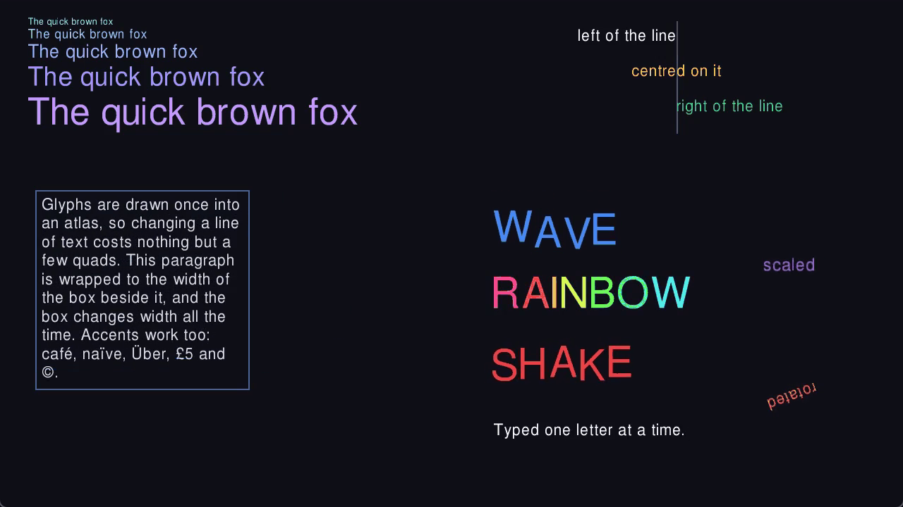
text/main.as 94 lines
// Text: one scalable font at several sizes, alignment, wrapping and effects letter by letter.
class TextScreen : Screen
{
array<Font@> sizes;
Font@ body = Assets::font("global:freesans.sfn", 24);
Font@ big = Assets::font("global:freesans.sfn", 64);
float t = 0;
string story = "Glyphs are drawn once into an atlas, so changing a line of text costs nothing but a few quads. "
"This paragraph is wrapped to the width of the box beside it, and the box changes width all the time. "
"Accents work too: caf\xC3\xA9, na\xC3\xAFve, \xC3\x9C" "ber, \xC2\xA3" "5 and \xC2\xA9.";
void onEnter()
{
array<uint> points = { 14, 20, 28, 40, 56 };
for (uint i = 0; i < points.length(); i++)
sizes.insertLast(Assets::font("global:freesans.sfn", points[i]));
}
void update(float dt) { t += dt; }
void draw(Canvas@ c)
{
c.design(1280, 720);
c.rect(0, 0, 1280, 720, Color(0.06f, 0.06f, 0.09f));
float y = 24;
for (uint i = 0; i < sizes.length(); i++)
{
c.text(sizes[i], "The quick brown fox", 40, y, hsv(0.5f + float(i) * 0.06f, 0.4f, 1));
y += sizes[i].measure("X").y;
}
// Alignment around a line.
c.line(960, 30, 960, 190, 2, Color(0.3f, 0.34f, 0.44f));
c.text(body, "left of the line", 960, 40, White, AlignRight);
c.text(body, "centred on it", 960, 90, Yellow, AlignCenter);
c.text(body, "right of the line", 960, 140, Green, AlignLeft);
// Wrapping.
float width = 420 + 140 * sin(t * 0.7f);
float height = c.paragraph(body, story, 60, 280, width, Color(0.85f, 0.88f, 0.95f));
c.rectLine(50, 270, width + 20, height + 20, 2, Color(0.3f, 0.4f, 0.6f));
// Letter by letter.
wave(c, "WAVE", 700, 290);
rainbow(c, "RAINBOW", 700, 390);
shake(c, "SHAKE", 700, 490);
typed(c, "Typed one letter at a time...", 700, 600);
c.push();
c.translate(1120, 560);
c.rotate(t * 25);
c.text(body, "rotated", 0, -14, Orange, AlignCenter);
c.pop();
c.push();
c.translate(1120, 380);
float s = 1 + 0.5f * sin(t * 2);
c.scale(s, s);
c.text(body, "scaled", 0, -14, Purple, AlignCenter);
c.pop();
}
void wave(Canvas@ c, const string &in text, float x, float y)
{
for (uint i = 0; i < text.length(); i++)
{
string letter = text.substr(i, 1);
x += c.text(big, letter, x, y + sin(t * 4 + float(i) * 0.7f) * 16, Blue);
}
}
void rainbow(Canvas@ c, const string &in text, float x, float y)
{
for (uint i = 0; i < text.length(); i++)
x += c.text(big, text.substr(i, 1), x, y, hsv(t * 0.3f + float(i) * 0.1f, 0.7f, 1));
}
void shake(Canvas@ c, const string &in text, float x, float y)
{
for (uint i = 0; i < text.length(); i++)
x += c.text(big, text.substr(i, 1), x + random(-3, 3), y + random(-3, 3), Red);
}
void typed(Canvas@ c, const string &in text, float x, float y)
{
uint count = uint(t * 12) % (text.length() + 20);
string shown = text.substr(0, count > text.length() ? text.length() : count);
float w = c.text(body, shown, x, y, White);
if (int(t * 3) % 2 == 0)
c.rect(x + w + 3, y, 3, 26, White);
}
}
Blending
Additive light, alpha and a fire made of particles
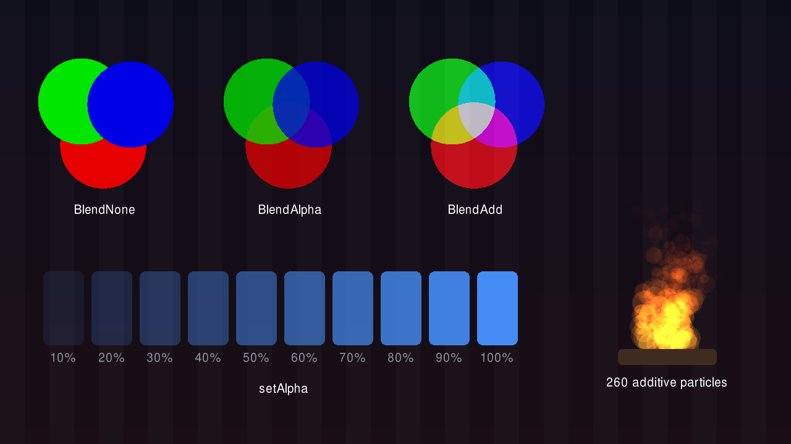
blend/main.as 96 lines
// Blend modes, and a fire built from additive particles.
class Particle
{
float x, y, vx, vy, life, size;
}
class BlendScreen : Screen
{
Font@ font = Assets::font("global:freesans.sfn", 22);
array<Particle> sparks(260); // reused for ever, so nothing is allocated while it burns
float t = 0;
void onEnter()
{
for (uint i = 0; i < sparks.length(); i++)
{
light(sparks[i]);
sparks[i].life = random();
}
}
void light(Particle@ p)
{
p.x = random(-40, 40);
p.y = random(-6, 6);
p.vx = random(-18, 18);
p.vy = random(-190, -90);
p.life = 1;
p.size = random(10, 26);
}
void update(float dt)
{
t += dt;
for (uint i = 0; i < sparks.length(); i++)
{
Particle@ p = sparks[i];
p.life -= dt * 0.75f;
p.x += (p.vx + sin(t * 3 + p.y * 0.03f) * 30) * dt;
p.y += p.vy * dt;
if (p.life <= 0)
light(p);
}
}
void lights(Canvas@ c, float x, float y, Blend mode, const string &in label)
{
c.push();
c.blend = mode;
for (int i = 0; i < 3; i++)
{
float a = t + float(i) * 2.0944f;
c.circle(x + cos(a) * 46, y + sin(a) * 46, 70, fade(hsv(float(i) / 3, 1, 0.9f), mode == BlendNone ? 1.0f : 0.75f));
}
c.pop();
c.text(font, label, x, y + 140, White, AlignCenter);
}
void draw(Canvas@ c)
{
c.design(1280, 720);
c.gradient(0, 0, 1280, 720, Color(0.05f, 0.05f, 0.1f), Color(0.1f, 0.05f, 0.08f));
for (int i = 0; i < 16; i++)
c.rect(float(i) * 80, 0, 40, 720, Color(1, 1, 1, 0.02f));
lights(c, 170, 190, BlendNone, "BlendNone");
lights(c, 470, 190, BlendAlpha, "BlendAlpha");
lights(c, 770, 190, BlendAdd, "BlendAdd");
// Fire.
c.push();
c.translate(1080, 560);
c.blend = BlendAdd;
for (uint i = 0; i < sparks.length(); i++)
{
Particle@ p = sparks[i];
float s = p.size * (0.4f + p.life * 0.6f);
c.circle(p.x, p.y, s, Color(1, 0.25f + 0.5f * p.life * p.life, 0.1f * p.life, 0.16f * p.life));
}
c.pop();
c.roundRect(1000, 566, 160, 26, 8, Color(0.25f, 0.17f, 0.12f));
c.text(font, "260 additive particles", 1080, 610, White, AlignCenter);
// Fading.
for (int i = 0; i < 10; i++)
{
c.push();
c.alpha = float(i + 1) / 10;
c.roundRect(70 + float(i) * 78, 440, 66, 120, 10, Blue);
c.pop();
c.text(font, formatInt((i + 1) * 10) + "%", 103 + float(i) * 78, 570, Gray, AlignCenter);
}
c.text(font, "alpha", 460, 620, White, AlignCenter);
}
}
Clipping
Scrolling lists, windows within windows and masks
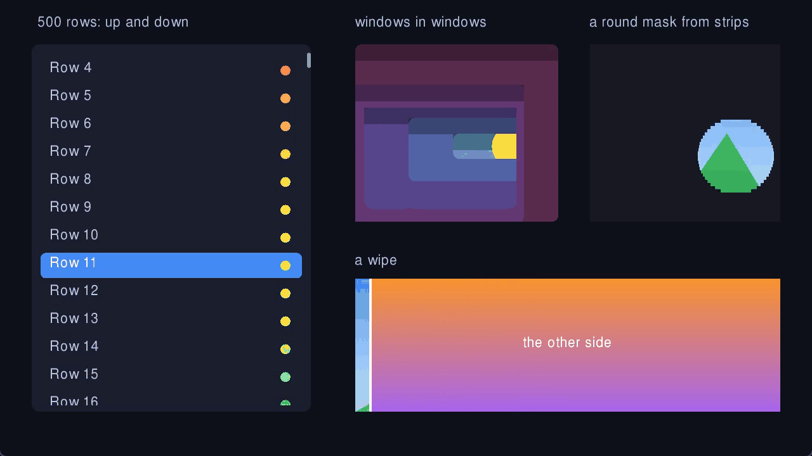
clip/main.as 99 lines
// Clipping: a list that scrolls in a window, windows inside windows, and a spotlight.
class ClipScreen : Screen
{
Font@ font = Assets::font("global:freesans.sfn", 24);
int chosen = 0;
float scroll = 0;
float t = 0;
int rows = 500;
float rowH = 44;
float viewH = 560;
void update(float dt)
{
t += dt;
if (Input::repeated("down") && chosen + 1 < rows) chosen++;
if (Input::repeated("up") && chosen > 0) chosen--;
float wanted = clamp(scroll, float(chosen + 1) * rowH - viewH, float(chosen) * rowH);
scroll = lerp(scroll, wanted < 0 ? 0 : wanted, 0.25f);
}
void draw(Canvas@ c)
{
c.design(1280, 720);
c.rect(0, 0, 1280, 720, Color(0.06f, 0.07f, 0.1f));
// Only the rows in view are drawn, so five hundred cost the same as twelve.
c.text(font, "500 rows: up and down", 60, 24, Color(0.7f, 0.76f, 0.86f));
c.roundRect(50, 70, 440, viewH + 20, 12, Color(0.1f, 0.12f, 0.18f));
c.push();
c.clip(60, 80, 420, viewH);
int first = int(scroll / rowH);
for (int i = first; i < rows && i < first + 15; i++)
{
float y = 80 + float(i) * rowH - scroll;
if (i == chosen)
c.roundRect(64, y + 2, 412, rowH - 4, 8, Blue);
c.text(font, "Row " + formatInt(i + 1), 80, y + 7, i == chosen ? White : Color(0.75f, 0.8f, 0.88f));
c.circle(450, y + rowH / 2, 8, hsv(float(i) * 0.02f, 0.7f, 1));
}
c.pop();
float bar = viewH * viewH / (float(rows) * rowH);
c.roundRect(484, 80 + scroll / (float(rows) * rowH) * viewH, 6, bar < 24 ? 24 : bar, 3, Gray);
// Each window clips what is inside it, to the overlap of them all.
c.text(font, "windows in windows", 560, 24, Color(0.7f, 0.76f, 0.86f));
c.push();
windowIn(c, 560, 70, 320, 280, 4);
c.pop();
// A spotlight, from thin clips.
c.text(font, "a round mask from strips", 930, 24, Color(0.7f, 0.76f, 0.86f));
float cx = 1080 + cos(t) * 80;
float cy = 210 + sin(t * 1.4f) * 70;
c.rect(930, 70, 300, 280, Color(0.1f, 0.1f, 0.14f));
for (float y = -60; y < 60; y += 5)
{
float half = sqrt(3600 - y * y);
c.push();
c.clip(930, 70, 300, 280);
c.clip(cx - half, cy + y, half * 2, 5);
picture(c, 930, 70, 300, 280);
c.pop();
}
// A wipe between two pictures.
c.text(font, "a wipe", 560, 400, Color(0.7f, 0.76f, 0.86f));
float at = 670 * (0.5f + 0.5f * sin(t * 0.8f));
c.push();
c.clip(560, 440, at, 210);
picture(c, 560, 440, 670, 210);
c.pop();
c.push();
c.clip(560 + at, 440, 670 - at, 210);
c.gradient(560, 440, 670, 210, Orange, Purple);
c.text(font, "the other side", 895, 530, White, AlignCenter);
c.pop();
c.rect(560 + at - 2, 440, 4, 210, White);
}
void windowIn(Canvas@ c, float x, float y, float w, float h, int depth)
{
c.clip(x, y, w, h);
c.roundRect(x, y, w, h, 10, hsv(0.55f + float(depth) * 0.08f, 0.5f, 0.35f + 0.1f * float(4 - depth)));
c.rect(x, y, w, 26, Color(0, 0, 0, 0.3f));
if (depth > 0)
windowIn(c, x + 26 + sin(t + depth) * 50, y + 46 + cos(t * 1.2f + depth) * 30, w - 40, h - 60, depth - 1);
else
c.circle(x + w / 2 + sin(t * 2) * 90, y + h / 2, 34, Yellow);
}
void picture(Canvas@ c, float x, float y, float w, float h)
{
c.gradient(x, y, w, h, Color(0.3f, 0.6f, 0.95f), Color(0.8f, 0.9f, 1));
c.circle(x + w * 0.75f, y + h * 0.3f, 34, Yellow);
c.triangle(Vec2(x, y + h), Vec2(x + w * 0.35f, y + h * 0.35f), Vec2(x + w * 0.7f, y + h), Green, Color(0.6f, 0.9f, 0.6f), Green);
c.triangle(Vec2(x + w * 0.4f, y + h), Vec2(x + w * 0.72f, y + h * 0.5f), Vec2(x + w, y + h), Color(0.15f, 0.55f, 0.3f), Green, Color(0.15f, 0.55f, 0.3f));
}
}
Sprites
Sprite animation
Frame animation and tiled water; steer the ship
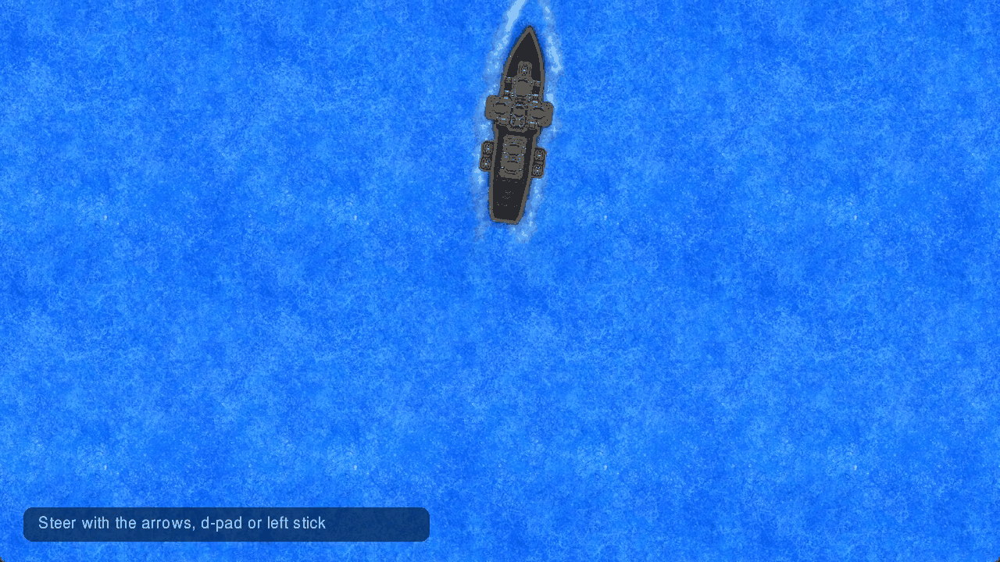
waves/main.as 58 lines
// Sprite animation: five ripple frames around a ship, over tiled water.
class WavesScreen : Screen
{
Texture@ water = Assets::texture("asset:water.png");
Texture@ ship = Assets::texture("asset:ship.png");
array<Texture@> ripples;
Font@ font = Assets::font("global:freesans.sfn", 22);
Vec2 position(640, 400);
Vec2 velocity;
float heading = 0;
float frame = 0;
float t = 0;
void onEnter()
{
for (int i = 0; i < 5; i++)
ripples.insertLast(Assets::texture("asset:ripple" + formatInt(i) + ".png"));
}
void update(float dt)
{
t += dt;
velocity = velocity + Input::move * (600 * dt);
velocity = velocity * (1 - 1.8f * dt);
position = position + velocity * dt;
position.x = clamp(position.x, 80, 1200);
position.y = clamp(position.y, 160, 600);
heading = lerp(heading, velocity.x * 0.1f, 0.08f);
// The faster it goes, the faster the water moves.
frame += dt * (6 + sqrt(velocity.dot(velocity)) * 0.03f);
}
void draw(Canvas@ c)
{
c.design(1280, 720);
c.tile(water, 0, 0, 1280, 720, 320, 320, sin(t * 0.4f) * 30, t * 40);
c.blend = BlendAdd;
c.tile(water, 0, 0, 1280, 720, 460, 460, -t * 24, t * 16, Color(1, 1, 1, 0.25f));
c.blend = BlendAlpha;
c.push();
c.translate(position.x, position.y);
c.rotate(heading);
// Two frames at once, one fading into the next, look smoother than one.
uint now = uint(frame) % ripples.length();
uint next = (now + 1) % ripples.length();
float part = frame - float(int(frame));
c.image(ripples[now], -80, -208, 160, 415, fade(White, 1 - part));
c.image(ripples[next], -80, -208, 160, 415, fade(White, part));
c.image(ship, -46, -138 + sin(t * 2) * 2, 92, 276);
c.pop();
c.roundRect(30, 650, 520, 44, 12, Color(0, 0, 0, 0.5f));
c.text(font, "Steer with the arrows, d-pad or left stick", 50, 660);
}
}
Parallax
Scrolling layers that fit any screen size

parallax/main.as 56 lines
// Layers that scroll at different speeds. The old version loaded a set of images per resolution;
// this one is drawn once in design units and fits any screen.
class ParallaxScreen : Screen
{
Texture@ nebula = Assets::texture("asset:nebula.png");
Texture@ farStars = Assets::texture("asset:stars1.png");
Texture@ nearStars = Assets::texture("asset:stars2.png");
Texture@ ship = Assets::texture("asset:ship.png");
Font@ font = Assets::font("global:freesans.sfn", 22);
float travel = 0;
float speed = 120;
Vec2 position(300, 360);
float bank = 0;
void update(float dt)
{
Vec2 move = Input::move;
speed = clamp(speed + move.x * 260 * dt, 40, 700);
position.y = clamp(position.y + move.y * 320 * dt, 80, 640);
position.x = lerp(position.x, 220 + speed * 0.5f, 0.05f);
bank = lerp(bank, move.y * 14, 0.1f);
travel += speed * dt;
}
void draw(Canvas@ c)
{
c.design(1280, 720);
c.tile(nebula, 0, 0, 1280, 720, 900, 900, -travel * 0.08f, -60);
c.tile(farStars, 0, 0, 1280, 720, 700, 700, -travel * 0.25f, 0);
c.tile(nearStars, 0, 0, 1280, 720, 900, 900, -travel * 0.6f, 40);
// Streaks close to the camera.
for (int i = 0; i < 24; i++)
{
float depth = 1.2f + float(i % 5) * 0.5f;
float x = 1400 - float((travel * depth + float(i) * 173)) % 1600;
float y = float(i * 97 % 720);
c.rect(x, y, speed * 0.12f * depth, 2, Color(0.7f, 0.85f, 1, 0.35f));
}
c.push();
c.translate(position.x, position.y);
c.rotate(90 + bank);
c.blend = BlendAdd;
float flame = 26 + speed * 0.06f + random(0, 10);
c.triangle(Vec2(-14, 44), Vec2(14, 44), Vec2(0, 44 + flame), Color(0.4f, 0.7f, 1, 0.9f), Color(0.4f, 0.7f, 1, 0.9f), Color(0.1f, 0.2f, 1, 0));
c.blend = BlendAlpha;
c.image(ship, -55, -48, 110, 95);
c.pop();
c.roundRect(30, 650, 620, 44, 12, Color(0, 0, 0, 0.5f));
c.text(font, "Left and right change speed, up and down steer. Speed " + formatInt(int(speed)), 50, 660);
}
}
Stress test
How many sprites until it slows down?
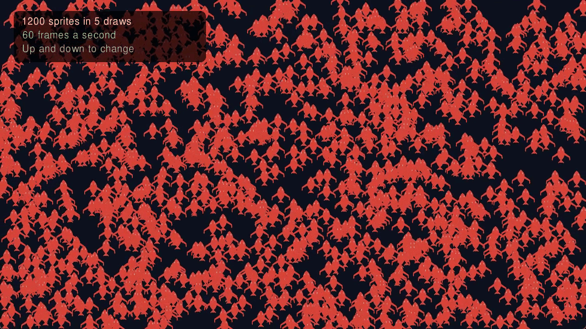
stress/main.as 63 lines
// How much can it draw? Every sprite shares one image, so however many there are it is one draw.
class StressScreen : Screen
{
Texture@ sprite = Assets::texture("asset:FishShip.png");
Font@ font = Assets::font("global:freesans.sfn", 24);
array<float> x, y, vx, vy;
uint count = 0;
float t = 0;
void onEnter() { add(200); }
void add(uint more)
{
for (uint i = 0; i < more && count < 2000; i++)
{
x.insertLast(random(0, 1280));
y.insertLast(random(0, 720));
vx.insertLast(random(-160, 160));
vy.insertLast(random(-160, 160));
count++;
}
}
void remove(uint less)
{
for (uint i = 0; i < less && count > 0; i++)
{
x.removeLast();
y.removeLast();
vx.removeLast();
vy.removeLast();
count--;
}
}
void update(float dt)
{
t += dt;
if (Input::repeated("up")) add(100);
if (Input::repeated("down")) remove(100);
for (uint i = 0; i < count; i++)
{
x[i] += vx[i] * dt;
y[i] += vy[i] * dt;
if (x[i] < 0 || x[i] > 1280) vx[i] = -vx[i];
if (y[i] < 0 || y[i] > 720) vy[i] = -vy[i];
}
}
void draw(Canvas@ c)
{
c.design(1280, 720);
c.rect(0, 0, 1280, 720, Color(0.05f, 0.07f, 0.12f));
for (uint i = 0; i < count; i++)
c.image(sprite, x[i] - 22, y[i] - 20, 44, 40);
c.roundRect(30, 24, 420, 112, 12, Color(0, 0, 0, 0.7f));
c.text(font, formatInt(count) + " sprites in " + formatInt(App::draws) + " draws", 50, 36);
c.text(font, formatInt(int(App::fps + 0.5f)) + " frames a second", 50, 66, App::fps > 55 ? Green : Orange);
c.text(font, "Up and down to change", 50, 96, Gray);
}
}
Effects
Cracktro
Scroller, raster bars, starfield and a sprite sheet

cracktro/main.as 121 lines
// The Nexgen cracktro, rebuilt: scroller, raster bars, starfield, sprite sheet, line mesh and a chiptune
// that they all move to.
class CracktroScreen : Screen
{
Texture@ sheet = Assets::texture("asset:sprite-sheet.png");
Font@ font = Assets::font("global:freesans.sfn", 44);
Font@ logo = Assets::font("global:freesans.sfn", 110);
Sound@ tune = Assets::sound("global:music/chip.ogg");
float beat = 0;
string message = "HELLO WORLD ... THIS SCROLLER IS ONE STRING, DRAWN A LETTER AT A TIME WITH EVERY LETTER ON ITS OWN SINE WAVE ... "
"GREETINGS TO EVERYONE WHO STILL WRITES CODE FOR OLD MACHINES ... ";
array<float> widths;
float total = 0;
float t = 0;
array<float> sx, sy, sz;
void onEnter()
{
tune.playMusic(0.8f, 0.2f);
// Measured once: the scroller only needs to know how wide each letter is.
for (uint i = 0; i < message.length(); i++)
{
widths.insertLast(font.measure(message.substr(i, 1)).x);
total += widths[i];
}
for (int i = 0; i < 180; i++)
{
sx.insertLast(random(-1, 1));
sy.insertLast(random(-1, 1));
sz.insertLast(random(0.05f, 1));
}
}
void update(float dt)
{
t += dt;
float low = 0;
for (uint i = 0; i < 5; i++) low += Audio::spectrum(i) / 5;
beat = low > beat ? low : beat * 0.9f;
for (uint i = 0; i < sz.length(); i++)
{
sz[i] -= dt * (0.2f + beat * 0.5f);
if (sz[i] < 0.05f)
sz[i] = 1;
}
}
void draw(Canvas@ c)
{
c.design(1280, 720);
c.rect(0, 0, 1280, 720, Color(0.01f, 0.01f, 0.03f));
for (uint i = 0; i < sz.length(); i++)
{
float px = 640 + sx[i] / sz[i] * 300;
float py = 360 + sy[i] / sz[i] * 300;
float s = (1 - sz[i]) * 4 + 0.5f;
c.rect(px, py, s, s, Color(0.8f, 0.85f, 1, 1 - sz[i]));
}
// Raster bars.
c.blend = BlendAdd;
for (int i = 0; i < 9; i++)
{
float y = 330 + sin(t * 1.4f + float(i) * 0.35f) * 190;
Color bar = hsv(float(i) / 9 + t * 0.05f, 0.8f, 0.8f);
// Each bar is as thick as a part of the sound is strong.
float thick = 8 + Audio::spectrum(uint(i) * 3) * 24;
c.gradient(0, y - thick, 1280, thick, fade(bar, 0), bar);
c.gradient(0, y, 1280, thick, bar, fade(bar, 0));
}
c.blend = BlendAlpha;
c.push();
c.translate(640, 112);
c.scale(1 + beat * 0.12f, 1 + beat * 0.12f);
c.text(logo, "NEXGEN", 5, -61, Color(0, 0, 0, 0.6f), AlignCenter);
c.text(logo, "NEXGEN", 0, -66, hsv(t * 0.1f, 0.3f, 1), AlignCenter);
c.pop();
// The sheet is 16 by 16 frames.
uint frame = uint(t * 20) % 255;
for (int i = 0; i < 5; i++)
{
float a = t * 0.8f + float(i) * 1.2566f;
c.push();
c.translate(640 + cos(a) * 330, 370 + sin(a) * 110);
float s = 1.6f + sin(a) * 0.5f;
c.scale(s, s);
c.rotate(sin(t * 2 + float(i)) * 12);
c.filter = FilterNearest;
c.sprite(sheet, 16, 16, (frame + uint(i) * 40) % 255, -32, -32, 64, 64);
c.pop();
}
// A ring of lines, as in the first version.
for (int i = 0; i < 36; i++)
{
float a0 = float(i) * 0.17453f + t;
float a1 = float(i + 1) * 0.17453f + t;
float r = 250 + sin(t * 3 + float(i) * 0.5f) * 10;
c.line(640 + cos(a0) * r, 370 + sin(a0) * r * 0.5f, 640 + cos(a1) * r, 370 + sin(a1) * r * 0.5f, 2, hsv(float(i) / 36, 0.6f, 1));
}
// Scroller: start at the first letter that can be seen.
float x = 1280 - (t * 220) % (total + 1280);
for (uint i = 0; i < message.length() && x < 1290; i++)
{
if (x + widths[i] > -10)
{
float y = 610 + sin(x * 0.008f + t * 3) * 40;
c.text(font, message.substr(i, 1), x, y, hsv(x * 0.0006f + t * 0.1f, 0.5f, 1));
}
x += widths[i];
}
}
}
Wireframe
A 3D shape drawn with 2D lines

wireframe/main.as 132 lines
// A 3D shape turned and projected in script, and drawn with 2D lines and triangles.
class WireframeScreen : Screen
{
Font@ font = Assets::font("global:freesans.sfn", 24);
array<Vec3> points;
array<uint> edges;
float t = 0;
float spin = 0;
uint shape = 0;
void onEnter() { build(); }
void edge(uint a, uint b)
{
edges.insertLast(a);
edges.insertLast(b);
}
void build()
{
points.resize(0);
edges.resize(0);
if (shape == 0)
cube();
else if (shape == 1)
ball(10, 16);
else
ring(28, 12);
}
void cube()
{
for (uint i = 0; i < 8; i++)
points.insertLast(Vec3((i & 1) != 0 ? 1 : -1, (i & 2) != 0 ? 1 : -1, (i & 4) != 0 ? 1 : -1));
for (uint i = 0; i < 8; i++)
{
for (uint bit = 1; bit < 8; bit *= 2)
{
if ((i & bit) == 0)
edge(i, i | bit);
}
}
}
void ball(uint rings, uint around)
{
for (uint r = 1; r < rings; r++)
{
float a = float(r) * 3.14159f / float(rings);
for (uint s = 0; s < around; s++)
{
float b = float(s) * 6.28318f / float(around);
points.insertLast(Vec3(sin(a) * cos(b), cos(a), sin(a) * sin(b)) * 1.4f);
uint row = (r - 1) * around;
edge(row + s, row + (s + 1) % around);
if (r + 1 < rings)
edge(row + s, row + around + s);
}
}
}
void ring(uint around, uint tube)
{
for (uint i = 0; i < around; i++)
{
float a = float(i) * 6.28318f / float(around);
for (uint j = 0; j < tube; j++)
{
float b = float(j) * 6.28318f / float(tube);
float r = 1.2f + 0.45f * cos(b);
points.insertLast(Vec3(cos(a) * r, sin(b) * 0.45f, sin(a) * r));
edge(i * tube + j, i * tube + (j + 1) % tube);
edge(i * tube + j, ((i + 1) % around) * tube + j);
}
}
}
void update(float dt)
{
t += dt;
Vec2 move = Input::move;
spin += dt * (0.7f + move.x * 3);
if (Input::pressed("accept"))
{
shape = (shape + 1) % 3;
build();
}
}
Vec3 turn(const Vec3 &in p)
{
float cy = cos(spin), sy = sin(spin);
Vec3 q(p.x * cy + p.z * sy, p.y, p.z * cy - p.x * sy);
float tilt = 0.5f + 0.3f * sin(t * 0.6f);
float cx = cos(tilt), sx = sin(tilt);
return Vec3(q.x, q.y * cx - q.z * sx, q.y * sx + q.z * cx);
}
void draw(Canvas@ c)
{
c.design(1280, 720);
c.gradient(0, 0, 1280, 720, Color(0.02f, 0.04f, 0.08f), Color(0.02f, 0.1f, 0.12f));
// A floor that runs to the horizon.
for (int i = -12; i <= 12; i++)
c.line(640 + float(i) * 30, 470, 640 + float(i) * 260, 720, 1, Color(0.2f, 0.6f, 0.7f, 0.4f));
for (int i = 0; i < 10; i++)
{
float z = (float(i) + (t * 0.6f) % 1) / 10;
c.rect(0, 470 + z * z * 250, 1280, 1 + z, Color(0.2f, 0.6f, 0.7f, 0.5f * z));
}
array<Vec3> seen(points.length());
for (uint i = 0; i < points.length(); i++)
{
Vec3 p = turn(points[i]);
float depth = 620 / (4 + p.z);
seen[i] = Vec3(640 + p.x * depth, 320 - p.y * depth, p.z);
}
c.blend = BlendAdd;
for (uint i = 0; i < edges.length(); i += 2)
{
Vec3 a = seen[edges[i]];
Vec3 b = seen[edges[i + 1]];
float near = clamp(0.6f - (a.z + b.z) * 0.2f, 0.12f, 1);
c.line(a.x, a.y, b.x, b.y, 1.5f + near * 2, fade(hsv(0.45f + a.z * 0.06f, 0.7f, 1), near));
}
c.blend = BlendAlpha;
c.text(font, Input::usingPad ? "A next shape Left and right spin" : "Enter next shape Left and right spin", 640, 670, Color(0.7f, 0.85f, 0.9f), AlignCenter);
}
}
Shaders
Effects of your own, on things and over the whole picture
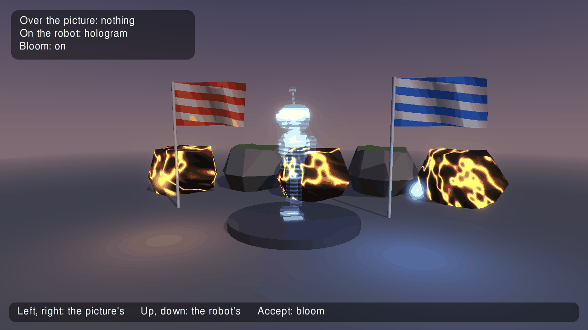
shaders/main.as 137 lines
// Shaders, written once and compiled for whichever GPU there is. Left and right change the picture's;
// up and down the robot's. Where there are none, everything is drawn as it is.
class ShadersScreen : Screen
{
Font@ font = Assets::font("global:freesans.sfn", 24);
Font@ big = Assets::font("global:freesans.sfn", 36);
Model@ robot = Assets::model("global:model/robot.glb");
Model@ rock = Assets::model("global:model/rock.glb");
array<string> pictureNames = { "nothing", "grade", "ink", "tube", "pixels", "ripple", "glitch" };
array<string> surfaceNames = { "nothing", "hologram", "dissolve", "lava" };
array<Effect@> pictures;
array<Effect@> surfaces;
Effect@ flag = Assets::effect("global:effect/flag.fx");
Effect@ lava = Assets::effect("global:effect/lava.fx");
uint picture = 0, surface = 0;
bool spill = true;
Entity@ hero;
float at = 0, since = 0;
ShadersScreen()
{
for (uint i = 1; i < pictureNames.length(); i++)
pictures.insertLast(Assets::effect("global:effect/" + pictureNames[i] + ".fx"));
for (uint i = 1; i < surfaceNames.length(); i++)
surfaces.insertLast(Assets::effect("global:effect/" + surfaceNames[i] + ".fx"));
}
void onEnter()
{
Mesh@ floor = Mesh();
floor.plane(40, 40, 30, Color(0.4f, 0.42f, 0.48f));
Space::spawn(Vec3(0, 0, 0)).mesh(floor);
Entity@ stand = Space::spawn(Vec3(0, 0.1f, 0));
stand.shape(SolidCylinder, Color(0.25f, 0.27f, 0.34f));
stand.size = Vec3(3, 0.2f, 3);
@hero = Space::spawn(Vec3(0, 0.2f, 0));
hero.model(robot);
hero.size = Vec3(1.4f, 1.4f, 1.4f);
hero.shine = 0.5f;
// A flag: a sheet of squares for the shader to move.
Mesh@ cloth = Mesh();
for (int y = 0; y <= 8; y++)
for (int x = 0; x <= 14; x++)
cloth.vertex(Vec3(float(x) * 0.14f, float(y) * 0.14f, 0), Vec3(0, 0, 1), White, float(x) / 14, float(y) / 8);
for (int y = 0; y < 8; y++)
for (int x = 0; x < 14; x++)
{
uint a = uint(y * 15 + x);
cloth.triangle(a, a + 1, a + 16);
cloth.triangle(a, a + 16, a + 15);
}
for (int i = 0; i < 2; i++)
{
float x = i == 0 ? -3.4f : 2.2f;
Entity@ pole = Space::spawn(Vec3(x, 1.7f, -1));
pole.shape(SolidCylinder, Color(0.75f, 0.75f, 0.8f));
pole.size = Vec3(0.08f, 3.4f, 0.08f);
Entity@ e = Space::spawn(Vec3(x + 0.04f, 2.25f, -1));
e.mesh(cloth, i == 0 ? Color(0.9f, 0.25f, 0.2f) : Color(0.2f, 0.45f, 0.9f));
e.twoSided = true;
e.effect(flag);
}
flag.set(0, 1);
flag.set(4, 0.95f); flag.set(5, 0.93f); flag.set(6, 0.88f);
lava.set(0, 1);
for (int i = 0; i < 5; i++)
{
Entity@ e = Space::spawn(Vec3(-4.5f + float(i) * 2.25f, 0, -3.4f - float(i % 2)));
e.model(rock);
e.size = Vec3(1.2f, 1.6f, 1.2f);
if (i % 2 == 0)
e.effect(lava);
}
Space::sky(Color(0.12f, 0.16f, 0.3f), Color(0.5f, 0.42f, 0.45f));
Space::sun(Vec3(0.5f, 0.6f, 0.6f), Color(0.6f, 0.53f, 0.47f));
Space::ambient(Color(0.26f, 0.28f, 0.36f), Color(0.2f, 0.18f, 0.2f));
Space::fog(Color(0.5f, 0.42f, 0.45f), 14, 30);
Space::shadows(0.6f, 12);
for (int i = 0; i < 2; i++)
{
Entity@ lamp = Space::spawn(Vec3(i == 0 ? -2.4f : 2.4f, 1.2f, 1.4f));
lamp.glow(0.6f, i == 0 ? Color(1, 0.6f, 0.3f) : Color(0.4f, 0.7f, 1));
lamp.light(i == 0 ? Color(1.1f, 0.6f, 0.3f) : Color(0.4f, 0.7f, 1.2f), 5);
}
}
void update(float dt)
{
at += dt;
uint count = pictureNames.length();
if (Input::repeated("right")) picture = (picture + 1) % count;
if (Input::repeated("left")) picture = (picture + count - 1) % count;
uint before = surface;
count = surfaceNames.length();
if (Input::repeated("down")) surface = (surface + 1) % count;
if (Input::repeated("up")) surface = (surface + count - 1) % count;
if (Input::pressed("accept")) spill = !spill;
since += dt;
if (surface != before)
{
since = 0;
hero.effect(surface == 0 ? null : surfaces[surface - 1]);
hero.blend = surface == 1 ? BlendAdd : BlendNone;
if (surface == 3)
surfaces[2].set(0, 1);
}
hero.animate(surface == 0 ? "wave" : surface == 1 ? "idle" : "dance");
hero.turn(Vec3(0, 1, 0), dt * 24);
// Values are told to a shader as they change.
surfaces[0].set(0, 0.12f); surfaces[0].set(1, 0.42f); surfaces[0].set(2, 0.55f);
surfaces[1].set(0, clamp(0.5f - cos(since * 1.6f) * 0.55f, 0, 1));
surfaces[1].set(4, 1); surfaces[1].set(5, 0.5f); surfaces[1].set(6, 0.15f);
pictures[0].set(0, 1); pictures[0].set(1, 0.6f);
pictures[2].set(0, 1);
pictures[3].set(0, 220); pictures[3].set(1, 6);
pictures[4].set(0, 1.4f);
pictures[5].set(0, 1);
Space::camera(Vec3(sin(at * 0.2f) * 2, 2.4f, 7.4f), Vec3(0, 1.4f, 0), 52);
}
void draw(Canvas@ c)
{
c.designHeight(720);
Space::draw(c);
bool blooms = !spill || c.bloom(0.7f, 0.72f);
bool shows = picture == 0 || c.effect(pictures[picture - 1]);
bool worn = surface == 0 || surfaces[surface - 1].works;
string no = " (not on this GPU)";
c.roundRect(24, 22, 400, 108, 16, Color(0, 0, 0, 0.45f));
c.text(font, "Over the picture: " + pictureNames[picture] + (shows ? "" : no), 44, 34);
c.text(font, "On the robot: " + surfaceNames[surface] + (worn ? "" : no), 44, 62);
c.text(font, "Bloom: " + (spill ? "on" : "off") + (blooms ? "" : no), 44, 90);
c.roundRect(20, 660, c.width - 40, 42, 12, Color(0, 0, 0, 0.45f));
c.text(font, "Left, right: the picture's Up, down: the robot's Accept: bloom", 40, 668);
}
}
Easing
Movement that starts, stops and bounces nicely
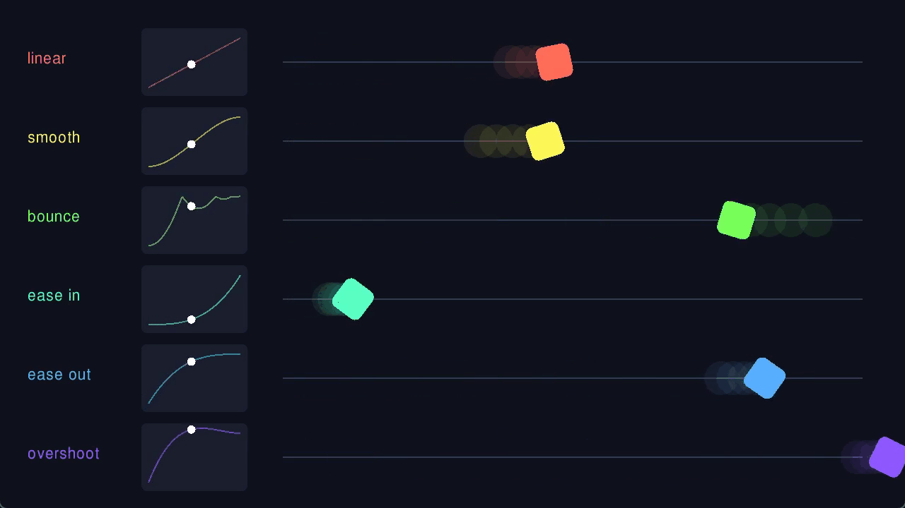
easing/main.as 64 lines
// The same journey, six ways.
class EasingScreen : Screen
{
Font@ font = Assets::font("global:freesans.sfn", 24);
array<string> names = { "linear", "smooth", "bounce", "ease in", "ease out", "overshoot" };
float t = 0;
void update(float dt) { t += dt; }
float ease(uint kind, float v)
{
if (kind == 0) return v;
if (kind == 1) return smooth(v);
if (kind == 2) return bounce(v);
if (kind == 3) return v * v * v;
if (kind == 4) return 1 - (1 - v) * (1 - v) * (1 - v);
float s = v - 1;
return s * s * (2.7f * s + 1.7f) + 1;
}
// There, a pause, and back.
float journey()
{
float phase = (t * 0.5f) % 2.6f;
if (phase < 1) return phase;
if (phase < 1.3f) return 1;
if (phase < 2.3f) return 2.3f - phase;
return 0;
}
void draw(Canvas@ c)
{
c.design(1280, 720);
c.rect(0, 0, 1280, 720, Color(0.06f, 0.07f, 0.11f));
float v = journey();
for (uint i = 0; i < names.length(); i++)
{
float y = 40 + float(i) * 112;
Color color = hsv(0.02f + float(i) * 0.14f, 0.65f, 1);
c.text(font, names[i], 40, y + 32, color);
// Its curve.
c.roundRect(200, y, 150, 96, 8, Color(0.1f, 0.12f, 0.18f));
for (int s = 0; s < 30; s++)
{
float a = float(s) / 30, b = float(s + 1) / 30;
c.line(210 + a * 130, y + 84 - ease(i, a) * 70, 210 + b * 130, y + 84 - ease(i, b) * 70, 2, fade(color, 0.6f));
}
c.circle(210 + v * 130, y + 84 - ease(i, v) * 70, 6, White);
// And in motion.
c.rect(400, y + 47, 820, 2, Color(0.2f, 0.24f, 0.34f));
float e = ease(i, v);
for (int g = 4; g > 0; g--)
c.circle(420 + ease(i, clamp(v - float(g) * 0.02f, 0, 1)) * 780, y + 48, 24, fade(color, 0.08f));
c.push();
c.translate(420 + e * 780, y + 48);
c.rotate(e * 360);
c.roundRect(-24, -24, 48, 48, 10, color);
c.pop();
}
}
}
Tweens
Values that move by themselves
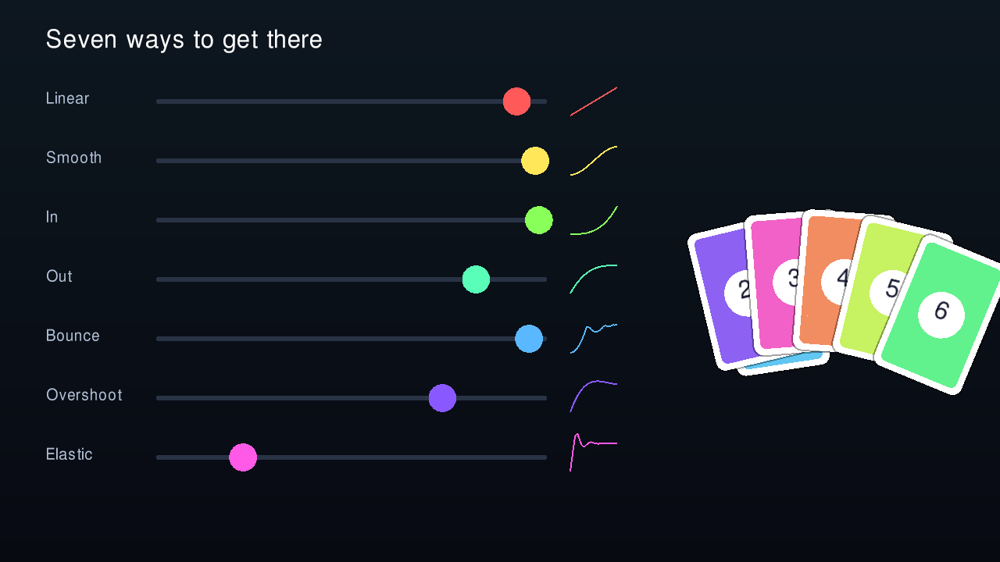
tweens/main.as 84 lines
// A Tween is a number that moves on its own. There is nothing to update: read its value and draw.
class TweensScreen : Screen
{
Font@ font = Assets::font("global:freesans.sfn", 22);
Font@ big = Assets::font("global:freesans.sfn", 34);
array<string> names = { "Linear", "Smooth", "In", "Out", "Bounce", "Overshoot", "Elastic" };
array<Ease> kinds = { EaseLinear, EaseSmooth, EaseIn, EaseOut, EaseBounce, EaseOvershoot, EaseElastic };
array<Tween> balls(7);
array<Tween> cardX(6);
array<Tween> cardY(6);
array<Tween> cardTurn(6);
bool atRight = false;
bool fanned = false;
Tween panel(-60);
void onEnter()
{
for (uint i = 0; i < 6; i++)
{
cardX[i] = Tween(1050);
cardY[i] = Tween(900);
}
panel.go(0, 0.8f, EaseOvershoot);
start(Coroutine(this.show));
}
void show()
{
while (true)
{
atRight = !atRight;
for (uint i = 0; i < 7; i++)
balls[i].go(atRight ? 1 : 0, 1.4f, kinds[i]);
fanned = !fanned;
for (uint i = 0; i < 6; i++)
{
float spread = float(i) - 2.5f;
cardX[i].go(fanned ? 1050 + spread * 62 : 1050 + float(i) * 3, 0.5f, EaseOvershoot);
cardY[i].go(fanned ? 360 + spread * spread * 7 : 360 - float(i) * 3, 0.5f, EaseOut);
cardTurn[i].go(fanned ? spread * 9 : 0, 0.5f, EaseOvershoot);
wait(0.07f);
}
wait(1.5f);
}
}
void draw(Canvas@ c)
{
c.design(1280, 720);
c.gradient(0, 0, 1280, 720, Color(0.05f, 0.09f, 0.12f), Color(0.03f, 0.04f, 0.07f));
c.push();
c.translate(0, panel.value);
c.text(big, "Seven ways to get there", 60, 36);
for (uint i = 0; i < 7; i++)
{
float y = 130 + float(i) * 76;
Color color = hsv(float(i) / 7, 0.65f, 1);
c.text(font, names[i], 60, y - 14, Color(0.7f, 0.76f, 0.85f));
c.roundRect(200, y - 3, 500, 6, 3, Color(0.16f, 0.2f, 0.27f));
c.circle(210 + balls[i].value * 480, y, 18, color);
// The curve itself.
for (uint k = 0; k < 20; k++)
{
float a = float(k) / 20, b = float(k + 1) / 20;
c.line(730 + a * 60, y + 18 - ease(kinds[i], a) * 36, 730 + b * 60, y + 18 - ease(kinds[i], b) * 36, 2, color);
}
}
c.pop();
for (uint i = 0; i < 6; i++)
{
c.push();
c.translate(cardX[i].value, cardY[i].value);
c.rotate(cardTurn[i].value);
c.roundRect(-62, -92, 124, 184, 14, Color(0, 0, 0, 0.35f));
c.roundRect(-60, -90, 120, 180, 12, White);
c.roundRect(-52, -82, 104, 164, 8, hsv(float(i) / 6 + 0.55f, 0.6f, 0.95f));
c.circle(0, 0, 30, White);
c.text(big, formatInt(i + 1), 0, -20, Color(0.1f, 0.1f, 0.2f), AlignCenter);
c.pop();
}
}
}
Interface
Gauges
Dials, meters and graphs of the engine itself

gauges/main.as 78 lines
// Dashboard pieces, showing live numbers from the engine itself.
class GaugesScreen : Screen
{
Font@ big = Assets::font("global:freesans.sfn", 44);
Font@ small = Assets::font("global:freesans.sfn", 20);
array<float> history(120);
uint at = 0;
float t = 0;
float shown = 0;
void update(float dt)
{
t += dt;
shown = lerp(shown, 1, 0.04f);
history[at] = App::fps;
at = (at + 1) % history.length();
}
void dial(Canvas@ c, float x, float y, float value, float most, const string &in label, const Color &in color)
{
c.arc(x, y, 110, 18, 135, 405, Color(0.15f, 0.18f, 0.26f));
float part = clamp(value / most, 0, 1) * shown;
c.arc(x, y, 110, 18, 135, 135 + 270 * part, color);
for (int i = 0; i <= 10; i++)
{
float a = (135 + float(i) * 27) * 3.14159f / 180;
c.line(x + cos(a) * 80, y + sin(a) * 80, x + cos(a) * 86, y + sin(a) * 86, 2, Gray);
}
float n = (135 + 270 * part) * 3.14159f / 180;
c.line(x, y, x + cos(n) * 70, y + sin(n) * 70, 4, White);
c.circle(x, y, 9, White);
c.text(big, formatInt(int(value + 0.5f)), x, y + 34, White, AlignCenter);
c.text(small, label, x, y + 92, Color(0.65f, 0.72f, 0.82f), AlignCenter);
}
void meter(Canvas@ c, float y, float value, float most, const string &in label, const Color &in color)
{
c.text(small, label, 60, y, Color(0.75f, 0.8f, 0.9f));
c.text(small, formatInt(int(value)) + " KB", 600, y, White, AlignRight);
c.roundRect(60, y + 30, 540, 18, 9, Color(0.15f, 0.18f, 0.26f));
float w = 540 * clamp(value / most, 0, 1) * shown;
c.roundRect(60, y + 30, w < 18 ? 18 : w, 18, 9, color);
}
void draw(Canvas@ c)
{
c.design(1280, 720);
c.gradient(0, 0, 1280, 720, Color(0.06f, 0.08f, 0.13f), Color(0.03f, 0.04f, 0.07f));
dial(c, 190, 190, App::fps, 120, "frames a second", Green);
dial(c, 500, 190, float(App::draws), 100, "draw calls", Blue);
dial(c, 810, 190, float(Assets::inUse + Assets::warm), 40, "assets loaded", Purple);
dial(c, 1100, 190, 50 + 50 * sin(t), 100, "a sine wave", Orange);
meter(c, 370, float(App::memoryKilobytes), 8192, "Engine memory", Blue);
meter(c, 440, float(App::scriptKilobytes), 4096, "Scripts", Purple);
meter(c, 510, float(Assets::textureKilobytes), float(Assets::budgetKilobytes), "Images and fonts, of their budget", Green);
meter(c, 580, float(Assets::soundKilobytes), float(Assets::soundBudgetKilobytes), "Sounds, of their budget", Orange);
// Frame rate over the last two seconds.
c.roundRect(660, 370, 560, 270, 14, Color(0.09f, 0.11f, 0.17f));
c.text(small, "Frame rate", 684, 384, Color(0.65f, 0.72f, 0.82f));
for (int i = 0; i <= 4; i++)
{
float y = 620 - float(i) * 50;
c.rect(684, y, 512, 1, Color(0.2f, 0.24f, 0.32f));
c.text(small, formatInt(i * 30), 1208, y - 12, Gray, AlignLeft);
}
for (uint i = 0; i + 1 < history.length(); i++)
{
float a = clamp(history[(at + i) % history.length()], 0, 130);
float b = clamp(history[(at + i + 1) % history.length()], 0, 130);
float x = 684 + float(i) * 512 / float(history.length());
c.line(x, 620 - a * 50 / 30, x + 4.4f, 620 - b * 50 / 30, 3, Green);
}
}
}
Widgets
Everything the interface has, in three themes

widgets/main.as 191 lines
// Every kind of widget. Add them to a page, say what to do when they are used, and that is all:
// layout, focus, the gamepad, the mouse and typing are the engine's.
class WidgetsScreen : Screen
{
Widget@ bar;
Widget@ volumeText;
Widget@ said;
float at = 0;
int popups = 0;
void onEnter()
{
build();
}
void build()
{
Ui::clear();
Widget@ page = Ui::root;
page.padding = 44;
page.gap = 16;
Widget@ top = page.row();
top.label("Widgets", "title").grow = 1;
top.label("Theme");
Widget@ theme = top.choice(array<string> = { "Nexgen", "Paper", "Arcade" }, themeNow, WidgetEvent(this.onTheme));
theme.id = "theme";
Widget@ tabs = page.tabs();
controls(tabs.tab("Controls"));
words(tabs.tab("Text"));
pictures(tabs.tab("Pictures"));
asking(tabs.tab("Asking"));
@said = page.label(" ", "small");
tabs.child(1).child(0).focus();
}
int themeNow = 0;
void onTheme(Widget@ w)
{
themeNow = w.chosen;
array<string> files = { "", "asset:paper.json", "asset:arcade.json" };
Ui::theme(files[uint(themeNow)]);
}
Widget@ named(Widget@ page, const string &in name)
{
Widget@ row = page.row(20);
row.label(name).grow = 1;
return row;
}
void controls(Widget@ page)
{
Widget@ sides = page.row(24);
sides.grow = 1;
sides.align = PlaceStretch;
Widget@ left = sides.panel();
left.grow = 1;
left.toggle("Sound effects", true, WidgetEvent(this.onToggle));
left.toggle("Subtitles", false, WidgetEvent(this.onToggle));
Widget@ volume = named(left, "Volume");
@volumeText = volume.label("60%", "small");
Widget@ slide = volume.slider(60, 0, 100, WidgetEvent(this.onVolume));
slide.step = 5;
slide.width = 320;
named(left, "Difficulty").choice(array<string> = { "Gentle", "Fair", "Hard", "Cruel" }, 1, WidgetEvent(this.onChoice)).width = 320;
Widget@ row = left.row();
row.button("Save", WidgetEvent(this.onSave)).grow = 1;
Widget@ off = row.button("Not now");
off.enabled = false;
off.grow = 1;
Widget@ right = sides.panel();
right.grow = 1;
right.label("Progress", "heading");
@bar = right.progress(0);
right.line();
right.label("What you use is named below", "small");
Widget@ grid = right.grid(3);
for (int i = 1; i <= 6; i++)
{
Widget@ b = grid.button(formatInt(i), WidgetEvent(this.onNumber));
b.tag = i;
}
}
void words(Widget@ page)
{
Widget@ panel = page.panel();
panel.grow = 1;
panel.label("A heading", "heading");
panel.paragraph("Text goes on to other lines to fit the width it is given. How tall it turns out is worked out from that, and everything under it moves down. Nothing here has a position: rows, columns and grids share out the room there is.");
panel.line();
Widget@ row = named(panel, "Your name");
Widget@ name = row.field("", "Type something", WidgetEvent(this.onTyped));
name.width = 420;
name.limit = 24;
Widget@ secret = named(panel, "A secret").field("", "Hidden", WidgetEvent(this.onTyped));
secret.secret = true;
secret.width = 420;
Widget@ number = named(panel, "A number").field("", "0", WidgetEvent(this.onTyped));
number.numeric = true;
number.width = 420;
panel.label("With a gamepad, the keyboard comes up on the screen", "small");
}
void pictures(Widget@ page)
{
Widget@ sides = page.row(24);
sides.grow = 1;
sides.align = PlaceStretch;
Widget@ left = sides.panel();
left.grow = 1;
left.label("Pictures in buttons", "heading");
Widget@ grid = left.grid(3);
for (int i = 0; i < 6; i++)
{
Widget@ b = grid.button("", WidgetEvent(this.onNumber));
b.tag = i + 1;
b.align = PlaceCenter;
b.image(Assets::texture("asset:cover" + formatInt(i) + ".jpg"), 130, 130);
b.label("Cover " + formatInt(i + 1), "small");
}
Widget@ right = sides.panel();
right.grow = 1;
right.label("Drawn by the script", "heading");
right.custom(WidgetDraw(this.drawn)).grow = 1;
}
void asking(Widget@ page)
{
Widget@ panel = page.panel();
panel.grow = 1;
panel.paragraph("Something in front must be dealt with first. Cancel closes it, and the focus goes back to where it was.");
Widget@ row = panel.row();
row.button("Ask a question", WidgetEvent(this.onAsk)).grow = 1;
row.button("Open a popup", WidgetEvent(this.onPopup)).grow = 1;
row.button("Say something", WidgetEvent(this.onToast)).grow = 1;
}
void onToggle(Widget@ w) { said.text = w.text + ": " + (w.checked ? "on" : "off"); }
void onChoice(Widget@ w) { said.text = "Chosen: " + w.chosenText; }
void onNumber(Widget@ w) { said.text = "Pressed " + formatInt(w.tag); }
void onTyped(Widget@ w) { said.text = "Typed: " + (w.secret ? "something" : w.text); }
void onSave(Widget@ w) { Ui::toast("Saved"); }
void onToast(Widget@ w) { Ui::toast("Hello! This goes by itself."); }
void onVolume(Widget@ w) { volumeText.text = formatInt(int(w.value)) + "%"; }
void onAsk(Widget@ w) { Ui::dialog("Leave the game?", "What you have done since the last save will be lost.", array<string> = { "Stay", "Leave" }, WidgetAnswer(this.onAnswer)); }
void onAnswer(int which) { said.text = which < 0 ? "Not answered" : which == 0 ? "You stayed" : "You left"; }
void onPopup(Widget@ w)
{
Widget@ popup = Ui::popup();
popups++;
popup.label("Popup number " + formatInt(popups), "heading");
popup.label("Anything can go in one");
popup.toggle("Like this");
popup.button("Another on top", WidgetEvent(this.onPopup));
Widget@ close = popup.button("Close", WidgetEvent(this.onClose));
}
void onClose(Widget@ w) { w.parent.close(); }
void drawn(Canvas@ c, Widget@ w)
{
Vec2 p = w.place, s = w.size;
for (int i = 0; i < 5; i++)
{
float a = at * (0.4f + float(i) * 0.13f) + float(i);
c.circle(p.x + s.x * 0.5f + cos(a) * s.x * 0.3f, p.y + s.y * 0.5f + sin(a * 1.3f) * s.y * 0.3f, 34, hsv(float(i) * 0.2f + at * 0.05f, 0.65f, 1));
}
}
void update(float dt)
{
at += dt;
bar.value = 0.5f - 0.5f * cos(at * 0.6f);
}
void draw(Canvas@ c)
{
c.designHeight(720);
Color top = themeNow == 1 ? Color(0.93f, 0.91f, 0.86f) : themeNow == 2 ? Color(0.1f, 0, 0.16f) : Color(0.07f, 0.09f, 0.15f);
Color bottom = themeNow == 1 ? Color(0.86f, 0.83f, 0.76f) : themeNow == 2 ? Color(0.02f, 0, 0.06f) : Color(0.03f, 0.04f, 0.07f);
c.gradient(0, 0, c.width, 720, top, bottom);
Ui::draw(c);
if (themeNow == 2)
c.bloom(0.6f, 0.6f);
}
}
Long list
Ten thousand rows, of which only those seen are made
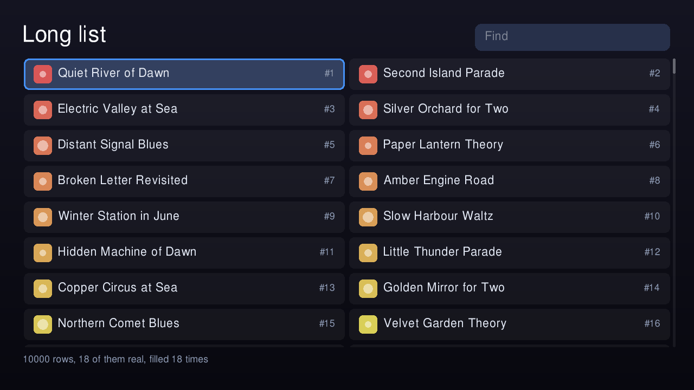
longlist/main.as 84 lines
// A list makes only the rows that can be seen, and uses them again as it scrolls. Type to find.
class LongListScreen : Screen
{
Widget@ list;
Widget@ field;
Widget@ status;
array<int> found;
int made = 0;
array<string> first = { "Quiet", "Amber", "Northern", "Paper", "Copper", "Silver", "Hidden", "Second", "Winter", "Velvet", "Broken", "Golden", "Distant", "Little", "Electric", "Slow" };
array<string> second = { "River", "Lantern", "Machine", "Garden", "Signal", "Harbour", "Comet", "Orchard", "Station", "Mirror", "Valley", "Engine", "Circus", "Island", "Letter", "Thunder" };
array<string> third = { "of Dawn", "Road", "Blues", "Parade", "in June", "Theory", "at Sea", "Waltz", "Revisited", "for Two" };
string name(int i) { return first[uint(i * 7) % first.length()] + " " + second[uint(i * 13 + i / 16) % second.length()] + " " + third[uint(i * 3 + i / 160) % third.length()]; }
void onEnter()
{
Widget@ page = Ui::root;
page.padding = 44;
page.gap = 14;
Widget@ top = page.row();
top.label("Long list", "title").grow = 1;
@field = top.field("", "Find", WidgetEvent(this.onFind));
field.width = 360;
@list = page.list(0, 58, WidgetRow(this.fill));
list.columns = 2;
list.onClick(WidgetEvent(this.onClick));
@status = page.label("", "small");
find("");
list.focus();
}
void find(const string &in what)
{
found.resize(0);
for (int i = 0; i < 10000; i++)
if (what == "" || lower(name(i)).findFirst(lower(what)) >= 0)
found.insertLast(i);
list.count = found.length();
}
string lower(const string &in text)
{
string small = text;
for (uint i = 0; i < small.length(); i++)
if (small[i] >= 65 && small[i] <= 90)
small[i] = small[i] + 32;
return small;
}
void fill(Widget@ row, int i)
{
made++;
int which = found[uint(i)];
Widget@ swatch = row.custom(WidgetDraw(this.swatch));
swatch.width = 34;
swatch.height = 34;
swatch.tag = which;
row.label(name(which)).grow = 1;
row.label("#" + formatInt(which + 1), "small");
}
void swatch(Canvas@ c, Widget@ w)
{
Vec2 p = w.place;
c.roundRect(p.x, p.y, 34, 34, 8, hsv(float(w.tag % 97) / 97.0f, 0.6f, 0.85f));
c.circle(p.x + 17, p.y + 17, 6 + float(w.tag % 5), Color(1, 1, 1, 0.5f));
}
void onFind(Widget@ w) { find(w.text); }
void onClick(Widget@ w) { Ui::toast("Played " + name(found[uint(w.chosen)])); }
void update(float dt)
{
status.text = formatInt(int(found.length())) + " rows, " + formatInt(int(list.children)) + " of them real, filled " + formatInt(made) + " times";
}
void draw(Canvas@ c)
{
c.designHeight(720);
c.gradient(0, 0, c.width, 720, Color(0.08f, 0.08f, 0.13f), Color(0.03f, 0.03f, 0.06f));
Ui::draw(c);
}
}
Form
A page from a file, in three languages
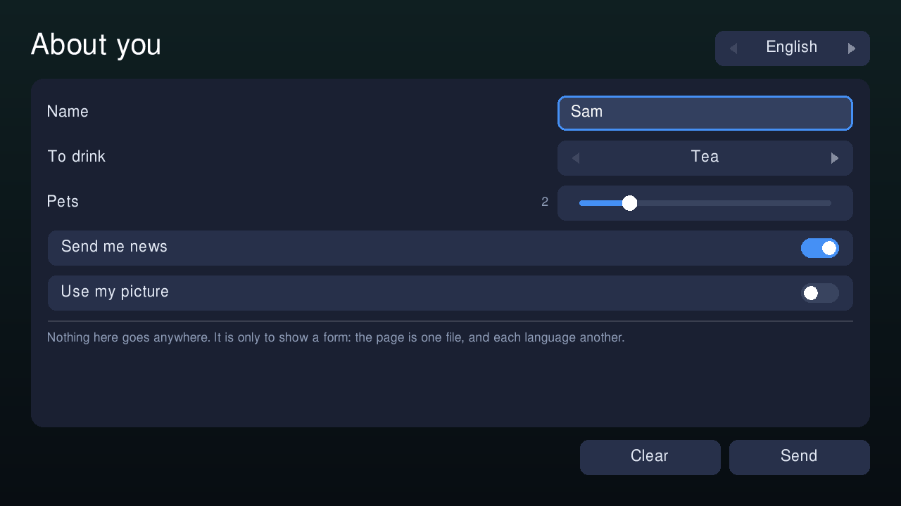
form/main.as 43 lines
// The page is in form.json and what it says in a file for each language. Only what it does is here.
class FormScreen : Screen
{
array<string> languages = { "asset:english.json", "asset:francais.json", "asset:deutsch.json" };
void onEnter()
{
Ui::words(languages[0]);
Ui::load("asset:form.json");
Ui::find("name").focus();
}
void onLanguage(Widget@ w) { Ui::words(languages[uint(w.chosen)]); }
void onCheck(Widget@ w)
{
// The button can be pressed once there is a name.
Ui::find("send").enabled = Ui::find("name").text.length() > 1;
Ui::find("missing").visible = !Ui::find("send").enabled;
}
void onPets(Widget@ w) { Ui::find("pets").text = formatInt(int(w.value)); }
void onSend(Widget@ w)
{
Ui::dialog("@thanks", Ui::find("name").text + ", " + Ui::find("drink").chosenText, array<string> = { "@fine" });
}
void onClear(Widget@ w)
{
Ui::find("name").text = "";
onCheck(w);
Ui::toast("@cleared");
}
void draw(Canvas@ c)
{
c.designHeight(720);
c.gradient(0, 0, c.width, 720, Color(0.06f, 0.12f, 0.13f), Color(0.03f, 0.05f, 0.07f));
Ui::draw(c);
}
}
Inventory
A game's menu, with a 3D view in it
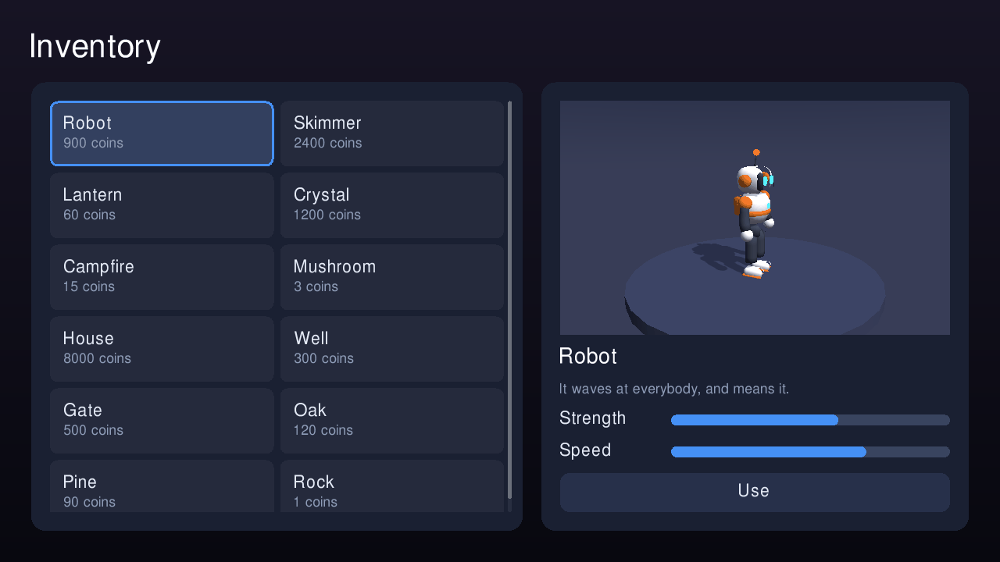
inventory/main.as 152 lines
// A grid to choose from, what was chosen turning in space, and numbers that follow. The view is a widget like any other.
class Item
{
string name, about, model;
int strength, speed, worth;
Item(const string &in n, const string &in m, int a, int b, int c, const string &in t)
{
name = n; model = m; strength = a; speed = b; worth = c; about = t;
}
}
class InventoryScreen : Screen
{
array<Item@> items = {
Item("Robot", "robot", 60, 70, 900, "It waves at everybody, and means it."),
Item("Skimmer", "skimmer", 45, 98, 2400, "Never touches the ground it crosses."),
Item("Lantern", "lantern", 10, 5, 60, "Lights itself when it gets dark."),
Item("Crystal", "crystal", 80, 20, 1200, "Hums very quietly. Nobody knows why."),
Item("Campfire", "campfire", 25, 0, 15, "Warm on one side."),
Item("Mushroom", "mushroom", 5, 0, 3, "Best left where it grows."),
Item("House", "house", 95, 0, 8000, "Someone is in. There is smoke."),
Item("Well", "well", 70, 0, 300, "Make a wish. It can't hurt."),
Item("Gate", "gate", 50, 0, 500, "Go through the middle."),
Item("Oak", "oak", 65, 0, 120, "A hundred years to make."),
Item("Pine", "pine", 55, 0, 90, "Green all winter."),
Item("Rock", "rock", 99, 0, 1, "It is a rock.")
};
array<Model@> models;
array<bool> worn;
Widget@ list;
Widget@ name;
Widget@ about;
array<Widget@> bars;
Widget@ wear;
Entity@ shown;
float turn = 0, swell = 0;
InventoryScreen()
{
for (uint i = 0; i < items.length(); i++)
{
models.insertLast(Assets::model("global:model/" + items[i].model + ".glb"));
worn.insertLast(false);
}
}
void onEnter()
{
Space::sky(Color(0.1f, 0.13f, 0.22f), Color(0.22f, 0.24f, 0.34f));
Space::ambient(Color(0.5f, 0.52f, 0.6f), Color(0.3f, 0.28f, 0.3f));
Space::sun(Vec3(0.5f, 0.8f, 0.6f), Color(0.8f, 0.76f, 0.7f));
Entity@ stand = Space::spawn(Vec3(0, -0.1f, 0));
stand.shape(SolidCylinder, Color(0.22f, 0.25f, 0.36f));
stand.size = Vec3(4.4f, 0.2f, 4.4f);
stand.shine = 0.7f;
@shown = Space::spawn(Vec3(0, 0, 0));
Space::shadows(0.6f, 8);
Widget@ page = Ui::root;
page.padding = 40;
page.gap = 16;
page.label("Inventory", "title");
Widget@ sides = page.row(24);
sides.grow = 1;
sides.align = PlaceStretch;
Widget@ left = sides.panel();
left.grow = 1.15f;
@list = left.list(items.length(), 84, WidgetRow(this.fill));
list.columns = 2;
list.onFocus(WidgetEvent(this.onLook));
list.onClick(WidgetEvent(this.onWear));
Widget@ right = sides.panel();
right.grow = 1;
right.custom(WidgetDraw(this.view)).grow = 1;
@name = right.label("", "heading");
@about = right.paragraph("", "small");
array<string> names = { "Strength", "Speed" };
for (uint i = 0; i < names.length(); i++)
{
Widget@ row = right.row();
Widget@ label = row.label(names[i]);
label.width = 130;
Widget@ bar = row.progress(0);
bar.grow = 1;
bars.insertLast(bar);
}
@wear = right.button("", WidgetEvent(this.onWear));
list.focus();
look();
}
void fill(Widget@ row, int i)
{
Item@ item = items[uint(i)];
Widget@ side = row.column(2);
side.grow = 1;
side.label(item.name);
side.label(formatInt(item.worth) + " coins", "small");
if (worn[uint(i)])
row.label("in use", "small");
}
void onLook(Widget@ w) { look(); }
void look()
{
uint i = uint(list.chosen);
name.text = items[i].name;
about.text = items[i].about;
bars[0].value = float(items[i].strength) / 100;
bars[1].value = float(items[i].speed) / 100;
wear.text = worn[i] ? "Put away" : "Use";
shown.model(models[i]);
swell = 0;
}
void onWear(Widget@ w)
{
uint i = uint(list.chosen);
worn[i] = !worn[i];
Ui::toast(items[i].name + (worn[i] ? " is in use" : " was put away"));
list.refresh();
look();
}
void view(Canvas@ c, Widget@ w)
{
Vec2 p = w.place, s = w.size;
Space::draw(c, p.x, p.y, s.x, s.y);
}
void update(float dt)
{
turn += dt * 40;
swell += (1 - swell) * clamp(dt * 9, 0, 1);
float high = models[uint(list.chosen)].radius;
float size = 1.5f / (high > 0.2f ? high : 1.0f) * swell;
shown.size = Vec3(size, size, size);
shown.angles = Vec3(0, turn, 0);
if (list.chosen == 0)
shown.animate("idle");
Space::camera(Vec3(0, 2.2f, 5.2f), Vec3(0, 1, 0), 42);
}
void draw(Canvas@ c)
{
c.designHeight(720);
c.gradient(0, 0, c.width, 720, Color(0.09f, 0.08f, 0.14f), Color(0.03f, 0.03f, 0.06f));
Ui::draw(c);
}
}
Input
Everything you press, live, on every device
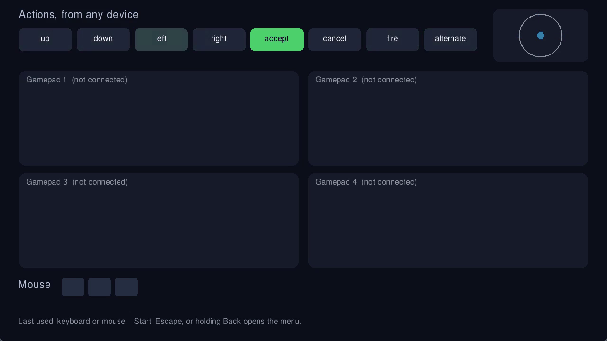
input/main.as 92 lines
// Everything that is pressed, on every device.
class InputScreen : Screen
{
Font@ font = Assets::font("global:freesans.sfn", 24);
Font@ small = Assets::font("global:freesans.sfn", 18);
array<string> actions = { "up", "down", "left", "right", "accept", "cancel", "fire", "alternate" };
array<string> buttons = { "Up", "Down", "Left", "Right", "Start", "Back", "LS", "RS", "A", "B", "X", "Y", "LB", "RB" };
array<float> glow(8);
array<Vec2> trail;
void update(float dt)
{
for (uint i = 0; i < actions.length(); i++)
{
glow[i] = clamp(glow[i] - dt * 2, 0, 1);
if (Input::pressed(actions[i]))
glow[i] = 1;
}
if (Input::hasMouse)
{
trail.insertLast(Input::mouse);
if (trail.length() > 24)
trail.removeAt(0);
}
}
void light(Canvas@ c, float x, float y, float w, const string &in label, bool on, float after)
{
Color off(0.13f, 0.15f, 0.22f);
Color color = on ? Green : Color(lerp(off.r, 0.3f, after), lerp(off.g, 0.5f, after), lerp(off.b, 0.4f, after));
c.roundRect(x, y, w, 48, 10, color);
c.text(small, label, x + w / 2, y + 13, on ? Black : White, AlignCenter);
}
void stick(Canvas@ c, float x, float y, const Vec2 &in at)
{
c.ring(x, y, 42, 3, Gray);
c.circle(x + at.x * 32, y - at.y * 32, 14, at.dot(at) > 0 ? Green : Color(0.3f, 0.34f, 0.44f));
}
void pad(Canvas@ c, uint index, float x, float y)
{
bool on = Input::padConnected(index);
c.roundRect(x, y, 590, 200, 14, Color(0.09f, 0.11f, 0.17f));
c.text(small, "Gamepad " + formatInt(index + 1) + (on ? "" : " (not connected)"), x + 16, y + 10, on ? White : Gray);
if (!on)
return;
stick(c, x + 66, y + 96, Input::padLeft(index));
stick(c, x + 176, y + 96, Input::padRight(index));
Vec2 triggers = Input::padTriggers(index);
c.rect(x + 30, y + 160, 180, 10, Color(0.15f, 0.18f, 0.26f));
c.rect(x + 30, y + 160, 180 * triggers.x, 10, Orange);
c.rect(x + 30, y + 178, 180, 10, Color(0.15f, 0.18f, 0.26f));
c.rect(x + 30, y + 178, 180 * triggers.y, 10, Orange);
for (uint b = 0; b < buttons.length(); b++)
{
bool down = Input::padButton(index, b);
float bx = x + 240 + float(b % 5) * 68;
float by = y + 44 + float(b / 5) * 50;
c.roundRect(bx, by, 62, 42, 8, down ? Green : Color(0.15f, 0.18f, 0.26f));
c.text(small, buttons[b], bx + 31, by + 10, down ? Black : White, AlignCenter);
}
}
void draw(Canvas@ c)
{
c.design(1280, 720);
c.rect(0, 0, 1280, 720, Color(0.05f, 0.06f, 0.1f));
c.text(font, "Actions, from any device", 40, 20, Color(0.7f, 0.76f, 0.86f));
for (uint i = 0; i < actions.length(); i++)
light(c, 40 + float(i) * 122, 60, 112, actions[i], Input::held(actions[i]), glow[i]);
c.roundRect(1040, 20, 200, 110, 12, Color(0.09f, 0.11f, 0.17f));
Vec2 move = Input::move;
c.ring(1140, 75, 46, 2, Gray);
c.line(1140, 75, 1140 + move.x * 44, 75 + move.y * 44, 4, Blue);
c.circle(1140 + move.x * 44, 75 + move.y * 44, 8, Blue);
pad(c, 0, 40, 150);
pad(c, 1, 650, 150);
pad(c, 2, 40, 366);
pad(c, 3, 650, 366);
c.text(font, "Mouse", 40, 590, Color(0.7f, 0.76f, 0.86f));
for (uint i = 0; i < 3; i++)
c.roundRect(130 + float(i) * 56, 586, 48, 40, 8, Input::mouseDown(i) ? Green : Color(0.15f, 0.18f, 0.26f));
for (uint i = 0; i < trail.length(); i++)
c.circle(trail[i].x, trail[i].y, 2 + float(i) * 0.4f, fade(Yellow, float(i) / 24));
c.text(small, "Last used: " + (Input::usingPad ? "gamepad" : "keyboard or mouse") + ". Start, Escape, or holding Back opens the menu.", 40, 670, Gray);
}
}
Settings
Volumes and controls, remembered next time
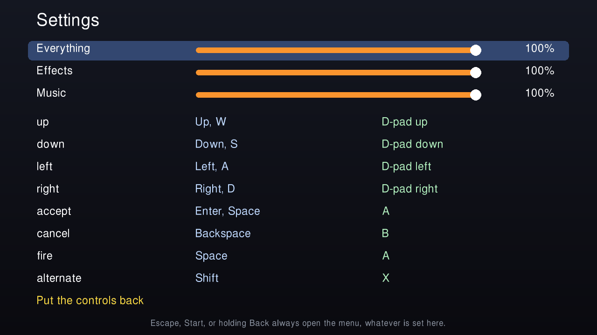
settings/main.as 97 lines
// Volumes and bindings. The engine keeps them between runs.
class SettingsScreen : Screen
{
Font@ font = Assets::font("global:freesans.sfn", 26);
Font@ small = Assets::font("global:freesans.sfn", 20);
Font@ big = Assets::font("global:freesans.sfn", 40);
Sound@ move = Assets::sound("global:sound/move.wav");
Sound@ accept = Assets::sound("global:sound/accept.wav");
array<string> actions = { "up", "down", "left", "right", "accept", "cancel", "fire", "alternate" };
array<string> volumes = { "Everything", "Effects", "Music" };
uint chosen = 0;
bool waiting = false;
uint rows() { return 3 + actions.length() + 1; }
float volume(uint i)
{
if (i == 0) return Audio::masterVolume;
return Audio::volume(i == 1 ? BusEffects : BusMusic);
}
void setVolume(uint i, float v)
{
v = clamp(v, 0, 1);
if (i == 0) Audio::masterVolume = v;
else Audio::setVolume(i == 1 ? BusEffects : BusMusic, v);
move.play(0.8f);
}
void update(float dt)
{
if (waiting)
{
if (!Input::listening)
{
waiting = false;
accept.play(0.7f);
}
return;
}
if (Input::repeated("up")) { chosen = chosen == 0 ? rows() - 1 : chosen - 1; move.play(0.5f); }
if (Input::repeated("down")) { chosen = (chosen + 1) % rows(); move.play(0.5f); }
if (chosen < 3)
{
if (Input::repeated("left")) setVolume(chosen, volume(chosen) - 0.05f);
if (Input::repeated("right")) setVolume(chosen, volume(chosen) + 0.05f);
}
else if (Input::pressed("accept"))
{
if (chosen == rows() - 1)
Input::resetBindings();
else
{
Input::listen(actions[chosen - 3]);
waiting = true;
}
accept.play(0.7f);
}
}
void draw(Canvas@ c)
{
c.design(1280, 720);
c.gradient(0, 0, 1280, 720, Color(0.08f, 0.09f, 0.13f), Color(0.04f, 0.04f, 0.06f));
c.text(big, "Settings", 80, 26);
for (uint i = 0; i < rows(); i++)
{
float y = 92 + float(i) * 48 + (i >= 3 ? 14.0f : 0.0f);
if (i == chosen) c.roundRect(60, y - 4, 1160, 42, 10, Color(0.2f, 0.28f, 0.44f));
if (i < 3)
{
c.text(font, volumes[i], 80, y);
c.roundRect(420, y + 10, 600, 12, 6, Color(0.17f, 0.19f, 0.27f));
float w = 600 * volume(i);
c.roundRect(420, y + 10, w < 12 ? 12 : w, 12, 6, Orange);
c.circle(420 + w, y + 16, 12, White);
c.text(font, formatInt(int(volume(i) * 100 + 0.5f)) + "%", 1190, y, White, AlignRight);
}
else if (i == rows() - 1)
c.text(font, "Put the controls back", 80, y, Yellow);
else
{
string action = actions[i - 3];
c.text(font, action, 80, y);
if (waiting && i == chosen)
c.text(font, "press a key or button...", 420, y, fade(Yellow, 0.6f + 0.4f * sin(App::time * 8)));
else
{
c.text(font, Input::keys(action), 420, y, Color(0.75f, 0.85f, 1));
c.text(font, Input::buttons(action), 820, y, Color(0.7f, 0.95f, 0.75f));
}
}
}
c.text(small, "Escape, Start, or holding Back always open the menu, whatever is set here.", 640, 686, Gray, AlignCenter);
}
}
Dashboard
A console menu made of 3D models

dashboard/main.as 334 lines
// A menu in three dimensions, from models made in Blender: a chamber, a machine in the middle of it and
// an arm for each choice. Everything is drawn by adding light.
class DashboardScreen : Screen
{
Font@ font = Assets::font("global:freesans.sfn", 26);
Font@ big = Assets::font("global:freesans.sfn", 40);
Sound@ move = Assets::sound("global:sound/move.wav");
Sound@ open = Assets::sound("global:sound/accept.wav");
Sound@ back = Assets::sound("global:sound/back.wav");
Sound@ sweep = Assets::sound("global:sound/whoosh.wav");
Texture@ wall = Assets::texture("asset:cellwall.png");
Texture@ disc = Assets::texture("asset:disc.png");
Model@ cellModel = Assets::model("asset:cell.glb");
Model@ coreModel = Assets::model("asset:core.glb");
Model@ pictureModel = Assets::model("asset:picture.glb");
Model@ ringModel = Assets::model("asset:ring.glb");
Model@ armModel = Assets::model("asset:arm.glb");
Model@ podModel = Assets::model("asset:pod.glb");
Model@ labelModel = Assets::model("asset:label.glb");
Model@ badgeModel = Assets::model("asset:badge.glb");
Model@ selectModel = Assets::model("asset:select.glb");
array<string> items = { "Memory", "Music", "Settings", "System" };
array<int> readings = { -1, -1, -1 }; // of the console: processor, board, fan
uint driveSize = 0, driveFree = 0;
float read = 0;
string degrees(int value) { return value < 0 ? "-" : formatInt(value) + " C"; }
void readConsole(float dt)
{
read -= dt;
if (read > 0 || !Xbox::available)
return;
read = 1;
readings = { Xbox::cpuTemperature, Xbox::boardTemperature, Xbox::fan };
driveSize = Xbox::driveSize("E");
driveFree = Xbox::driveFree("E");
}
array<float> hues = { 0.31f, 0.58f, 0.08f, 0.78f };
Entity@ cell;
Entity@ root;
Entity@ core;
Entity@ ring;
Entity@ picture;
array<Entity@> arms;
array<Entity@> pods;
array<Entity@> labels;
array<Entity@> others;
int chosen = 1;
float turn = 0;
float at = 1; // chosen, smoothly
float inside = 0; // 0 at the menu, 1 looking at what was opened
bool opened = false;
uint hue = 0;
float tint = 0.31f;
float arrive = 0; // 0 to 1 as it opens
float wide = 1280; // of the screen
float flash = 0;
array<Entity@> haze;
array<Vec3> hazeAt;
array<Entity@> dust;
array<Vec3> dustAt;
array<Entity@> sparks;
Entity@ heart;
Entity@ halo;
void onEnter()
{
Space::shadows(0);
// What is added to the picture fades into the dark with distance.
Space::fog(Black, 34, 112);
Space::farthest(150);
Space::sun(Vec3(-0.3f, 0.25f, 1), Color(0.85f, 0.85f, 0.85f));
Space::ambient(Color(0.2f, 0.2f, 0.2f), Color(0.1f, 0.1f, 0.1f));
@cell = part(cellModel, null, Vec3(0, 0, 0));
cell.skin(wall, true);
cell.glowing = 1;
@root = Space::spawn(Vec3(-10.3f, 3.85f, 0));
root.angles = Vec3(3.7f, -3.8f, 0);
@core = part(coreModel, root, Vec3(0, 0, 0));
@picture = part(pictureModel, root, Vec3(0, 0, 0));
picture.skin(disc);
picture.glowing = 1;
picture.blend = BlendNone;
@ring = part(ringModel, root, Vec3(0, 0, 0));
for (uint i = 0; i < items.length(); i++)
{
Entity@ arm = part(armModel, root, Vec3(0, 0, 0));
arms.insertLast(arm);
Entity@ pod = part(podModel, arm, Vec3(12.35f, 0.02f, 0.51f));
pods.insertLast(pod);
labels.insertLast(part(labelModel, pod, Vec3(0, 0, 0)));
Entity@ badge = part(badgeModel, pod, Vec3(0, 0, 0));
badge.skin(disc);
badge.glowing = 1;
badge.blend = BlendNone;
others.insertLast(arm);
others.insertLast(pod);
}
// Mist: large, faint and soft, drifting in front of the far wall.
for (int i = 0; i < 16; i++)
{
float a = float(i) * 2.4f;
hazeAt.insertLast(Vec3(sin(a) * (14 + float(i) * 1.6f), cos(a * 1.3f) * 13, -34 + float(i) * 2.2f));
haze.insertLast(light(22 + float(i % 4) * 7));
}
for (int i = 0; i < 44; i++)
{
dustAt.insertLast(Vec3(random(-30, 30), random(-18, 18), random(-22, 18)));
dust.insertLast(light(random(0.14f, 0.36f)));
}
for (int i = 0; i < 18; i++)
{
sparks.insertLast(light(1.6f - float(i % 6) * 0.22f));
sparks[i].attach(root);
}
@heart = light(26);
heart.attach(root);
@halo = light(7);
others.insertLast(part(selectModel, null, Vec3(0, 0, 0)));
others.insertLast(core);
others.insertLast(ring);
}
Entity@ light(float size)
{
Entity@ e = Space::spawn(Vec3(0, 0, 0));
e.glow(size, Black);
return e;
}
Entity@ part(Model@ model, Entity@ parent, const Vec3 &in place)
{
Entity@ e = Space::spawn(place);
e.model(model);
e.blend = BlendAdd;
e.twoSided = true;
e.shadow = false;
if (parent !is null)
e.attach(parent);
return e;
}
void update(float dt)
{
readConsole(dt);
int before = chosen;
if (!opened && Input::repeated("down") && chosen + 1 < int(items.length()))
chosen++;
if (!opened && Input::repeated("up") && chosen > 0)
chosen--;
if (chosen != before)
{
move.play(0.7f);
flash = 1;
}
arrive = clamp(arrive + dt * 0.45f, 0, 1);
flash = clamp(flash - dt * 2.2f, 0, 1);
if (!opened && Input::pressed("accept"))
{
flash = 1;
opened = true;
open.play(0.7f);
sweep.play(0.5f, 0, 0.8f);
}
else if (opened && Input::pressed("cancel"))
{
opened = false;
back.play(0.7f);
}
if (Input::pressed("alternate"))
{
hue = (hue + 1) % hues.length();
move.play(0.7f, 0, 1.3f);
}
tint += (hues[hue] - tint) * clamp(dt * 3, 0, 1);
at += (float(chosen) - at) * clamp(dt * 8, 0, 1);
inside = clamp(inside + (opened ? dt : -dt) * 1.6f, 0, 1);
turn += dt;
Color dim = hsv(tint, 1, 0.14f);
Color bright = hsv(tint, 0.85f, 0.5f);
float pulse = 0.75f + sin(turn * 4) * 0.25f;
cell.angles = Vec3(0, sin(turn * 0.022f * 6) * 45, 0);
cell.color = hsv(tint, 1, 0.5f + flash * 0.12f);
float come = smooth(arrive);
mist(dt, come, pulse);
core.angles = Vec3(0, 0, sin(turn * 0.4f) * 4);
ring.angles = Vec3(0, 0, at * 18 + (1 - come) * 200);
for (uint i = 0; i < others.length(); i++)
others[i].color = dim;
for (uint i = 0; i < arms.length(); i++)
{
// They fan out as it opens.
float angle = (at - float(i)) * 18 * come - (1 - come) * 70;
arms[i].angles = Vec3(0, 0, angle);
pods[i].angles = Vec3(0, 0, -angle);
bool here = int(i) == chosen;
labels[i].color = here ? lerp(hsv(tint, 0.8f, 0.85f + pulse * 0.1f), White, flash * 0.5f) : hsv(tint, 0.9f, 0.22f);
labels[i].glowing = here ? 0.7f : 0.2f;
labels[i].alpha = 1 - inside;
}
picture.color = Color(0.9f + pulse * 0.1f, 0.9f + pulse * 0.1f, 1);
// Inwards, towards what was chosen.
float t = smooth(inside);
// Farther back on a square screen, so that the labels fit.
float back = wide < 1240 ? 30 * 1280 / wide : 30.0f;
Vec3 from = lerp(Vec3(sin(turn * 0.3f) * 0.9f, sin(turn * 0.23f) * 0.6f, back + (1 - come) * (54 - back)), Vec3(6, 1.5f, 14), t);
Vec3 to = lerp(Vec3(0, 0, 0), Vec3(7, 1, 0), t);
Space::camera(from, to, 75);
}
void mist(float dt, float come, float pulse)
{
for (uint i = 0; i < haze.length(); i++)
{
float k = float(i);
haze[i].place = hazeAt[i] + Vec3(sin(turn * 0.11f + k) * 5, sin(turn * 0.09f + k * 1.7f) * 3, sin(turn * 0.07f + k * 2.3f) * 3);
haze[i].color = hsv(tint + sin(k) * 0.025f, 0.95f, (0.055f + 0.03f * sin(turn * 0.4f + k * 1.9f)) * come);
}
for (uint i = 0; i < dust.length(); i++)
{
Vec3 p = dustAt[i];
p.y += dt * (0.25f + float(i % 5) * 0.12f);
p.x += sin(turn * 0.5f + float(i)) * dt * 0.4f;
if (p.y > 18)
p.y = -18;
dustAt[i] = p;
dust[i].place = p;
float shine = 0.5f + 0.5f * sin(turn * (1 + float(i % 7) * 0.2f) + float(i) * 2);
dust[i].color = hsv(tint, 0.6f, 0.6f * shine * come);
}
// Energy, running round the ring in three trains.
for (uint i = 0; i < sparks.length(); i++)
{
float a = turn * (1.1f + float(i / 6) * 0.15f) + float(i / 6) * 2.094f - float(i % 6) * 0.07f;
sparks[i].place = Vec3(sin(a) * 12.9f, cos(a) * 12.9f, -0.9f);
sparks[i].color = hsv(tint, 0.55f, (0.75f - float(i % 6) * 0.11f) * come);
}
heart.place = Vec3(0, 0, -3);
heart.color = hsv(tint, 0.85f, (0.2f + pulse * 0.1f + flash * 0.25f) * come);
// Behind the orb that is chosen.
Vec3 wanted = pods[uint(chosen)].toSpace(Vec3(0.08f, -1.42f, 5.2f));
halo.place = lerp(halo.place, wanted, clamp(dt * 12, 0, 1));
float size = 6.5f + pulse * 1.2f + flash * 3;
halo.size = Vec3(size, size, size);
halo.color = hsv(tint, 0.5f, (0.5f + flash * 0.4f) * come * (1 - inside));
}
void draw(Canvas@ c)
{
c.designHeight(720);
wide = c.width;
Space::draw(c);
c.bloom(0.22f, 0.75f);
// Darker towards the edges.
for (int i = 0; i < 2; i++)
{
float y = i == 0 ? 0.0f : 560.0f;
c.gradient(0, y, wide, 160, i == 0 ? Color(0, 0, 0, 0.55f) : Color(0, 0, 0, 0), i == 0 ? Color(0, 0, 0, 0) : Color(0, 0, 0, 0.6f));
}
float menu = (1 - smooth(clamp(inside * 2, 0, 1))) * smooth(clamp(arrive * 3 - 2, 0, 1));
for (uint i = 0; i < pods.length(); i++)
{
// Along the panel that each arm holds out, in the middle of it and at its angle.
Vec2 a, b;
if (menu > 0 && Space::toScreen(pods[i].toSpace(Vec3(4.1f, -2.48f, 7.3f)), a) && Space::toScreen(pods[i].toSpace(Vec3(16, -2.48f, 7.3f)), b))
{
c.push();
c.translate(a.x, a.y);
c.rotate(atan2(b.y - a.y, b.x - a.x) * 57.2958f);
c.text(font, items[i], 0, -font.measure(items[i]).y * 0.5f, fade(int(i) == chosen ? Color(0.02f, 0.06f, 0.02f) : White, menu));
c.pop();
}
}
c.alpha = menu;
c.text(font, "Up, down: choose Accept: open Alternate: colour", wide * 0.5f, 672, hsv(tint, 0.3f, 0.7f), AlignCenter);
float page = smooth(clamp(inside * 2 - 1, 0, 1));
if (page > 0)
{
c.alpha = page;
float x = wide - 860 + (1 - page) * 120;
c.roundRect(x, 130, 760, 440, 26, Color(0, 0, 0, 0.86f));
Color edge = hsv(tint, 0.8f, 0.8f);
c.rect(x + 36, 206, 688, 3, edge);
c.text(big, items[chosen], x + 36, 148, hsv(tint, 0.25f, 1));
array<string> names;
array<string> values;
float bar = -1;
if (chosen == 0)
{
names = { "Used by the engine", "Used by scripts", "Left on this machine" };
values = { formatInt(int(App::memoryKilobytes)) + " KB", formatInt(int(App::scriptKilobytes)) + " KB", formatInt(int(App::freeKilobytes / 1024)) + " MB" };
}
else if (chosen == 1)
{
names = { "Now playing", "Voices" };
values = { "Nothing: it is quiet here", "32 at once" };
bar = 0;
}
else if (chosen == 2)
{
names = { "Colour", "Screen", "Controls" };
values = { formatInt(int(hue + 1)) + " of 4", formatInt(int(c.width)) + " x " + formatInt(int(c.height)), Input::usingPad ? "Gamepad" : "Keyboard" };
}
else
{
// An original Xbox can say more about itself than the rest.
names = { "Platform", "Graphics", "Speed", "Triangles", "Network" };
values = { App::platform, App::gpu, formatInt(int(App::fps + 0.5f)) + " frames a second", formatInt(int(Space::triangles)), Net::address == "" ? "Not connected" : Net::address };
if (Xbox::available)
{
names = { "Kernel", "Processor", "Board", "Fan", "Drive E", "Network" };
values = { Xbox::text(XboxKernel) + ", " + Xbox::text(XboxHardware), degrees(readings[0]), degrees(readings[1]), readings[2] < 0 ? "-" : formatInt(readings[2]) + "%",
formatInt(int(driveFree)) + " of " + formatInt(int(driveSize)) + " MB free", Net::address == "" ? "Not connected" : Net::address };
}
}
for (uint i = 0; i < names.length(); i++)
{
c.text(font, names[i], x + 40, 240 + float(i) * 56, Color(0.7f, 0.75f, 0.72f));
c.text(font, values[i], x + 720, 240 + float(i) * 56, White, AlignRight);
}
if (bar >= 0)
for (int i = 0; i < 24; i++)
c.roundRect(x + 40 + float(i) * 28.5f, 520 - 14, 18, 14 + 50 * (0.5f + 0.5f * sin(turn * 3 + float(i) * 0.7f) * sin(turn * 1.7f + float(i))), 4, fade(edge, 0.8f));
c.text(font, "Cancel: back", x + 380, 586, hsv(tint, 0.3f, 0.7f), AlignCenter);
}
c.alpha = 1;
}
}
Blades
A console menu of curved blades
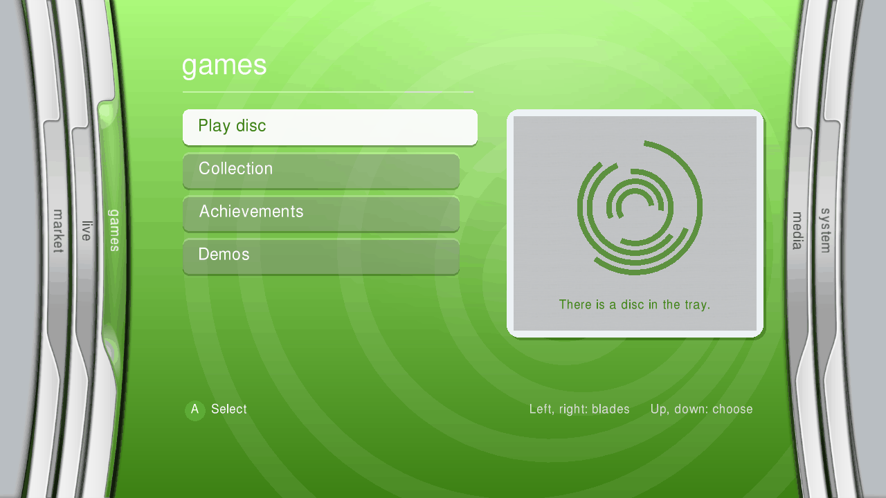
blades/main.as 213 lines
// Curved blades, from images. One that crosses the screen is drawn in strips, so that it bends straight
// and then the other way.
class Page
{
string title;
Color light, deep;
array<string> rows;
array<string> about;
int chosen = 0;
Page(const string &in title_, float hue, float strong, const array<string> &in rows_, const array<string> &in about_)
{
title = title_;
light = hsv(hue, strong * 0.6f, 0.98f);
deep = hsv(hue, strong, 0.5f);
rows = rows_;
about = about_;
}
}
const float Wide = 90; // of a blade, on the screen
const float Step = 41; // from one to the next
const float Bend = 26; // of its middle, sideways
class BladesScreen : Screen
{
Font@ font = Assets::font("global:freesans.sfn", 26);
Font@ small = Assets::font("global:freesans.sfn", 20);
Font@ tab = Assets::font("global:freesans.sfn", 22);
Font@ big = Assets::font("global:freesans.sfn", 44);
Sound@ slide = Assets::sound("global:sound/whoosh.wav");
Sound@ move = Assets::sound("global:sound/move.wav");
Texture@ metal = Assets::texture("asset:metal.png");
Texture@ runnerLeft = Assets::texture("asset:runner-left.png");
Texture@ runnerRight = Assets::texture("asset:runner-right.png");
Texture@ header = Assets::texture("asset:header.png");
array<Texture@> lefts = { Assets::texture("asset:left1.png"), Assets::texture("asset:left2.png"), Assets::texture("asset:left3.png") };
array<Texture@> rights = { Assets::texture("asset:right1.png"), Assets::texture("asset:right2.png"), Assets::texture("asset:right3.png") };
array<Page@> pages = {
Page("market", 0.09f, 0.85f, { "Game store", "New arrivals", "Themes", "Memberships" }, { "Everything there is to play.", "What came in this week.", "Change how all this looks.", "Yours lasts until spring." }),
Page("live", 0.07f, 0.9f, { "Sign in", "Friends", "Messages", "Players met" }, { "Nobody is signed in.", "Three of them are playing.", "One is unread.", "The last fifty." }),
Page("games", 0.27f, 0.85f, { "Play disc", "Collection", "Achievements", "Demos" }, { "There is a disc in the tray.", "Fifty-two scenes.", "Twelve of thirty.", "Try them for nothing." }),
Page("media", 0.56f, 0.8f, { "Music", "Pictures", "Videos", "Tray" }, { "From this console, or another.", "Six folders.", "None yet.", "Open it." }),
Page("system", 0.62f, 0.35f, { "Console", "Family", "Memory", "Network", "Startup" }, { "Screen, sound and language.", "Who may play what.", "", "Not connected.", "Where it begins." })
};
int chosen = 2;
float at = 2;
float time = 0;
float rowAt = 0;
void update(float dt)
{
time += dt;
pages[4].about[3] = Net::address == "" ? "Not connected." : "Connected.";
int before = chosen;
if (Input::repeated("right") && chosen + 1 < int(pages.length()))
chosen++;
if (Input::repeated("left") && chosen > 0)
chosen--;
if (chosen != before)
{
slide.play(0.5f, 0, 1.3f);
rowAt = float(pages[uint(chosen)].chosen);
}
Page@ page = pages[uint(chosen)];
int row = page.chosen;
if (Input::repeated("down") && row + 1 < int(page.rows.length()))
page.chosen++;
if (Input::repeated("up") && row > 0)
page.chosen--;
if (page.chosen != row)
move.play(0.5f);
rowAt += (float(page.chosen) - rowAt) * clamp(dt * 14, 0, 1);
at += (float(chosen) - at) * clamp(dt * 8, 0, 1);
if (abs(at - float(chosen)) < 0.003f)
at = float(chosen);
}
float leftOf(float index) { return 26 + index * Step; }
float rightOf(float index, float width) { return width - 26 - Wide - (float(pages.length()) - 1 - index) * Step; }
// How far out the middle of a blade is, at some height.
float bulge(float y) { return (1 - (y * 2 - 1) * (y * 2 - 1)) * Bend; }
// Crossed: 0 on the left, 1 on the right.
void blade(Canvas@ c, int index, float crossed, float x)
{
Page@ p = pages[uint(index)];
bool mirrored = crossed > 0.5f;
bool first = !mirrored && abs(float(index) - at) < 0.5f;
int size = int(abs(float(index) - at) + 0.5f) - 1;
size = size < 0 ? 0 : size > 2 ? 2 : size;
Texture@ image = first ? header : mirrored ? rights[uint(size)] : lefts[uint(size)];
if (!image.ready)
return;
if (crossed <= 0.002f || crossed >= 0.998f)
c.image(image, x, 0, Wide, 720);
else
{
const int Strips = 36;
float bent = mirrored ? 1 - crossed : crossed; // how much of its bend it has lost, up to a half
float way = mirrored ? 1.0f : -1.0f;
float high = image.height / float(Strips);
for (int i = 0; i < Strips; i++)
{
float y = (float(i) + 0.5f) / float(Strips);
c.imagePart(image, x + bulge(y) * bent * 2 * way - Bend * bent * way, float(i) * 720 / float(Strips), Wide, 720 / float(Strips) + 0.6f, 0, float(i) * high, image.width, high);
}
}
c.push();
c.translate(x + (mirrored ? 27 : 56), 335);
c.rotate(90);
c.text(tab, p.title, 0, -tab.measure(p.title).y * 0.5f, first ? White : Color(0.28f, 0.3f, 0.32f), AlignCenter);
c.pop();
}
void draw(Canvas@ c)
{
c.designHeight(720);
float width = c.width;
float count = float(pages.length());
// Behind everything, the page's own colour.
int a = int(floor(at)), b = a + 1 < int(pages.length()) ? a + 1 : a;
float part = at - float(a);
Color light = lerp(pages[uint(a)].light, pages[uint(b)].light, part), deep = lerp(pages[uint(a)].deep, pages[uint(b)].deep, part);
c.gradient(0, 0, width, 720, light, deep);
for (int i = 0; i < 5; i++)
c.ring(width * 0.62f + sin(time * 0.17f + float(i) * 1.3f) * 50, 380 + cos(time * 0.13f + float(i)) * 30, 120 + float(i) * 95, 34, Color(1, 1, 1, 0.07f));
c.glow(width * 0.6f, 120, 420, Color(1, 1, 1, 0.22f));
// What is on it, sliding with its blade.
for (int i = a; i <= b; i++)
{
float off = float(i) - at;
float shown = clamp(1 - abs(off) * 1.7f, 0, 1);
if (shown > 0)
content(c, i, leftOf(float(i)) + Wide + 44 + off * 520, shown);
}
if (runnerLeft.ready && runnerRight.ready)
{
c.image(runnerRight, width - 80, 0, 180, 720);
c.image(runnerLeft, -100, 0, 180, 720);
}
// Those still to come, from the outside in; then those that have been passed.
for (int i = int(pages.length()) - 1; i >= 0; i--)
{
float off = clamp(float(i) - at, 0, 1);
if (off > 0.5f)
blade(c, i, smooth(off), lerp(leftOf(float(i)), rightOf(float(i), width), smooth(off)));
}
for (int i = 0; i < int(pages.length()); i++)
{
float off = clamp(float(i) - at, 0, 1);
if (off <= 0.5f)
blade(c, i, smooth(off), lerp(leftOf(float(i)), rightOf(float(i), width), smooth(off)));
}
}
void content(Canvas@ c, int index, float x, float shown)
{
Page@ p = pages[uint(index)];
float right = rightOf(float(index) + 1, c.width) - 10;
c.alpha = shown;
c.text(big, p.title, x + 22, 74, White);
c.rect(x + 22, 132, 420, 2, Color(1, 1, 1, 0.5f));
float mine = index == chosen ? rowAt : float(p.chosen);
for (uint i = 0; i < p.rows.length(); i++)
{
float near = clamp(1 - abs(float(i) - mine), 0, 1);
float y = 158 + float(i) * 62, w = 400 + near * 26;
c.roundRect(x + 22, y + 3, w, 52, 10, Color(0, 0, 0, 0.25f));
c.roundRect(x + 22, y, w, 52, 10, lerp(Color(1, 1, 1, 0.22f), Color(1, 1, 1, 0.95f), near));
c.text(font, p.rows[i], x + 46, y + 26 - font.measure(p.rows[i]).y * 0.5f, lerp(White, p.deep, near));
}
// A panel of brushed metal, with something moving on it.
float px = x + 490, pw = right - px - 10;
if (pw > 120)
{
c.roundRect(px + 4, 162, pw, 330, 18, Color(0, 0, 0, 0.3f));
c.roundRect(px, 158, pw, 330, 18, Color(0.93f, 0.95f, 0.96f));
if (metal.ready)
c.tile(metal, px + 10, 168, pw - 20, 310, 256, 256, 0, 0, Color(1, 1, 1, 0.55f));
float mx = px + pw * 0.5f, my = 300;
for (int i = 0; i < 6; i++)
{
float turn = time * 0.9f + float(i) * 1.047f;
Color tone = fade(p.deep, 0.75f);
if (index == 0)
c.roundRect(mx - 96 + float(i % 3) * 68, my - 70 + float(i / 3) * 70 + sin(turn) * 5, 56, 56, 8, tone);
else if (index == 1)
c.circle(mx + sin(turn) * 70, my + cos(turn) * 70, 18 + sin(turn * 2) * 4, tone);
else if (index == 2)
c.arc(mx, my, 28 + float(i) * 14, 8, turn * 57 * (i % 2 == 0 ? 1.0f : -1.0f), turn * 57 * (i % 2 == 0 ? 1.0f : -1.0f) + 210, tone);
else if (index == 3)
c.roundRect(mx - 102 + float(i) * 36, my + 80 - 40 - (0.5f + 0.5f * sin(turn * 2.3f)) * 110, 26, 40 + (0.5f + 0.5f * sin(turn * 2.3f)) * 110, 6, tone);
else
c.ring(mx, my, 90 - float(i) * 14, 5 + sin(turn * 2) * 3, tone);
}
string about = p.about[uint(p.chosen)];
if (about == "")
about = formatInt(int(App::freeKilobytes / 1024)) + " MB free.";
c.text(small, about, mx, 432, p.deep, AlignCenter);
}
c.circle(x + 40, 594, 15, Color(0.25f, 0.7f, 0.2f));
c.text(small, "A", x + 40, 594 - small.measure("A").y * 0.5f, White, AlignCenter);
c.text(small, "Select", x + 64, 594 - small.measure("A").y * 0.5f, White);
c.text(small, "Left, right: blades Up, down: choose", right - 24, 594 - small.measure("A").y * 0.5f, Color(1, 1, 1, 0.8f), AlignRight);
c.alpha = 1;
}
}
Cover flow
Cases in space, with covers that stream in as you go

cases/main.as 270 lines
// Records to flip through. Covers are asked for as they come near and let go of as they leave; each case
// is on a spring, and opens to show what is in it. Alternate gets the covers from the web instead.
class Case
{
Entity@ root; // turns
Entity@ lid; // opens
Entity@ cover;
Entity@ disc;
Entity@ inside; // the back of the booklet
Entity@ shade; // the reflection
Texture@ art;
string title, who;
Vec3 at;
float angle = 0, spin = 0; // of the spring
float wobble = 0, wobbling = 0;
float shown = 0; // as the cover arrives
}
class CasesScreen : Screen
{
Font@ big = Assets::font("global:freesans.sfn", 44);
Font@ font = Assets::font("global:freesans.sfn", 24);
Sound@ flick = Assets::sound("global:sound/case.wav");
Sound@ open = Assets::sound("global:sound/whoosh.wav");
array<Case@> cases;
Mesh@ face = Mesh();
Mesh@ label = Mesh();
Mesh@ below = Mesh();
int chosen = 4;
float at = 4;
float lid = 0;
bool opened = false;
bool web = false;
float time = 0;
Vec2 mouseWas;
array<string> titles = { "Slow Comet", "Paper Moons", "Glass Garden", "Night Ferry", "Copper Sky", "Small Hours", "Tidal", "Signal Fires", "Static Bloom", "Long Division", "Kite Weather", "Saltwater",
"Half Light", "Mainframe", "Red Shift", "Soft Machines", "Northern Line", "Echo Park", "Feather", "Ironwood", "Lantern", "Overcast", "Prism", "Home Again" };
array<string> makers = { "The Orbits", "Ada Verne", "Field Echo", "Harbour Light", "The Wiremen", "Nine to Noon", "Low Country", "Beacon Hill", "Violet Hum", "Primes", "Open Field", "Pier Nine",
"Dusk Radio", "Punch Card", "Far Arms", "Clockwork Sea", "Last Stop", "The Returns", "Weightless", "Forest Press", "Moth Club", "Grey Area", "Split Beam", "The Orbits" };
void onEnter()
{
// A square with a picture on it, and a disc.
face.vertex(Vec3(-0.5f, -0.5f, 0), Vec3(0, 0, 1), White, 0, 1);
face.vertex(Vec3(0.5f, -0.5f, 0), Vec3(0, 0, 1), White, 1, 1);
face.vertex(Vec3(0.5f, 0.5f, 0), Vec3(0, 0, 1), White, 1, 0);
face.vertex(Vec3(-0.5f, 0.5f, 0), Vec3(0, 0, 1), White, 0, 0);
face.triangle(0, 1, 2);
face.triangle(0, 2, 3);
// Upside down, and fading as it goes.
Color gone(1, 1, 1, 0), there(1, 1, 1, 0.34f);
below.vertex(Vec3(-0.5f, -0.5f, 0), Vec3(0, 0, 1), gone, 0, 0.35f);
below.vertex(Vec3(0.5f, -0.5f, 0), Vec3(0, 0, 1), gone, 1, 0.35f);
below.vertex(Vec3(0.5f, 0.5f, 0), Vec3(0, 0, 1), there, 1, 1);
below.vertex(Vec3(-0.5f, 0.5f, 0), Vec3(0, 0, 1), there, 0, 1);
below.triangle(0, 1, 2);
below.triangle(0, 2, 3);
// The disc: a bright hub, the print, and the rim.
array<float> rings = { 0.07f, 0.15f, 0.16f, 0.455f, 0.46f, 0.48f };
for (int k = 0; k < 3; k++)
for (int i = 0; i <= 40; i++)
{
float a = float(i) / 40 * 6.28319f;
Color tint = k == 1 ? White : hsv(abs(float(i % 20) / 20.0f - 0.5f) + 0.45f, 0.3f, 0.75f);
for (int e = 0; e < 2; e++)
{
float r = rings[uint(k * 2 + e)];
float u = cos(a) * r, v = sin(a) * r;
label.vertex(Vec3(u, v, 0), Vec3(0, 0, 1), tint, k == 1 ? 0.5f + u : 0.02f, k == 1 ? 0.5f - v : 0.98f);
}
if (i > 0)
{
uint n = uint(k * 82 + i * 2);
label.triangle(n - 2, n - 1, n + 1);
label.triangle(n - 2, n + 1, n);
}
}
for (uint i = 0; i < titles.length(); i++)
{
Case@ c = Case();
c.title = titles[i];
c.who = makers[i];
@c.root = Space::spawn(Vec3(float(i) * 2, 0, -2));
c.at = c.root.place;
Entity@ back = Space::spawn(Vec3(0, 0, -0.03f));
back.attach(c.root);
back.shape(SolidBox, Color(0.13f, 0.13f, 0.15f));
back.size = Vec3(1.42f, 1.25f, 0.05f);
back.shine = 0.7f;
@c.disc = Space::spawn(Vec3(0.06f, 0, 0.005f));
c.disc.attach(c.root);
c.disc.mesh(label);
c.disc.twoSided = true;
c.disc.shine = 0.3f;
c.disc.size = Vec3(1.2f, 1.2f, 1.2f);
// The lid turns about its left edge.
@c.lid = Space::spawn(Vec3(-0.71f, 0, 0.02f));
c.lid.attach(c.root);
Entity@ front = Space::spawn(Vec3(0.71f, 0, 0.012f));
front.attach(c.lid);
front.shape(SolidBox, Color(0.2f, 0.2f, 0.22f));
front.size = Vec3(1.42f, 1.25f, 0.025f);
front.shine = 0.9f;
@c.cover = Space::spawn(Vec3(0.79f, 0, 0.028f));
c.cover.attach(c.lid);
c.cover.mesh(face, Color(0.16f, 0.16f, 0.19f));
c.cover.size = Vec3(1.22f, 1.22f, 1);
c.cover.shine = 0.8f;
@c.inside = Space::spawn(Vec3(0.79f, 0, -0.003f));
c.inside.attach(c.lid);
c.inside.mesh(face, Color(0.3f, 0.3f, 0.33f));
c.inside.angles = Vec3(0, 180, 0);
c.inside.size = Vec3(1.2f, 1.2f, 1);
Entity@ spine = Space::spawn(Vec3(0.085f, 0, 0.026f));
spine.attach(c.lid);
spine.shape(SolidBox, Color(0.07f, 0.07f, 0.08f));
spine.size = Vec3(0.15f, 1.24f, 0.012f);
// The shiny floor has it too.
@c.shade = Space::spawn(c.at);
c.shade.mesh(below, Color(0.1f, 0.1f, 0.12f));
c.shade.size = Vec3(1.22f, 0.8f, 1);
c.shade.blend = BlendAlpha;
c.shade.shadow = false;
c.shade.twoSided = true;
cases.insertLast(c);
}
Space::sky(Color(0.03f, 0.03f, 0.05f), Color(0.1f, 0.1f, 0.14f));
Space::fog(Color(0.06f, 0.06f, 0.09f), 7, 15);
Space::sun(Vec3(0.2f, 0.6f, 1), Color(0.75f, 0.75f, 0.8f));
Space::ambient(Color(0.72f, 0.72f, 0.78f), Color(0.6f, 0.6f, 0.62f));
Space::shadows(0);
Entity@ lamp = Space::spawn(Vec3(0, 2.4f, 2));
lamp.light(Color(0.8f, 0.75f, 0.7f), 7);
}
string cover(int i)
{
string name = "cover" + (i < 10 ? "0" : "") + formatInt(i) + ".jpg";
return web ? "https://raw.githubusercontent.com/Team-Resurgent/NexgenRedux-Media/main/media/showcase/cases/asset/" + name : "asset:" + name;
}
void update(float dt)
{
time += dt;
int before = chosen;
if (Input::repeated("right") && chosen + 1 < int(cases.length())) chosen++;
if (Input::repeated("left") && chosen > 0) chosen--;
Vec2 mouse = Input::mouse;
if (Input::hasMouse && Input::mouseDown(0) && mouse.x != mouseWas.x)
at = clamp(at - (mouse.x - mouseWas.x) * 0.006f, 0, float(cases.length() - 1));
if (Input::hasMouse && Input::mouseDown(0))
chosen = int(at + 0.5f);
mouseWas = mouse;
if (chosen != before)
{
opened = false;
flick.play(0.4f, 0, random(0.92f, 1.08f));
// The one that lands wobbles, and those beside it are brushed.
for (int i = -2; i <= 2; i++)
if (chosen + i >= 0 && chosen + i < int(cases.length()))
cases[uint(chosen + i)].wobbling += (chosen > before ? 260 : -260) / (1 + abs(float(i)) * 1.6f);
}
if (Input::pressed("accept"))
{
opened = !opened;
open.play(0.4f, 0, opened ? 1.3f : 1.0f);
cases[uint(chosen)].wobbling += 140;
}
if (Input::pressed("alternate"))
{
web = !web;
for (uint i = 0; i < cases.length(); i++)
letGo(cases[i]);
}
at += (float(chosen) - at) * clamp(dt * 7, 0, 1);
lid += ((opened ? 1.0f : 0.0f) - lid) * clamp(dt * 5, 0, 1);
for (uint i = 0; i < cases.length(); i++)
move(cases[i], int(i), dt);
Space::camera(Vec3(sin(time * 0.25f) * 0.25f, 0.5f, 4.4f + lid * 1.1f), Vec3(0, -0.3f + lid * 0.05f, 0), 48);
}
void letGo(Case@ c)
{
@c.art = null;
c.shown = 0;
c.cover.skin(null);
c.shade.skin(null);
c.inside.skin(null);
c.disc.skin(null);
}
void move(Case@ c, int index, float dt)
{
float off = float(index) - at;
float near = clamp(1 - abs(off), 0, 1);
bool here = abs(off) < 8;
c.root.visible = here;
c.shade.visible = here;
// Asked for within six, and kept to nine, so that it isn't let go of and wanted again at once.
if (abs(off) < 6 && c.art is null)
@c.art = Assets::texture(cover(index));
else if (abs(off) > 9 && c.art !is null)
letGo(c);
if (c.art !is null && c.art.ready && !c.art.failed)
{
if (c.shown == 0)
{
c.cover.skin(c.art);
c.shade.skin(c.art);
c.inside.skin(c.art);
c.disc.skin(c.art);
}
c.shown = clamp(c.shown + dt * 2.5f, 0.01f, 1);
}
if (!here)
return;
float side = off < 0 ? -1.0f : 1.0f;
float apart = clamp(abs(off), 0, 1);
Vec3 wanted(side * (apart * 1.35f + clamp(abs(off) - 1, 0, 9) * 0.52f), near * 0.06f, near * 1.25f - abs(off) * 0.16f);
c.at = lerp(c.at, wanted, clamp(dt * 14, 0, 1));
// Springs: one for the way it faces, and one that wobbles.
c.spin += ((-side * apart * 66) - c.angle) * 90 * dt;
c.spin *= clamp(1 - dt * 11, 0, 1);
c.angle += c.spin * dt;
c.wobbling += (0 - c.wobble) * 170 * dt;
c.wobbling *= clamp(1 - dt * 4.2f, 0, 1);
c.wobble += c.wobbling * dt;
float breathe = near * sin(time * 1.3f) * 2.5f;
float turned = c.angle + c.wobble + breathe - near * lid * 14;
c.root.place = c.at + Vec3(near * lid * 0.2f, near * (0.03f + sin(time * 1.6f) * 0.02f), near * lid * 0.5f);
c.root.angles = Vec3(c.wobble * 0.25f, turned, c.wobble * 0.12f);
c.lid.angles = Vec3(0, -near * lid * 132, 0);
c.disc.place = Vec3(0.06f + near * lid * 0.42f, 0, 0.005f + near * lid * 0.2f);
c.disc.angles = Vec3(0, 0, -time * 160 * near * lid);
float bright = 0.68f + near * 0.32f;
float lit = c.shown * bright + (1 - c.shown) * 0.14f;
c.cover.color = Color(lit, lit, lit);
c.inside.color = Color(lit * 0.5f, lit * 0.5f, lit * 0.5f);
c.disc.color = Color(0.75f, 0.75f, 0.75f);
c.disc.visible = near * lid > 0.02f;
c.shade.place = Vec3(c.root.place.x + 0.06f, -1.06f - c.root.place.y, c.root.place.z);
c.shade.angles = Vec3(0, turned, 0);
float dim = lit * (1 - near * lid);
c.shade.color = Color(dim, dim, dim);
}
void draw(Canvas@ c)
{
c.designHeight(720);
Space::draw(c);
c.bloom(0.45f, 0.8f);
// The floor fades into the dark.
c.gradient(0, 520, c.width, 200, Color(0.03f, 0.03f, 0.05f, 0), Color(0.03f, 0.03f, 0.05f, 0.9f));
Case@ now = cases[uint(chosen)];
c.text(big, now.title, c.width * 0.5f, 548, White, AlignCenter);
c.text(font, now.who, c.width * 0.5f, 604, Color(0.65f, 0.7f, 0.8f), AlignCenter);
int held = 0, waiting = 0;
for (uint i = 0; i < cases.length(); i++)
{
held += cases[i].art !is null ? 1 : 0;
waiting += cases[i].art !is null && !cases[i].art.ready ? 1 : 0;
}
c.text(font, formatInt(held) + " covers held" + (waiting > 0 ? ", " + formatInt(waiting) + " on their way" : "") + (web ? ", from the web" : ""), 40, 28, Color(0.6f, 0.65f, 0.75f));
float w = c.width * 0.4f, x = c.width * 0.3f;
c.roundRect(x, 648, w, 6, 3, Color(1, 1, 1, 0.14f));
c.roundRect(x + at / float(cases.length() - 1) * (w - 40), 646, 40, 10, 5, Color(1, 1, 1, 0.7f));
c.text(font, "Left, right: flip Accept: open Alternate: " + (web ? "from the disc" : "from the web"), c.width * 0.5f, 672, Color(0.6f, 0.65f, 0.75f), AlignCenter);
}
}
Engine
Asset cache
What is loaded, kept warm and reused
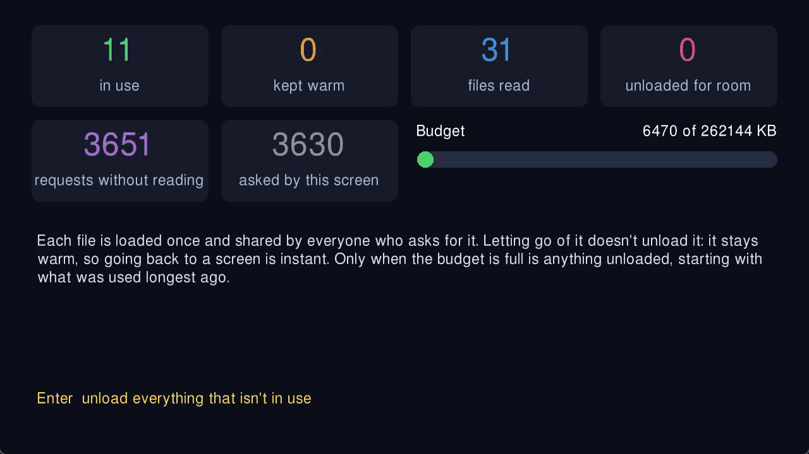
cache/main.as 55 lines
// What the asset cache is doing. Open other screens first and come back.
class CacheScreen : Screen
{
Font@ font = Assets::font("global:freesans.sfn", 26);
Font@ big = Assets::font("global:freesans.sfn", 54);
Texture@ held;
uint asked = 0;
float t = 0;
void update(float dt)
{
t += dt;
// Asking again is free: the same image comes back without reading a file.
for (int i = 0; i < 10; i++)
{
Font@ again = Assets::font("global:freesans.sfn", 26);
asked++;
}
if (Input::pressed("accept"))
Assets::trim();
}
void number(Canvas@ c, float x, float y, uint value, const string &in label, const Color &in color)
{
c.roundRect(x, y, 280, 130, 14, Color(0.09f, 0.11f, 0.17f));
c.text(big, formatInt(value), x + 140, y + 16, color, AlignCenter);
c.text(font, label, x + 140, y + 84, Color(0.65f, 0.72f, 0.82f), AlignCenter);
}
void draw(Canvas@ c)
{
c.design(1280, 720);
c.rect(0, 0, 1280, 720, Color(0.05f, 0.06f, 0.1f));
number(c, 50, 40, Assets::inUse, "in use", Green);
number(c, 350, 40, Assets::warm, "kept warm", Orange);
number(c, 650, 40, Assets::loads, "files read", Blue);
number(c, 950, 40, Assets::evictions, "unloaded for room", Red);
number(c, 50, 190, Assets::hits, "requests without reading", Purple);
number(c, 350, 190, asked, "asked by this screen", Gray);
float used = float(Assets::textureKilobytes);
float budget = float(Assets::budgetKilobytes);
c.text(font, "Budget", 660, 196, White);
c.text(font, formatInt(int(used)) + " of " + formatInt(int(budget)) + " KB", 1230, 196, White, AlignRight);
c.roundRect(660, 240, 570, 26, 13, Color(0.15f, 0.18f, 0.26f));
float w = 570 * clamp(used / budget, 0, 1);
c.roundRect(660, 240, w < 26 ? 26 : w, 26, 13, Green);
c.paragraph(font, "Each file is loaded once and shared by everyone who asks for it. Letting go of it doesn't unload it: it stays warm, "
"so going back to a screen is instant. Only when the budget is full is anything unloaded, starting with what was used longest ago.",
60, 370, 1160, Color(0.85f, 0.88f, 0.95f));
c.text(font, Input::usingPad ? "A unload everything that isn't in use" : "Enter unload everything that isn't in use", 60, 620, Yellow);
}
}
Loading
Twelve pictures arrive without a dropped frame
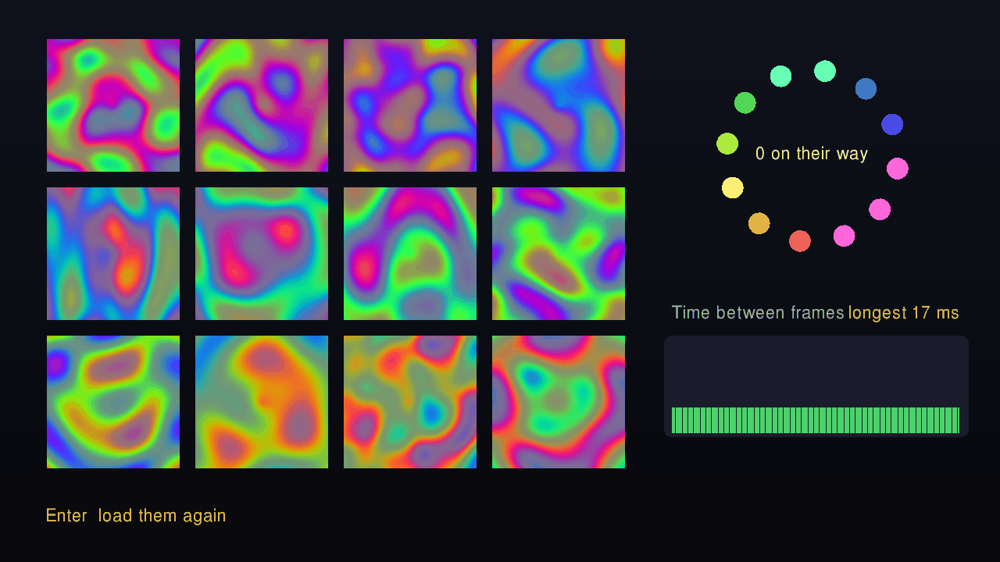
loading/main.as 85 lines
// Asked for now, here in a moment: files are read and decoded on another thread.
class LoadingScreen : Screen
{
Font@ font = Assets::font("global:freesans.sfn", 24);
Sound@ pop = Assets::sound("global:sound/pop.wav");
array<Texture@> pictures(12);
array<Tween> shown(12);
array<bool> seen(12);
array<float> frames(160);
uint at = 0;
float lastDraw = 0;
float worst = 0;
void onEnter() { start(Coroutine(this.fetch)); }
void fetch()
{
for (uint i = 0; i < 12; i++)
{
@pictures[i] = null;
shown[i] = Tween(0);
seen[i] = false;
}
wait(0.2f);
// Nothing holds them now, so this really does read them again.
Assets::trim();
worst = 0;
for (uint i = 0; i < 12; i++)
@pictures[i] = Assets::texture("asset:picture" + formatInt(i) + ".jpg");
}
void update(float dt)
{
if (Input::pressed("accept")) start(Coroutine(this.fetch));
for (uint i = 0; i < 12; i++)
{
if (!seen[i] && pictures[i] !is null && pictures[i].ready)
{
seen[i] = true;
shown[i] = Tween(0, 1, 0.4f, EaseOvershoot);
pop.play(0.5f, (float(i % 4) - 1.5f) / 2, 0.8f + float(i) * 0.06f);
}
}
}
void draw(Canvas@ c)
{
float now = App::time;
float took = (now - lastDraw) * 1000;
lastDraw = now;
frames[at] = took;
at = (at + 1) % frames.length();
if (took > worst && took < 1000) worst = took;
c.design(1280, 720);
c.gradient(0, 0, 1280, 720, Color(0.06f, 0.07f, 0.11f), Color(0.03f, 0.03f, 0.05f));
for (uint i = 0; i < 12; i++)
{
float x = 60 + float(i % 4) * 190, y = 50 + float(i / 4) * 190;
c.roundRect(x, y, 170, 170, 12, Color(0.11f, 0.13f, 0.2f));
c.arc(x + 85, y + 85, 26, 5, now * 300, now * 300 + 250, Color(0.3f, 0.4f, 0.6f));
float s = shown[i].value * 170;
if (seen[i]) c.image(pictures[i], x + 85 - s / 2, y + 85 - s / 2, s, s);
}
// Something that would visibly stutter.
for (uint i = 0; i < 12; i++)
{
float a = now * 2.4f + float(i) * 0.5236f;
c.circle(1040 + cos(a) * 110, 200 + sin(a) * 110, 14, hsv(float(i) / 12, 0.6f, 1));
}
c.text(font, formatInt(Assets::pending) + " on their way", 1040, 186, White, AlignCenter);
c.text(font, "Frame time", 860, 390, Color(0.7f, 0.76f, 0.88f));
c.text(font, "longest " + formatInt(int(worst + 0.5f)) + " ms", 1230, 390, Yellow, AlignRight);
c.roundRect(850, 430, 390, 130, 10, Color(0.1f, 0.11f, 0.17f));
for (uint i = 0; i < frames.length(); i++)
{
float ms = clamp(frames[(at + i) % frames.length()], 0, 60);
c.rect(860 + float(i) * 2.3f, 555 - ms * 2, 2, ms * 2, ms > 25 ? Red : Green);
}
c.text(font, Input::usingPad ? "A load them again" : "Enter load them again", 60, 650, Yellow);
}
}
Memory
Thousands of objects made and dropped every second
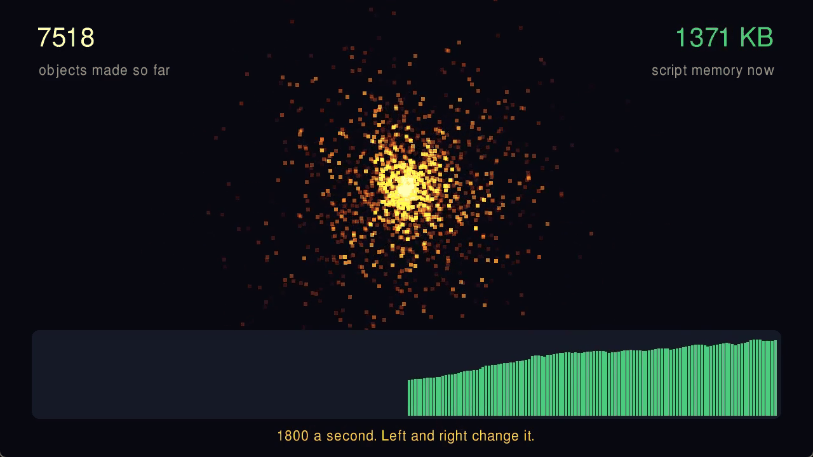
memory/main.as 94 lines
// Script objects are freed as soon as nothing refers to them; loops of them by a collector that does a
// little every frame. The graph should wander, never climb.
class Spark
{
Vec2 at, speed;
float life;
Spark@ other; // half of these point at each other, so counting alone can't free them
string note = "a string of its own";
}
class MemoryScreen : Screen
{
Font@ font = Assets::font("global:freesans.sfn", 24);
Font@ big = Assets::font("global:freesans.sfn", 44);
array<Spark@> sparks;
array<float> history(240);
uint at = 0;
float clock = 0;
uint made = 0;
uint perSecond = 600;
void update(float dt)
{
if (Input::repeated("right") && perSecond < 3000) perSecond += 200;
if (Input::repeated("left") && perSecond > 200) perSecond -= 200;
uint make = perSecond / 60;
for (uint i = 0; i < make; i++)
{
Spark a;
a.at = Vec2(640, 300);
float angle = random(0, 6.283f), speed = random(60, 320);
a.speed = Vec2(cos(angle) * speed, sin(angle) * speed);
a.life = random(0.4f, 1.4f);
if (i % 2 == 0)
{
Spark b;
@a.other = b;
@b.other = a;
}
sparks.insertLast(a);
made++;
}
for (uint i = 0; i < sparks.length();)
{
Spark@ s = sparks[i];
s.life -= dt;
s.at = s.at + s.speed * dt;
if (s.life <= 0)
{
@sparks[i] = sparks[sparks.length() - 1];
sparks.removeLast();
}
else
i++;
}
clock += dt;
if (clock > 0.05f)
{
clock = 0;
history[at] = float(App::scriptKilobytes);
at = (at + 1) % history.length();
}
}
void draw(Canvas@ c)
{
c.design(1280, 720);
c.rect(0, 0, 1280, 720, Color(0.04f, 0.04f, 0.07f));
c.blend = BlendAdd;
for (uint i = 0; i < sparks.length(); i++)
{
Spark@ s = sparks[i];
c.rect(s.at.x - 3, s.at.y - 3, 6, 6, fade(hsv(s.life * 0.12f, 0.9f, 1), clamp(s.life, 0, 1)));
}
c.blend = BlendAlpha;
c.text(big, formatInt(made), 60, 40, White);
c.text(font, "objects made so far", 62, 100, Gray);
c.text(big, formatInt(App::scriptKilobytes) + " KB", 1220, 40, Green, AlignRight);
c.text(font, "script memory now", 1220, 100, Gray, AlignRight);
float most = 1;
for (uint i = 0; i < history.length(); i++)
if (history[i] > most) most = history[i];
c.roundRect(50, 520, 1180, 140, 12, Color(0.09f, 0.1f, 0.15f));
for (uint i = 0; i < history.length(); i++)
{
float h = history[(at + i) % history.length()] / most * 120;
c.rect(60 + float(i) * 4.85f, 655 - h, 4, h, Color(0.3f, 0.8f, 0.5f));
}
c.text(font, formatInt(perSecond) + " a second. Left and right change it.", 640, 676, Yellow, AlignCenter);
}
}
Live reload
Edit this screen while it runs
reload/main.as 36 lines
// Run the showcase with --dev, then change anything in this file and save it. The screen restarts by
// itself. A mistake shows as an error, and mending it carries on.
const string Note = "Change me!";
const Color Back = Color(0.1f, 0.16f, 0.2f);
const uint Petals = 9;
class ReloadScreen : Screen
{
Font@ font = Assets::font("global:freesans.sfn", 26);
Font@ big = Assets::font("global:freesans.sfn", 60);
Tween arrive;
void onEnter() { arrive = Tween(0, 1, 0.7f, EaseOvershoot); }
void draw(Canvas@ c)
{
c.design(1280, 720);
c.rect(0, 0, 1280, 720, Back);
c.push();
c.translate(640, 270);
c.scale(arrive.value, arrive.value);
c.rotate(App::time * 20);
for (uint i = 0; i < Petals; i++)
{
c.rotate(360.0f / float(Petals));
c.circle(0, -120, 46, fade(hsv(float(i) / float(Petals), 0.6f, 1), 0.85f));
}
c.circle(0, 0, 60, White);
c.pop();
c.text(big, Note, 640, 440, White, AlignCenter);
c.text(font, "media/showcase/reload/main.as", 640, 530, Color(0.75f, 0.85f, 0.9f), AlignCenter);
c.text(font, App::development ? "Watching for changes. Reloaded " + formatInt(App::reloads) + " times." : "Start the showcase with --dev to watch for changes.", 640, 580, Yellow, AlignCenter);
c.text(font, "Images reload too, where they are, without restarting anything.", 640, 620, Color(0.75f, 0.85f, 0.9f), AlignCenter);
}
}
Broken script
A script error stops one screen, not the app
faulty/main.as 48 lines
// Breaks on purpose. The engine stops this screen, says where, and offers the way out.
class FaultyScreen : Screen
{
Font@ font = Assets::font("global:freesans.sfn", 30);
array<string> faults = { "Divide by zero", "Run for ever", "Use something that isn't there", "Read past the end of a list" };
uint chosen = 0;
void update(float dt)
{
if (Input::repeated("down")) chosen = (chosen + 1) % faults.length();
if (Input::repeated("up")) chosen = (chosen + faults.length() - 1) % faults.length();
if (Input::pressed("accept"))
breakIt(chosen);
}
void breakIt(uint how)
{
int zero = 0;
array<int> list;
Texture@ nothing;
if (how == 0)
zero = 1 / zero;
else if (how == 1)
{
while (true)
zero++;
}
else if (how == 2)
zero = int(nothing.width);
else
zero = list[10];
}
void draw(Canvas@ c)
{
c.design(1280, 720);
c.rect(0, 0, 1280, 720, Color(0.1f, 0.06f, 0.07f));
c.text(font, "Choose a way to break this screen", 640, 120, White, AlignCenter);
for (uint i = 0; i < faults.length(); i++)
{
float y = 220 + float(i) * 80;
c.roundRect(390, y, 500, 62, 14, i == chosen ? Red : Color(0.2f, 0.12f, 0.14f));
c.text(font, faults[i], 640, y + 13, White, AlignCenter);
}
c.text(font, "The app carries on whatever happens here", 640, 600, Gray, AlignCenter);
}
}
Coroutines
Scripts that wait, written from top to bottom
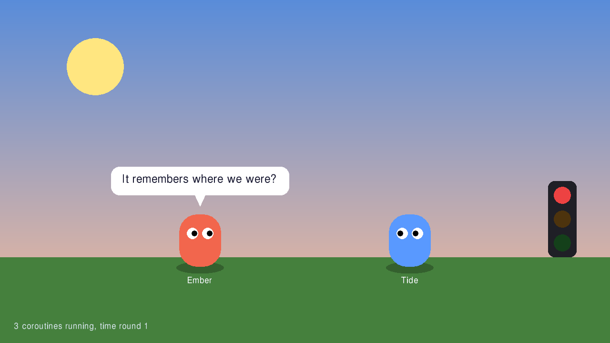
coroutines/main.as 177 lines
// A little play. Each character is a coroutine, and the lines are just written in order.
class Actor
{
string name;
Tween x;
Tween jump;
Color color;
string line;
uint shown = 0;
Actor(const string &in name_, float at, const Color &in color_)
{
name = name_;
x = Tween(at);
color = color_;
}
}
class CoroutinesScreen : Screen
{
Font@ font = Assets::font("global:freesans.sfn", 26);
Font@ small = Assets::font("global:freesans.sfn", 20);
Sound@ talk = Assets::sound("global:sound/move.wav");
Sound@ hop = Assets::sound("global:sound/pop.wav");
Sound@ bell = Assets::sound("global:sound/bell.wav");
Actor@ red = Actor("Ember", -100, Color(0.95f, 0.4f, 0.3f));
Actor@ blue = Actor("Tide", 1380, Color(0.35f, 0.6f, 1));
Tween sun(0);
uint lamp = 0;
int scene = 0;
void onEnter()
{
start(Coroutine(this.play));
start(Coroutine(this.traffic));
start(Coroutine(this.blink));
}
float eyes = 1;
void blink()
{
while (true)
{
wait(random(1.5f, 4));
eyes = 0.1f;
wait(0.12f);
eyes = 1;
}
}
void traffic()
{
while (true)
{
lamp = 0;
wait(3);
lamp = 1;
wait(1);
lamp = 2;
wait(3);
lamp = 1;
wait(1);
}
}
void say(Actor@ who, const string &in text)
{
who.line = text;
for (who.shown = 0; who.shown < text.length(); who.shown++)
{
if (who.shown % 3 == 0) talk.play(0.4f, who is red ? -0.4f : 0.4f, who is red ? 0.9f : 1.2f);
wait(0.028f);
}
wait(1.3f);
who.line = "";
}
void walk(Actor@ who, float to)
{
who.x.go(to, 1.6f, EaseSmooth);
while (!who.x.done) nextUpdate();
}
void leap(Actor@ who)
{
hop.play(0.7f);
who.jump = Tween(1, 0, 0.6f, EaseLinear);
while (!who.jump.done) nextUpdate();
}
void play()
{
while (true)
{
scene++;
sun.go(1, 4, EaseSmooth);
walk(red, 420);
say(red, "I was told there would be a game engine.");
walk(blue, 860);
say(blue, "You're standing in it.");
leap(red);
say(red, "It remembers where we were?");
say(blue, "Every line of this is one function. It just waits.");
start(Coroutine(this.ring));
say(red, "And that bell?");
say(blue, "Another one, at the same time.");
leap(blue);
leap(red);
sun.go(0, 4, EaseSmooth);
say(blue, "Same again?");
walk(blue, 1380);
walk(red, -100);
wait(0.5f);
}
}
void ring()
{
for (int i = 0; i < 3; i++)
{
bell.play(0.5f, 0, 1 + float(i) * 0.25f);
wait(0.5f);
}
}
void actor(Canvas@ c, Actor@ a)
{
float j = a.jump.value;
float up = 4 * j * (1 - j) * 120;
float step = a.x.done ? 0 : abs(sin(App::time * 12)) * 8;
float x = a.x.value, y = 560 - up - step;
c.push();
c.translate(x, 562);
c.scale(1, 0.25f);
c.circle(0, 0, 50 - up * 0.15f, Color(0, 0, 0, 0.25f));
c.pop();
c.roundRect(x - 44, y - 110, 88, 110, 38, a.color);
c.circle(x - 16, y - 70, 12, White);
c.circle(x + 16, y - 70, 12, White);
float look = a is red ? 4.0f : -4.0f;
c.circle(x - 16 + look, y - 70, 6 * eyes, Black);
c.circle(x + 16 + look, y - 70, 6 * eyes, Black);
c.text(small, a.name, x, 580, White, AlignCenter);
if (a.line != "")
{
string text = a.line.substr(0, a.shown);
float w = font.measure(a.line).x + 50;
float left = clamp(x - w / 2, 30, 1250 - w);
c.roundRect(left, y - 210, w, 60, 18, White);
c.triangle(Vec2(x - 12, y - 152), Vec2(x + 12, y - 152), Vec2(x, y - 126), White, White, White);
c.text(font, text, left + 25, y - 196, Color(0.1f, 0.1f, 0.2f));
}
}
float abs(float v) { return v < 0 ? -v : v; }
void draw(Canvas@ c)
{
c.design(1280, 720);
float s = sun.value;
c.gradient(0, 0, 1280, 560, Color(0.05f + 0.3f * s, 0.07f + 0.48f * s, 0.2f + 0.65f * s), Color(0.15f + 0.7f * s, 0.1f + 0.6f * s, 0.3f + 0.35f * s));
c.circle(200, 560 - s * 420, 60, Color(1, 0.9f, 0.5f));
c.circle(1060, 140 + s * 520, 44, Color(0.9f, 0.92f, 1));
c.rect(0, 540, 1280, 180, Color(0.12f + 0.15f * s, 0.2f + 0.3f * s, 0.14f + 0.1f * s));
c.roundRect(1150, 380, 60, 160, 14, Color(0.12f, 0.12f, 0.15f));
c.circle(1180, 410, 18, lamp == 0 ? Red : Color(0.3f, 0.1f, 0.1f));
c.circle(1180, 460, 18, lamp == 1 ? Orange : Color(0.3f, 0.2f, 0.05f));
c.circle(1180, 510, 18, lamp == 2 ? Green : Color(0.08f, 0.25f, 0.1f));
actor(c, red);
actor(c, blue);
c.text(small, formatInt(coroutines()) + " coroutines running, time round " + formatInt(scene), 30, 676, Color(0.85f, 0.9f, 0.95f));
}
}
Games
Sky Patrol
A small complete game: move, fire, dodge
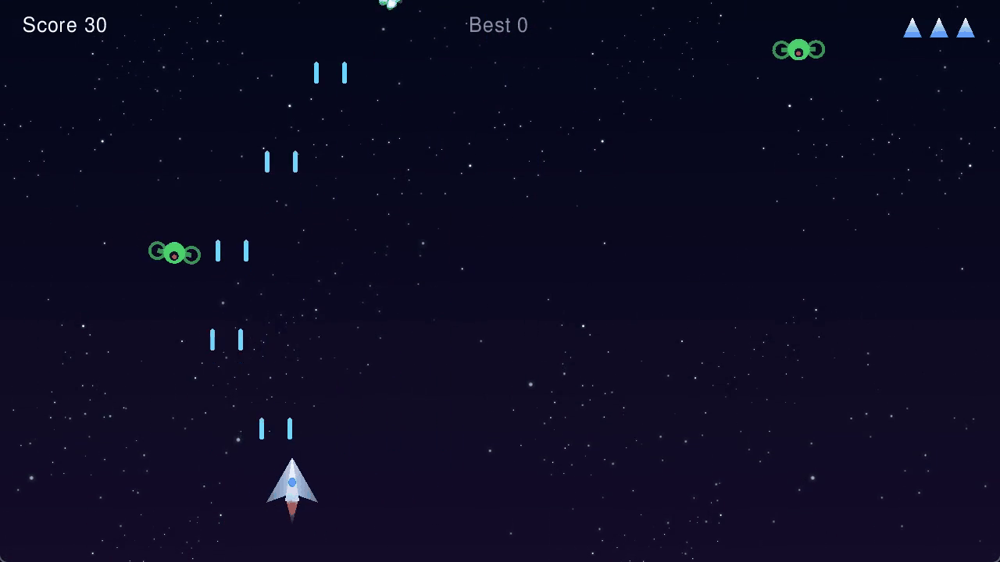
patrol/main.as 365 lines
// Sky Patrol: a complete little game. Drones drift in on curves, some fire back, and clearing a wave
// brings a faster one. All the art is drawn from shapes.
class Drone
{
float x, y, phase, swing, speed, reload;
int health;
int kind;
float hurt;
bool alive = false;
}
class Shot
{
float x, y, vx, vy;
bool mine;
bool alive = false;
}
class Spark
{
float x, y, vx, vy, life;
Color color;
}
class PatrolScreen : Screen
{
Texture@ stars = Assets::texture("asset:stars.png");
Font@ font = Assets::font("global:freesans.sfn", 28);
Font@ big = Assets::font("global:freesans.sfn", 70);
// Fixed pools: nothing is made or thrown away while playing.
array<Drone> drones(24);
array<Shot> shots(96);
array<Spark> sparks(200);
uint nextSpark = 0;
int state = 0; // 0 title, 1 playing, 2 over
float t = 0, shake = 0, banner = 0;
int score = 0, best = 0, lives = 3, wave = 0, waiting = 0;
float spawnIn = 0, reload = 0, safe = 0;
float px = 640, py = 620, tilt = 0;
void start()
{
state = 1;
score = 0;
lives = 3;
wave = 0;
px = 640;
py = 620;
safe = 2;
for (uint i = 0; i < drones.length(); i++) drones[i].alive = false;
for (uint i = 0; i < shots.length(); i++) shots[i].alive = false;
nextWave();
}
void nextWave()
{
wave++;
waiting = 5 + wave * 2;
spawnIn = 1.2f;
banner = 2;
}
void burst(float x, float y, const Color &in color, int count)
{
for (int i = 0; i < count; i++)
{
Spark@ s = sparks[nextSpark];
nextSpark = (nextSpark + 1) % sparks.length();
float a = random(0, 6.28318f);
float v = random(40, 300);
s.x = x;
s.y = y;
s.vx = cos(a) * v;
s.vy = sin(a) * v;
s.life = random(0.4f, 1);
s.color = color;
}
}
void shoot(float x, float y, float vx, float vy, bool mine)
{
for (uint i = 0; i < shots.length(); i++)
{
Shot@ s = shots[i];
if (!s.alive)
{
s.x = x;
s.y = y;
s.vx = vx;
s.vy = vy;
s.mine = mine;
s.alive = true;
return;
}
}
}
void spawn()
{
for (uint i = 0; i < drones.length(); i++)
{
Drone@ d = drones[i];
if (!d.alive)
{
d.kind = wave > 1 && random() < 0.3f ? 1 : 0;
d.x = random(160, 1120);
d.y = -50;
d.phase = random(0, 6);
d.swing = random(40, 150);
d.speed = random(70, 110) + float(wave) * 8;
d.health = d.kind == 1 ? 3 : 1;
d.reload = random(1, 2.5f);
d.hurt = 0;
d.alive = true;
waiting--;
return;
}
}
}
bool hit(float ax, float ay, float bx, float by, float reach)
{
float dx = ax - bx, dy = ay - by;
return dx * dx + dy * dy < reach * reach;
}
void update(float dt)
{
t += dt;
shake = clamp(shake - dt * 2, 0, 1);
banner -= dt;
for (uint i = 0; i < sparks.length(); i++)
{
Spark@ s = sparks[i];
s.life -= dt;
s.x += s.vx * dt;
s.y += s.vy * dt;
s.vx *= 1 - 2 * dt;
s.vy *= 1 - 2 * dt;
}
if (state != 1)
{
if (Input::pressed("accept"))
start();
return;
}
player(dt);
fleet(dt);
bullets(dt);
}
void player(float dt)
{
Vec2 move = Input::move;
px = clamp(px + move.x * 420 * dt, 50, 1230);
py = clamp(py + move.y * 420 * dt, 120, 680);
tilt = lerp(tilt, move.x, 0.15f);
safe -= dt;
reload -= dt;
if (Input::held("fire") && reload <= 0)
{
reload = 0.14f;
shoot(px - 18, py - 20, 0, -760, true);
shoot(px + 18, py - 20, 0, -760, true);
}
}
void fleet(float dt)
{
spawnIn -= dt;
if (waiting > 0 && spawnIn <= 0)
{
spawn();
spawnIn = clamp(0.9f - float(wave) * 0.05f, 0.25f, 1);
}
bool any = false;
for (uint i = 0; i < drones.length(); i++)
{
Drone@ d = drones[i];
if (!d.alive)
continue;
any = true;
d.phase += dt;
d.hurt = clamp(d.hurt - dt * 5, 0, 1);
d.y += d.speed * dt;
d.x = clamp(d.x + cos(d.phase * 1.6f) * d.swing * dt, 30, 1250);
d.reload -= dt;
if (d.kind == 1 && d.reload <= 0 && d.y < 480)
{
d.reload = 1.8f;
float dx = px - d.x, dy = py - d.y;
float l = sqrt(dx * dx + dy * dy) + 1;
shoot(d.x, d.y + 20, dx / l * 260, dy / l * 260, false);
}
if (d.y > 780)
d.alive = false;
else if (safe <= 0 && hit(d.x, d.y, px, py, 46))
{
d.alive = false;
burst(d.x, d.y, Orange, 24);
loseLife();
}
}
if (!any && waiting == 0)
nextWave();
}
void bullets(float dt)
{
for (uint i = 0; i < shots.length(); i++)
{
Shot@ s = shots[i];
if (!s.alive)
continue;
s.x += s.vx * dt;
s.y += s.vy * dt;
if (s.y < -20 || s.y > 740 || s.x < -20 || s.x > 1300)
{
s.alive = false;
continue;
}
if (!s.mine)
{
if (safe <= 0 && hit(s.x, s.y, px, py, 24))
{
s.alive = false;
loseLife();
}
continue;
}
for (uint j = 0; j < drones.length(); j++)
{
Drone@ d = drones[j];
if (d.alive && hit(s.x, s.y, d.x, d.y, d.kind == 1 ? 34 : 26))
{
s.alive = false;
d.health--;
d.hurt = 1;
if (d.health <= 0)
{
d.alive = false;
score += d.kind == 1 ? 50 : 10;
burst(d.x, d.y, d.kind == 1 ? Purple : Green, 18);
}
break;
}
}
}
}
void loseLife()
{
lives--;
safe = 2;
shake = 1;
burst(px, py, Yellow, 40);
if (lives <= 0)
{
state = 2;
best = score > best ? score : best;
}
}
void drawShip(Canvas@ c, float x, float y)
{
c.push();
c.translate(x, y);
c.scale(1 - abs(tilt) * 0.2f, 1);
c.blend = BlendAdd;
float f = random(18, 34);
c.triangle(Vec2(-9, 22), Vec2(9, 22), Vec2(0, 22 + f), Orange, Orange, fade(Red, 0));
c.blend = BlendAlpha;
Color hull(0.75f, 0.82f, 0.92f);
Color dark(0.35f, 0.45f, 0.62f);
c.triangle(Vec2(0, -34), Vec2(40, 24), Vec2(0, 12), hull, dark, hull);
c.triangle(Vec2(0, -34), Vec2(-40, 24), Vec2(0, 12), hull, dark, hull);
c.triangle(Vec2(0, -34), Vec2(11, 22), Vec2(-11, 22), White, hull, hull);
c.circle(0, -2, 6, Blue);
c.pop();
}
float abs(float v) { return v < 0 ? -v : v; }
void drawDrone(Canvas@ c, const Drone@ d)
{
c.push();
c.translate(d.x, d.y);
c.rotate(sin(d.phase * 1.6f) * 14);
Color body = d.kind == 1 ? Purple : Green;
if (d.hurt > 0)
body = White;
float s = d.kind == 1 ? 1.3f : 1.0f;
c.scale(s, s);
c.ring(-22, 0, 12, 4, fade(body, 0.7f));
c.ring(22, 0, 12, 4, fade(body, 0.7f));
c.rect(-22, -3, 44, 6, fade(body, 0.7f));
c.circle(0, 0, 14, body);
c.circle(0, 4, 6, Color(0.1f, 0.1f, 0.15f));
c.circle(sin(d.phase * 3) * 2, 5, 3, Red);
c.pop();
}
void draw(Canvas@ c)
{
c.design(1280, 720);
c.gradient(0, 0, 1280, 720, Color(0.02f, 0.03f, 0.1f), Color(0.08f, 0.05f, 0.16f));
c.tile(stars, 0, 0, 1280, 720, 640, 640, 0, t * 60);
c.tile(stars, 0, 0, 1280, 720, 1000, 1000, 100, t * 140, Color(1, 1, 1, 0.6f));
c.push();
c.translate(random(-12, 12) * shake, random(-12, 12) * shake);
for (uint i = 0; i < drones.length(); i++)
{
if (drones[i].alive)
drawDrone(c, drones[i]);
}
if (state == 1 && (safe <= 0 || int(t * 12) % 2 == 0))
drawShip(c, px, py);
c.blend = BlendAdd;
for (uint i = 0; i < shots.length(); i++)
{
Shot@ s = shots[i];
if (!s.alive)
continue;
if (s.mine)
c.roundRect(s.x - 3, s.y - 14, 6, 28, 3, Color(0.4f, 0.8f, 1));
else
c.circle(s.x, s.y, 8, Color(1, 0.4f, 0.5f));
}
for (uint i = 0; i < sparks.length(); i++)
{
Spark@ s = sparks[i];
if (s.life > 0)
c.circle(s.x, s.y, 2 + s.life * 4, fade(s.color, s.life));
}
c.pop();
c.text(font, "Score " + formatInt(score), 30, 20);
c.text(font, "Best " + formatInt(best), 640, 20, Gray, AlignCenter);
for (int i = 0; i < lives; i++)
c.triangle(Vec2(1236 - i * 34, 22), Vec2(1248 - i * 34, 48), Vec2(1224 - i * 34, 48), White, Blue, Blue);
string accept = Input::usingPad ? "A" : "Enter";
if (state == 1 && banner > 0)
c.text(big, "Wave " + formatInt(wave), 640, 250, fade(White, clamp(banner, 0, 1)), AlignCenter);
if (state == 0)
{
c.text(big, "SKY PATROL", 640, 220, hsv(t * 0.1f, 0.4f, 1), AlignCenter);
c.text(font, "Arrows or stick to move, hold " + (Input::usingPad ? "A" : "Space") + " to fire", 640, 340, Color(0.8f, 0.85f, 0.95f), AlignCenter);
c.text(font, accept + " to start", 640, 420, fade(Yellow, 0.6f + 0.4f * sin(t * 4)), AlignCenter);
drawShip(c, 640, 560 + sin(t * 2) * 10);
}
if (state == 2)
{
c.rect(0, 0, 1280, 720, Color(0, 0, 0, 0.5f));
c.text(big, "Game over", 640, 250, Red, AlignCenter);
c.text(font, "You reached wave " + formatInt(wave) + " with " + formatInt(score) + " points", 640, 350, White, AlignCenter);
c.text(font, accept + " to play again", 640, 420, fade(Yellow, 0.6f + 0.4f * sin(t * 4)), AlignCenter);
}
}
}
Shooter
Waves, bosses and power-ups from prefabs
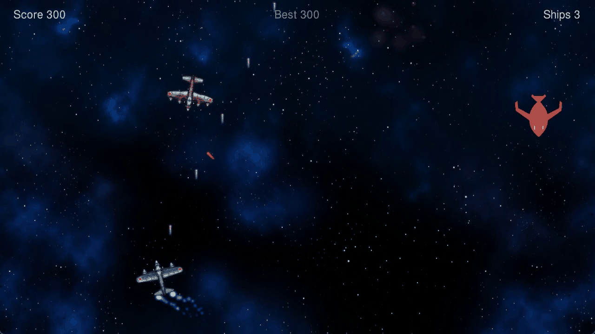
shooter/main.as 260 lines
// Everything that flies is a prefab in scene.json: how it looks, moves and collides, and which class
// below runs it. The engine moves, collides and draws them.
const uint EnemyGroup = 1, PlayerGroup = 0;
ShooterScreen@ game;
class Player : Behaviour
{
float reload = 0, safe = 2;
int power = 1;
void update(float dt)
{
Vec2 move = Input::move;
entity.position += move * 420 * dt;
entity.position = Vec2(clamp(entity.x, 60, 1220), clamp(entity.y, 120, 670));
entity.rotation = lerp(entity.rotation, move.x * 14, 0.2f);
safe -= dt;
entity.alpha = safe > 0 && sin(App::time * 30) > 0 ? 0.3f : 1.0f;
reload -= dt;
if (Input::held("fire") && reload <= 0)
{
reload = 0.13f;
game.shotSound.play(0.25f, (entity.x - 640) / 800);
for (int i = 0; i < power; i++)
{
float side = float(i) - float(power - 1) / 2;
Entity@ s = Scene::spawn("shot", entity.position + Vec2(side * 22, -44));
s.velocity = Vec2(side * 60, -900);
s.rotation = side * 4;
}
}
}
void onHit(Entity@ other)
{
if (cast<PowerUp>(other.behaviour) !is null)
{
other.destroy();
power = power < 5 ? power + 1 : 5;
game.score += 250;
game.coinSound.play(0.6f);
Scene::burst("pickup", entity.position, 24);
}
else if (safe <= 0)
{
Scene::burst("fire", entity.position, 60);
game.boomSound.play(0.9f);
entity.destroy();
game.lost();
}
}
}
class Shot : Behaviour
{
void onHit(Entity@ other)
{
Enemy@ enemy = cast<Enemy>(other.behaviour);
if (enemy is null) return;
enemy.hurt(1);
Scene::burst("spark", entity.position, 5);
entity.destroy();
}
}
class Enemy : Behaviour
{
int health = 2;
int worth = 100;
float t = random(0, 6);
float reload = random(1, 3);
float from = 0;
void start() { from = entity.x; }
void update(float dt)
{
t += dt;
think(dt);
Color c = entity.color;
entity.color = Color(1, lerp(c.g, 1, 0.15f), lerp(c.b, 1, 0.15f));
if (entity.y > 780) entity.destroy();
}
// Drifts down in curves, and shoots at the player now and then.
void think(float dt)
{
entity.x = from + sin(t * 1.6f) * 110;
entity.rotation = cos(t * 1.6f) * 12;
reload -= dt;
if (reload <= 0 && entity.y > 60)
{
reload = random(1.4f, 3);
aim(entity.position + Vec2(0, 30), 300, 0);
}
}
void aim(const Vec2 &in at, float speed, float turn)
{
Entity@ p = Scene::find("player");
Vec2 way = p is null ? Vec2(0, 1) : p.position - at;
float angle = atan2(way.y, way.x) + turn;
Entity@ b = Scene::spawn("bullet", at);
b.velocity = Vec2(cos(angle), sin(angle)) * speed;
b.rotation = angle * 57.3f + 90;
}
void hurt(int by)
{
health -= by;
entity.color = Color(1, 0.3f, 0.3f);
if (health > 0 || !entity.alive) return;
game.score += worth;
game.shake = worth > 500 ? 1.0f : 0.25f;
game.boomSound.play(worth > 500 ? 1.0f : 0.35f, (entity.x - 640) / 800, random(0.9f, 1.2f));
Scene::burst("fire", entity.position, worth > 500 ? 200 : 26);
Scene::burst("smoke", entity.position, worth > 500 ? 40 : 6);
if (random() < 0.14f || worth > 500) Scene::spawn("power", entity.position);
entity.destroy();
}
}
class Diver : Enemy
{
Diver() { health = 1; worth = 150; }
void think(float dt) { entity.x += sin(t * 3) * 2; }
}
class Boss : Enemy
{
Boss() { health = 70; worth = 3000; }
void think(float dt)
{
entity.x = 640 + sin(t * 0.7f) * 380;
entity.y = lerp(entity.y, 190, 0.02f);
entity.velocity = Vec2();
reload -= dt;
if (reload <= 0)
{
reload = health < 30 ? 0.7f : 1.1f;
for (int i = -3; i <= 3; i++) aim(entity.position + Vec2(0, 60), 340, float(i) * 0.2f);
}
}
}
class PowerUp : Behaviour {}
class ShooterScreen : Screen
{
Font@ font = Assets::font("global:freesans.sfn", 26);
Font@ big = Assets::font("global:freesans.sfn", 64);
Texture@ nebula = Assets::texture("asset:nebula.png");
Texture@ stars = Assets::texture("asset:stars.png");
Sound@ shotSound = Assets::sound("global:sound/pop.wav");
Sound@ boomSound = Assets::sound("global:sound/boom.wav");
Sound@ coinSound = Assets::sound("global:sound/coin.wav");
Sound@ winSound = Assets::sound("global:sound/win.wav");
Sound@ loseSound = Assets::sound("global:sound/lose.wav");
int score = 0, best = 0, lives = 3, wave = 0;
float shake = 0, scroll = 0;
bool over = false;
string banner;
Tween bannerIn;
void onEnter()
{
@game = this;
best = int(parseInt(Save::get("shooter.best", "0")));
Scene::load("asset:scene.json");
start(Coroutine(this.play));
}
void onExit() { @game = null; }
void say(const string &in text)
{
banner = text;
bannerIn = Tween(0, 1, 0.5f, EaseOvershoot);
}
void play()
{
Scene::spawn("player", Vec2(640, 600));
while (true)
{
wave++;
say("Wave " + formatInt(wave));
wait(1.4f);
banner = "";
for (int i = 0; i < 4 + wave * 2; i++)
{
Scene::spawn(i % 3 == 2 ? "diver" : "enemy", Vec2(random(160, 1120), -60));
wait(clamp(0.9f - float(wave) * 0.06f, 0.35f, 1));
}
if (wave % 3 == 0)
{
say("Here it comes");
Scene::spawn("boss", Vec2(640, -120));
wait(1.5f);
banner = "";
}
while (Scene::countIn(EnemyGroup) > 0) nextUpdate();
winSound.play(0.4f);
wait(0.6f);
}
}
void lost()
{
lives--;
shake = 1;
if (lives > 0) start(Coroutine(this.again));
else
{
over = true;
loseSound.play(0.9f);
say("Game over");
if (score > best) Save::set("shooter.best", formatInt(score));
}
}
void again()
{
wait(1.2f);
Scene::spawn("player", Vec2(640, 600));
}
void update(float dt)
{
scroll += dt;
shake = clamp(shake - dt * 2, 0, 1);
if (over && Input::pressed("accept")) Screens::replace("shooter");
}
void draw(Canvas@ c)
{
c.design(1280, 720);
c.tile(nebula, 0, 0, 1280, 720, 1280, 1280, 0, scroll * 12);
c.tile(stars, 0, 0, 1280, 720, 1024, 1024, 0, scroll * 40);
Scene::camera(Vec2(640 + random(-1, 1) * shake * 14, 360 + random(-1, 1) * shake * 14));
Scene::draw(c);
c.text(font, "Score " + formatInt(score), 30, 20);
c.text(font, "Best " + formatInt(score > best ? score : best), 640, 20, Gray, AlignCenter);
c.text(font, "Ships " + formatInt(lives), 1250, 20, White, AlignRight);
if (banner != "")
{
c.push();
c.translate(640, 300);
c.scale(bannerIn.value, bannerIn.value);
c.text(big, banner, 0, -40, White, AlignCenter);
if (over) c.text(font, "Accept to play again", 0, 50, Yellow, AlignCenter);
c.pop();
}
}
}
Comet rally
Curve a comet past your rival and collect stars

rally/main.as 256 lines
// Getting the comet past your rival scores three; every star it passes through scores one for whoever
// hit it last. A moving bat bends its path, and holding fire charges a smash. First to fifteen.
class Star
{
Vec2 at;
float drift;
float born = 0;
}
class RallyScreen : Screen
{
Font@ font = Assets::font("global:freesans.sfn", 24);
Font@ big = Assets::font("global:freesans.sfn", 60);
Sound@ hit = Assets::sound("global:sound/hit.wav");
Sound@ wall = Assets::sound("global:sound/wall.wav");
Sound@ coin = Assets::sound("global:sound/coin.wav");
Sound@ boom = Assets::sound("global:sound/boom.wav");
Sound@ whoosh = Assets::sound("global:sound/whoosh.wav");
Sound@ win = Assets::sound("global:sound/win.wav");
Sound@ lose = Assets::sound("global:sound/lose.wav");
Vec2 ball, speed;
float spin = 0;
float me = 360, rival = 360, meSpeed = 0, rivalSpeed = 0;
float charge = 0;
int mine = 0, theirs = 0;
bool lastMine = true;
bool playing = false, over = false;
int rallyLength = 0, bestRally = 0;
float shake = 0;
string banner;
Tween bannerIn;
array<Vec2> trail(24);
uint at = 0;
array<Star@> stars;
float aim = 0;
void onEnter()
{
bestRally = int(parseInt(Save::get("rally.best", "0")));
start(Coroutine(this.serve));
start(Coroutine(this.sky));
}
void sky()
{
while (true)
{
wait(2.2f);
if (playing && stars.length() < 4)
{
Star s;
s.at = Vec2(random(420, 860), random(140, 620));
s.drift = random(-40, 40);
stars.insertLast(s);
}
}
}
void say(const string &in text)
{
banner = text;
bannerIn = Tween(0, 1, 0.4f, EaseOvershoot);
}
void serve()
{
playing = false;
ball = Vec2(640, 360);
for (uint i = 0; i < trail.length(); i++) trail[i] = ball;
spin = 0;
rallyLength = 0;
for (int i = 3; i > 0; i--)
{
say(formatInt(i));
wall.play(0.6f, 0, i == 1 ? 1.5f : 1.0f);
wait(0.5f);
}
banner = "";
float side = lastMine ? 1.0f : -1.0f;
speed = Vec2(side * 430, random(-200, 200));
playing = true;
}
void finish()
{
over = true;
stars.resize(0);
say(mine > theirs ? "You win!" : "Rival wins");
(mine > theirs ? win : lose).play(0.9f);
wait(1);
while (!Input::pressed("accept")) nextUpdate();
mine = theirs = 0;
over = false;
start(Coroutine(this.serve));
}
void point(bool forMe, int worth)
{
if (forMe) mine += worth;
else theirs += worth;
}
void update(float dt)
{
float move = Input::move.y;
meSpeed = lerp(meSpeed, move * 640, 0.25f);
me = clamp(me + meSpeed * dt, 120, 600);
charge = Input::held("fire") ? clamp(charge + dt * 1.2f, 0, 1) : clamp(charge - dt * 2, 0, 1);
// The rival watches the comet, not perfectly, and drifts back to the middle.
aim = lerp(aim, speed.x > 0 ? ball.y + speed.y * 0.10f : 360.0f, 0.06f);
float want = clamp((aim - rival) * 5, -430, 430);
rivalSpeed = lerp(rivalSpeed, want, 0.2f);
rival = clamp(rival + rivalSpeed * dt, 120, 600);
shake = clamp(shake - dt * 3, 0, 1);
for (uint i = 0; i < stars.length(); i++)
{
stars[i].born += dt;
stars[i].at.y += stars[i].drift * dt;
if (stars[i].at.y < 110 || stars[i].at.y > 640) stars[i].drift = -stars[i].drift;
}
if (!playing || over) return;
trail[at] = ball;
at = (at + 1) % trail.length();
speed.y += spin * dt;
spin *= 0.985f;
ball = ball + speed * dt;
float pan = (ball.x - 640) / 640;
if ((ball.y < 96 && speed.y < 0) || (ball.y > 644 && speed.y > 0))
{
speed.y = -speed.y;
spin = -spin * 0.5f;
wall.play(0.5f, pan);
}
if (speed.x < 0 && ball.x < 96 && ball.x > 60 && near(ball.y, me)) strike(true, pan);
if (speed.x > 0 && ball.x > 1184 && ball.x < 1220 && near(ball.y, rival)) strike(false, pan);
for (uint i = 0; i < stars.length();)
{
Vec2 d = stars[i].at - ball;
if (d.x * d.x + d.y * d.y < 34 * 34)
{
point(lastMine, 1);
coin.play(0.5f, pan);
stars.removeAt(i);
checkOver();
}
else
i++;
}
if (ball.x < -20 || ball.x > 1300)
{
bool forMe = ball.x > 0;
point(forMe, 3);
lastMine = forMe;
shake = 1;
boom.play(0.8f, pan);
playing = false;
if (!checkOver()) start(Coroutine(this.serve));
}
}
bool checkOver()
{
if (over || (mine < 15 && theirs < 15)) return over;
playing = false;
start(Coroutine(this.finish));
over = true;
return true;
}
bool near(float a, float b) { return a > b - 68 && a < b + 68; }
void strike(bool byMe, float pan)
{
float bat = byMe ? me : rival;
float batSpeed = byMe ? meSpeed : rivalSpeed;
float power = byMe ? charge : 0.0f;
float pace = clamp(sqrt(speed.x * speed.x + speed.y * speed.y) + 22, 430, 900) + power * 320;
float angle = (ball.y - bat) / 68 * 0.9f;
speed = Vec2(cos(angle) * pace * (byMe ? 1.0f : -1.0f), sin(angle) * pace);
spin = -batSpeed * 1.4f;
lastMine = byMe;
rallyLength++;
if (rallyLength > bestRally)
{
bestRally = rallyLength;
Save::set("rally.best", formatInt(bestRally));
}
hit.play(0.7f, pan, 0.9f + pace / 1800);
if (power > 0.5f) whoosh.play(0.8f, pan);
if (byMe) charge = 0;
shake = 0.15f + power * 0.4f;
}
void draw(Canvas@ c)
{
c.design(1280, 720);
c.gradient(0, 0, 1280, 720, Color(0.05f, 0.03f, 0.13f), Color(0.02f, 0.05f, 0.1f));
c.push();
c.translate(random(-1, 1) * shake * 12, random(-1, 1) * shake * 12);
c.rectLine(20, 80, 1240, 580, 3, Color(0.25f, 0.3f, 0.5f));
for (int i = 0; i < 15; i++) c.rect(638, 92 + float(i) * 38, 4, 20, Color(0.2f, 0.25f, 0.42f));
for (uint i = 0; i < stars.length(); i++)
{
Star@ s = stars[i];
float size = clamp(s.born * 3, 0, 1) * (14 + sin(App::time * 4 + float(i)) * 2);
c.push();
c.translate(s.at.x, s.at.y);
c.rotate(App::time * 60);
c.circle(0, 0, size * 1.6f, Color(1, 0.9f, 0.4f, 0.15f));
for (int k = 0; k < 4; k++)
{
c.rotate(90);
c.triangle(Vec2(-size * 0.35f, 0), Vec2(size * 0.35f, 0), Vec2(0, -size), Yellow, Yellow, White);
}
c.pop();
}
c.blend = BlendAdd;
for (uint i = 0; i < trail.length(); i++)
{
float p = float(i) / float(trail.length());
Vec2 t = trail[(at + i) % trail.length()];
c.circle(t.x, t.y, 4 + p * 12, fade(lastMine ? Color(0.3f, 0.7f, 1) : Color(1, 0.45f, 0.35f), p * 0.35f));
}
c.blend = BlendAlpha;
if (!over) c.circle(ball.x, ball.y, 14, White);
c.roundRect(64, me - 60, 22, 120, 11, Color(0.35f, 0.7f, 1));
if (charge > 0) c.roundRect(58, me - 60 * charge, 6, 120 * charge, 3, Yellow);
c.roundRect(1194, rival - 60, 22, 120, 11, Color(1, 0.45f, 0.35f));
c.pop();
c.text(big, formatInt(mine), 560, 4, Color(0.5f, 0.8f, 1), AlignCenter);
c.text(big, formatInt(theirs), 720, 4, Color(1, 0.6f, 0.5f), AlignCenter);
c.text(font, "Rally " + formatInt(rallyLength) + " best " + formatInt(bestRally), 40, 30, Gray);
c.text(font, over ? "Accept to play again" : "Up and down, hold fire to smash", 1240, 30, over ? Yellow : Gray, AlignRight);
if (banner != "")
{
c.push();
c.translate(640, 250);
c.scale(bannerIn.value, bannerIn.value);
c.text(big, banner, 0, -40, White, AlignCenter);
c.pop();
}
}
}
Platformer
A level drawn with letters in a text file
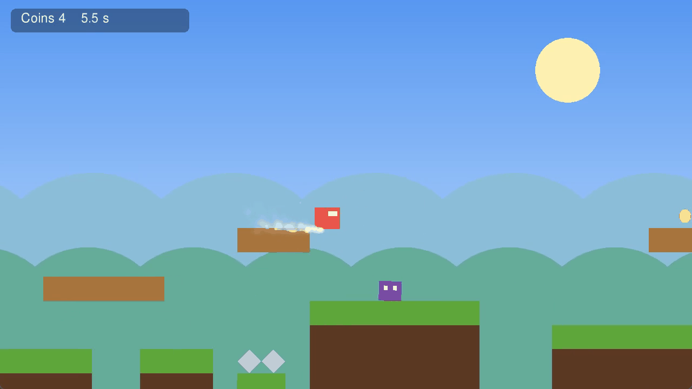
platformer/main.as 186 lines
// The level is rows of letters in scene.json. Solid bodies stop at its tiles; ledges only from above.
PlatformerScreen@ game;
class Hero : Behaviour
{
float grace = 0, early = 0, squash = 0;
bool wasDown = true;
Vec2 spawned;
Entity@ eyes;
void start()
{
spawned = entity.position;
@eyes = Scene::spawn(Vec2(6, -8));
eyes.rect(10, 8, White);
eyes.layer = 6;
eyes.attach(entity);
}
void update(float dt)
{
float move = Input::move.x;
Vec2 v = entity.velocity;
v.x = lerp(v.x, move * 290, entity.onGround ? 0.2f : 0.1f);
// Jumping still works just after leaving a ledge, and just before landing.
grace = entity.onGround ? 0.1f : grace - dt;
early = Input::pressed("accept") ? 0.12f : early - dt;
if (early > 0 && grace > 0)
{
v.y = -640;
grace = early = 0;
squash = -0.3f;
game.jump.play(0.4f);
}
if (early > 0 && entity.onWall != 0 && !entity.onGround)
{
v = Vec2(-float(entity.onWall) * 380, -560);
early = 0;
game.jump.play(0.4f, 0, 1.2f);
}
if (!Input::held("accept") && v.y < -220) v.y = -220; // a short press is a short jump
if (entity.onWall != 0 && v.y > 120) v.y = 120; // sliding down a wall
entity.velocity = v;
if (entity.onGround && !wasDown)
{
squash = 0.3f;
Scene::burst("dust", entity.position + Vec2(0, 18), 8);
}
wasDown = entity.onGround;
squash = lerp(squash, 0, 0.18f);
entity.scale = Vec2(1 + squash, 1 - squash);
if (move != 0) eyes.position = Vec2(move > 0 ? 6.0f : -6.0f, -8);
if (entity.y > Scene::mapSize.y + 100) hurt();
}
void hurt()
{
game.lose.play(0.5f);
Scene::burst("poof", entity.position, 30);
entity.position = spawned;
entity.velocity = Vec2();
}
void onHit(Entity@ other)
{
Walker@ walker = cast<Walker>(other.behaviour);
if (other.name == "coin")
{
game.coins++;
game.coin.play(0.5f, 0, 1 + float(game.coins % 8) * 0.05f);
Scene::burst("shine", other.position, 10);
other.destroy();
}
else if (other.name == "goal") game.won();
else if (walker !is null)
{
if (entity.velocity.y > 60 && entity.y < other.y - 8)
{
Scene::burst("poof", other.position, 20);
game.stomp.play(0.6f);
other.destroy();
entity.velocity = Vec2(entity.velocity.x, -420);
}
else hurt();
}
else hurt(); // spikes
}
}
class Walker : Behaviour
{
float way = -70;
void update(float dt)
{
if (entity.onWall != 0) way = entity.onWall > 0 ? -70.0f : 70.0f;
// Turns back at an edge.
if (entity.onGround && Scene::tile(entity.position + Vec2(way > 0 ? 18.0f : -18.0f, 26)) == 0) way = -way;
entity.velocity = Vec2(way, entity.velocity.y);
entity.rotation = sin(App::time * 8) * 6;
}
}
class Spin : Behaviour
{
float t = random(0, 6);
void update(float dt)
{
t += dt;
entity.scale = Vec2(cos(t * 4), 1);
}
}
class PlatformerScreen : Screen
{
Font@ font = Assets::font("global:freesans.sfn", 26);
Font@ big = Assets::font("global:freesans.sfn", 64);
Sound@ jump = Assets::sound("global:sound/whoosh.wav");
Sound@ coin = Assets::sound("global:sound/coin.wav");
Sound@ stomp = Assets::sound("global:sound/hit.wav");
Sound@ lose = Assets::sound("global:sound/lose.wav");
Sound@ win = Assets::sound("global:sound/win.wav");
int coins = 0;
bool done = false;
float t = 0;
Vec2 camera;
Sound@ music = Assets::sound("global:music/chip.ogg");
void onEnter()
{
@game = this;
Scene::load("asset:scene.json");
camera = Scene::find("hero").position;
music.playMusic(0.45f, 0.6f);
}
void onExit() { @game = null; }
void won()
{
if (done) return;
done = true;
win.play(0.8f);
Scene::burst("shine", Scene::find("hero").position, 80);
}
void update(float dt)
{
if (!done) t += dt;
else if (Input::pressed("accept")) Screens::replace("platformer");
Entity@ hero = Scene::find("hero");
Vec2 size = Scene::mapSize;
Vec2 want = Vec2(clamp(hero.x + hero.velocity.x * 0.35f, 640 / 1.4f, size.x - 640 / 1.4f), clamp(hero.y - 30, -1000, size.y - 360 / 1.4f));
camera = camera + (want - camera) * 0.08f;
}
void hills(Canvas@ c, float depth, float base, float size, const Color &in color)
{
for (int i = -1; i < 9; i++)
{
float x = float(i) * size * 1.3f - camera.x * depth % (size * 1.3f);
c.circle(x, base + size * 0.45f, size, color);
}
c.rect(0, base + size * 0.4f, 1280, 720, color);
}
void draw(Canvas@ c)
{
c.design(1280, 720);
c.gradient(0, 0, 1280, 720, Color(0.35f, 0.6f, 0.95f), Color(0.8f, 0.9f, 1));
c.circle(1050, 130, 60, Color(1, 0.95f, 0.7f));
hills(c, 0.1f, 430, 200, Color(0.55f, 0.75f, 0.85f));
hills(c, 0.25f, 540, 150, Color(0.4f, 0.68f, 0.6f));
Scene::camera(camera, 1.4f);
Scene::draw(c);
c.roundRect(20, 16, 330, 44, 10, Color(0, 0, 0, 0.35f));
c.text(font, "Coins " + formatInt(coins) + " " + formatFloat(t, "", 0, 1) + " s", 40, 22);
if (done)
{
c.rect(0, 280, 1280, 160, Color(0, 0, 0, 0.5f));
c.text(big, "You made it!", 640, 290, White, AlignCenter);
c.text(font, "Accept to run it again", 640, 380, Yellow, AlignCenter);
}
}
}
Rune shift
Turn squares of runes to join four of a colour

runes/main.as 304 lines
// The cursor holds four runes. Turn them one way or the other; four or more of a colour that touch
// vanish, the rest fall, and what that joins vanishes too. Each turn costs a move, and each step of a
// chain after the first gives one back. Reach the target before the moves run out.
const int Size = 8;
const float Cell = 72;
const float Left = 60;
const float Top = 72;
class Rune
{
int kind;
Tween x, y, size;
Rune(int kind_, float column, float row)
{
kind = kind_;
x = Tween(column);
y = Tween(row);
size = Tween(1);
}
}
class RunesScreen : Screen
{
Font@ font = Assets::font("global:freesans.sfn", 24);
Font@ big = Assets::font("global:freesans.sfn", 52);
Sound@ move = Assets::sound("global:sound/move.wav");
Sound@ turn = Assets::sound("global:sound/whoosh.wav");
Sound@ pop = Assets::sound("global:sound/pop.wav");
Sound@ bell = Assets::sound("global:sound/bell.wav");
Sound@ win = Assets::sound("global:sound/win.wav");
Sound@ lose = Assets::sound("global:sound/lose.wav");
array<Rune@> runes(Size * Size);
int column = 3, row = 3;
Tween cursorX(3), cursorY(3);
int score = 0, target = 60, level = 1, moves = 20, best = 0;
bool busy = true;
bool over = false;
string banner;
Tween bannerIn;
array<bool> marked(Size * Size);
void onEnter()
{
best = int(parseInt(Save::get("runes.best", "0")));
start(Coroutine(this.begin));
}
void say(const string &in text)
{
banner = text;
bannerIn = Tween(0, 1, 0.4f, EaseOvershoot);
}
int kinds() { return level < 3 ? 4 : 5; }
void begin()
{
busy = true;
for (int i = 0; i < Size * Size; i++)
@runes[i] = null;
// Filled so that nothing is joined yet.
for (int i = 0; i < Size * Size; i++)
{
Rune@ r = Rune(0, float(i % Size), -2);
do
{
r.kind = randomInt(0, kinds() - 1);
@runes[i] = r;
}
while (group(i % Size, i / Size, false) >= 3);
r.y = Tween(float(i / Size) - 9, float(i / Size), 0.5f + float(i / Size) * 0.03f, EaseBounce);
}
say("Level " + formatInt(level));
wait(0.9f);
banner = "";
busy = false;
}
// How many runes of one colour touch this one. Marks them if asked.
int group(int column, int row, bool mark)
{
array<bool> seen(Size * Size);
array<int> open = { row * Size + column };
int kind = runes[open[0]].kind;
seen[open[0]] = true;
int count = 0;
while (open.length() > 0)
{
int at = open[open.length() - 1];
open.removeLast();
count++;
if (mark) marked[at] = true;
for (int d = 0; d < 4; d++)
{
int c = at % Size + (d == 0 ? 1 : d == 1 ? -1 : 0);
int r = at / Size + (d == 2 ? 1 : d == 3 ? -1 : 0);
if (c < 0 || r < 0 || c >= Size || r >= Size) continue;
int next = r * Size + c;
if (!seen[next] && runes[next] !is null && runes[next].kind == kind)
{
seen[next] = true;
open.insertLast(next);
}
}
}
return count;
}
void rotate(bool clockwise)
{
array<int> cells = { row * Size + column, row * Size + column + 1, (row + 1) * Size + column + 1, (row + 1) * Size + column };
array<Rune@> old;
for (uint i = 0; i < 4; i++) old.insertLast(runes[cells[i]]);
for (uint i = 0; i < 4; i++)
{
int cell = cells[(i + (clockwise ? 1 : 3)) % 4];
@runes[cell] = old[i];
old[i].x.go(float(cell % Size), 0.16f, EaseOut);
old[i].y.go(float(cell / Size), 0.16f, EaseOut);
}
turn.play(0.5f, 0, clockwise ? 1.2f : 1.0f);
moves--;
start(Coroutine(this.settle));
}
void settle()
{
busy = true;
wait(0.18f);
int chain = 0;
while (true)
{
int joined = 0;
for (int i = 0; i < Size * Size; i++) marked[i] = false;
for (int i = 0; i < Size * Size; i++)
if (!marked[i] && group(i % Size, i / Size, false) >= 4)
group(i % Size, i / Size, true);
for (int i = 0; i < Size * Size; i++)
if (marked[i])
{
joined++;
runes[i].size.go(0, 0.22f, EaseIn);
}
if (joined == 0) break;
chain++;
score += joined * chain;
if (chain > 1)
{
moves++;
say("Chain of " + formatInt(chain) + "!");
bell.play(0.4f, 0, 0.8f + float(chain) * 0.15f);
}
for (int i = 0; i < joined && i < 6; i++)
{
pop.play(0.5f, 0, 0.7f + float(chain) * 0.12f + float(i) * 0.06f);
wait(0.035f);
}
wait(0.1f);
drop();
wait(0.42f);
}
banner = "";
if (score >= target)
{
win.play(0.8f);
say("Target reached");
wait(1.3f);
level++;
target += 60 + level * 15;
moves += 12;
start(Coroutine(this.begin));
return;
}
if (moves <= 0)
{
over = true;
lose.play(0.8f);
if (score > best)
{
best = score;
Save::set("runes.best", formatInt(best));
say("New best: " + formatInt(best));
}
else
say("Out of moves");
while (!Input::pressed("accept")) nextUpdate();
over = false;
score = 0;
level = 1;
target = 60;
moves = 20;
start(Coroutine(this.begin));
return;
}
busy = false;
}
void drop()
{
for (int c = 0; c < Size; c++)
{
int to = Size - 1;
for (int r = Size - 1; r >= 0; r--)
{
Rune@ rune = runes[r * Size + c];
if (marked[r * Size + c]) continue;
@runes[to * Size + c] = rune;
if (to != r) rune.y.go(float(to), 0.36f, EaseBounce);
to--;
}
for (int fresh = 1; to >= 0; to--, fresh++)
{
Rune@ rune = Rune(randomInt(0, kinds() - 1), float(c), -float(fresh));
@runes[to * Size + c] = rune;
rune.y.go(float(to), 0.36f, EaseBounce);
}
}
}
void update(float dt)
{
int c = column, r = row;
if (Input::repeated("left") && column > 0) column--;
if (Input::repeated("right") && column < Size - 2) column++;
if (Input::repeated("up") && row > 0) row--;
if (Input::repeated("down") && row < Size - 2) row++;
if (c != column || r != row)
{
move.play(0.3f);
cursorX.go(float(column), 0.08f, EaseOut);
cursorY.go(float(row), 0.08f, EaseOut);
}
if (!busy)
{
if (Input::pressed("accept")) rotate(true);
else if (Input::pressed("alternate") || Input::pressed("cancel")) rotate(false);
}
}
Color colorOf(int kind) { return hsv(float(kind) * 0.2f + 0.02f, 0.62f, 0.98f); }
void drawRune(Canvas@ c, Rune@ r)
{
float s = r.size.value;
if (s <= 0.01f) return;
c.push();
c.translate(Left + (r.x.value + 0.5f) * Cell, Top + (r.y.value + 0.5f) * Cell);
c.scale(s, s);
Color color = colorOf(r.kind);
c.roundRect(-31, -31, 62, 62, 16, Color(color.r * 0.45f, color.g * 0.45f, color.b * 0.45f));
c.roundRect(-29, -31, 58, 56, 14, color);
Color ink = Color(1, 1, 1, 0.9f);
// A mark for each colour, so they can be told apart without it.
if (r.kind == 0) c.circle(0, -3, 13, ink);
else if (r.kind == 1) c.ring(0, -3, 15, 6, ink);
else if (r.kind == 2) c.triangle(Vec2(0, -18), Vec2(15, 9), Vec2(-15, 9), ink, ink, ink);
else if (r.kind == 3) c.roundRect(-12, -15, 24, 24, 4, ink);
else { c.rect(-4, -18, 8, 30, ink); c.rect(-15, -7, 30, 8, ink); }
c.pop();
}
void draw(Canvas@ c)
{
c.design(1280, 720);
c.gradient(0, 0, 1280, 720, Color(0.06f, 0.1f, 0.16f), Color(0.1f, 0.05f, 0.13f));
c.roundRect(Left - 14, Top - 14, Cell * Size + 28, Cell * Size + 28, 20, Color(0, 0, 0, 0.4f));
c.push();
c.clip(Left - 8, Top - 8, Cell * Size + 16, Cell * Size + 16);
for (uint i = 0; i < runes.length(); i++)
if (runes[i] !is null) drawRune(c, runes[i]);
c.pop();
float pulse = 4 + sin(App::time * 6);
float x = Left + cursorX.value * Cell, y = Top + cursorY.value * Cell;
c.rectLine(x - 2, y - 2, Cell * 2 + 4, Cell * 2 + 4, pulse, busy ? Gray : White);
c.text(font, "Score", 730, 70, Gray);
c.text(big, formatInt(score) + " / " + formatInt(target), 730, 96, White);
c.roundRect(730, 170, 480, 14, 7, Color(0.15f, 0.18f, 0.25f));
float w = 480 * clamp(float(score) / float(target), 0, 1);
c.roundRect(730, 170, w < 14 ? 14 : w, 14, 7, Green);
c.text(font, "Moves", 730, 220, Gray);
c.text(big, formatInt(moves), 730, 246, moves < 5 ? Red : White);
c.text(font, "Level", 930, 220, Gray);
c.text(big, formatInt(level), 930, 246, White);
c.text(font, "Best", 1080, 220, Gray);
c.text(big, formatInt(best), 1080, 246, White);
c.paragraph(font, "Turn four runes at a time. Four or more of one kind that touch will vanish; chains score more and give moves back.", 730, 350, 480, Color(0.75f, 0.8f, 0.9f));
c.text(font, Input::usingPad ? "A turn right X turn left" : "Enter turn right Shift turn left", 730, 500, Yellow);
if (banner != "")
{
c.push();
c.translate(970, 590);
c.scale(bannerIn.value, bannerIn.value);
c.text(big, banner, 0, -30, Yellow, AlignCenter);
c.pop();
}
if (over) c.text(font, "Accept to play again", 970, 640, White, AlignCenter);
}
}
Spire
A falling block game round a tower
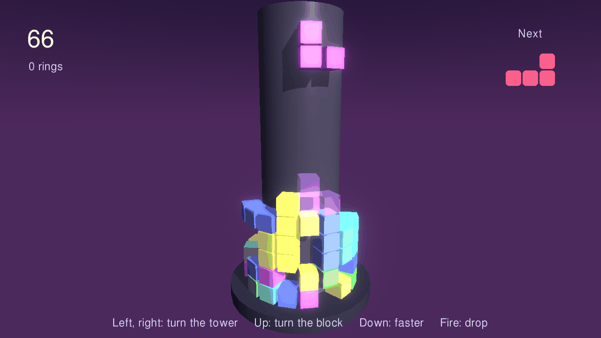
spire/main.as 320 lines
// Blocks fall round a tower, which turns to meet them. A ring that is full all the way round goes.
const int Around = 18;
const int Tall = 15;
class SpireScreen : Screen
{
Font@ font = Assets::font("global:freesans.sfn", 26);
Font@ big = Assets::font("global:freesans.sfn", 56);
Sound@ thud = Assets::sound("global:sound/wall.wav");
Sound@ turnSound = Assets::sound("global:sound/move.wav");
Sound@ clearSound = Assets::sound("global:sound/win.wav");
Sound@ lost = Assets::sound("global:sound/lose.wav");
Sound@ music = Assets::sound("global:music/climb.ogg");
// Each shape as places, across and up: two to five blocks.
array<array<Vec2>> shapes = {
{ Vec2(0, 0), Vec2(1, 0) },
{ Vec2(-1, 0), Vec2(0, 0), Vec2(1, 0) },
{ Vec2(0, 0), Vec2(1, 0), Vec2(0, 1) },
{ Vec2(-1, 0), Vec2(0, 0), Vec2(1, 0), Vec2(-1, 1), Vec2(1, 1) },
{ Vec2(0, 0), Vec2(-1, 0), Vec2(1, 0), Vec2(0, 1), Vec2(0, -1) },
{ Vec2(-1, 0), Vec2(0, 0), Vec2(1, 0), Vec2(1, 1) },
{ Vec2(0, 0), Vec2(1, 0), Vec2(0, 1), Vec2(1, 1) },
{ Vec2(0, 0) }
};
array<int> cells(Around * Tall); // 0 empty, otherwise a colour
array<Entity@> blocks(Around * Tall);
array<Entity@> piece;
array<Entity@> ghost;
array<Vec2> form;
array<Vec2> nextForm;
int color = 1;
int nextColor = 2;
float turned = 0; // of the tower, in columns
int facing = 0; // the column in front
float high = 0; // of the piece
float flash = 0;
array<int> flashing;
int score = 0;
int rings = 0;
bool over = false;
float shake = 0;
void onEnter()
{
music.playMusic(0.5f, 0.8f);
Space::sky(Color(0.05f, 0.04f, 0.14f), Color(0.3f, 0.16f, 0.36f));
Space::sun(Vec3(0.5f, 0.6f, 0.8f), Color(0.95f, 0.9f, 0.85f));
Space::ambient(Color(0.4f, 0.4f, 0.5f), Color(0.26f, 0.2f, 0.28f));
Space::shadows(0.5f, 14);
Space::ground(-0.5f);
Entity@ core = Space::spawn(Vec3(0, float(Tall) * 0.5f - 0.5f, 0));
core.shape(SolidCylinder, Color(0.28f, 0.28f, 0.36f));
core.size = Vec3(4.5f, float(Tall), 4.5f);
core.shine = 0.5f;
Entity@ base = Space::spawn(Vec3(0, -0.9f, 0));
base.shape(SolidCylinder, Color(0.2f, 0.2f, 0.28f));
base.size = Vec3(8.5f, 0.8f, 8.5f);
for (int i = 0; i < Around * Tall; i++)
@blocks[i] = block(Vec3(0, 0, 0));
for (int i = 0; i < 5; i++)
{
piece.insertLast(block(Vec3(0, 0, 0)));
Entity@ g = block(Vec3(0, 0, 0));
g.blend = BlendAdd;
g.shadow = false;
ghost.insertLast(g);
}
start();
}
Entity@ block(const Vec3 &in at)
{
Entity@ e = Space::spawn(at);
e.shape(SolidBox, White);
e.shine = 0.4f;
e.visible = false;
return e;
}
void start()
{
for (int i = 0; i < Around * Tall; i++)
cells[i] = 0;
// Something to begin with: two rings, each with a few gaps.
for (int x = 0; x < Around; x++)
{
cells[x] = x % 5 == 2 ? 0 : 1 + x % 6;
cells[Around + x] = x % 3 == 0 ? 0 : 1 + (x + 2) % 6;
}
score = rings = 0;
over = false;
pick();
take();
}
void pick()
{
nextForm = shapes[uint(randomInt(0, int(shapes.length()) - 1))];
nextColor = randomInt(1, 6);
}
void take()
{
form = nextForm;
color = nextColor;
pick();
high = float(Tall) - 1.5f;
if (hits(form, facing, int(high)))
{
over = true;
lost.play(0.8f);
}
}
int wrap(int x) { return ((x % Around) + Around) % Around; }
bool hits(const array<Vec2> &in f, int column, int row)
{
for (uint i = 0; i < f.length(); i++)
{
int x = wrap(column + int(f[i].x)), y = row + int(f[i].y);
if (y < 0 || (y < Tall && cells[y * Around + x] != 0))
return true;
}
return false;
}
int resting()
{
int y = int(ceil(high));
while (y > -2 && !hits(form, facing, y - 1))
y--;
return y;
}
void update(float dt)
{
shake = clamp(shake - dt * 3, 0, 1);
turned += (float(facing) - turned) * clamp(dt * 14, 0, 1);
if (flash > 0)
{
flash -= dt * 2.5f;
if (flash <= 0)
collapse();
}
else if (over)
{
if (Input::pressed("accept"))
start();
}
else
play(dt);
show();
}
void play(float dt)
{
int row = int(ceil(high));
int way = (Input::repeated("right") ? 1 : 0) - (Input::repeated("left") ? 1 : 0);
if (way != 0 && !hits(form, facing + way, row) && !hits(form, facing + way, int(floor(high))))
{
facing += way;
turnSound.play(0.35f);
}
if (Input::pressed("accept") || Input::pressed("up"))
{
array<Vec2> other;
for (uint i = 0; i < form.length(); i++)
other.insertLast(Vec2(form[i].y, -form[i].x));
// Nudged aside, if there is something in the way.
for (int nudge = 0; nudge < 3; nudge++)
{
int by = nudge == 2 ? -1 : nudge;
if (!hits(other, facing + by, row) && !hits(other, facing + by, int(floor(high))))
{
form = other;
facing += by;
turnSound.play(0.35f, 0, 1.4f);
break;
}
}
}
float speed = 1.4f + float(rings) * 0.12f;
if (Input::held("down"))
speed = 14;
int floorAt = resting();
if (Input::pressed("fire") && !Input::pressed("accept"))
{
score += int(high - float(floorAt));
high = float(floorAt);
shake = 0.6f;
}
else
high -= speed * dt;
if (high <= float(floorAt))
land(floorAt);
}
void land(int row)
{
for (uint i = 0; i < form.length(); i++)
{
int x = wrap(facing + int(form[i].x)), y = row + int(form[i].y);
if (y >= 0 && y < Tall)
cells[y * Around + x] = color;
}
thud.play(0.5f);
score += 5;
flashing.resize(0);
for (int y = 0; y < Tall; y++)
{
int full = 0;
for (int x = 0; x < Around; x++)
full += cells[y * Around + x] != 0 ? 1 : 0;
if (full == Around)
flashing.insertLast(y);
}
if (flashing.length() > 0)
{
flash = 1;
clearSound.play(0.7f);
score += 100 * int(flashing.length() * flashing.length());
rings += int(flashing.length());
}
else
take();
}
void collapse()
{
for (int n = int(flashing.length()) - 1; n >= 0; n--)
{
for (int y = flashing[uint(n)]; y < Tall; y++)
for (int x = 0; x < Around; x++)
cells[y * Around + x] = y + 1 < Tall ? cells[(y + 1) * Around + x] : 0;
for (int i = 0; i < 12; i++)
{
Entity@ spark = Space::spawn(at(i * 2, float(flashing[uint(n)]), 4));
spark.glow(random(0.4f, 1), hsv(random(0, 1), 0.6f, 1));
spark.motion = Vec3(random(-3, 3), random(2, 6), random(0, 4));
spark.gravity = 0.8f;
spark.lifetime = 0.9f;
}
}
flash = 0;
take();
}
// A column of the tower, as it is turned.
Vec3 at(int column, float row, float r = 2.85f)
{
float a = (float(column) - turned) * 6.28319f / float(Around);
return Vec3(sin(a) * r, row, cos(a) * r);
}
void put(Entity@ e, int column, float row, const Color &in tone, float size)
{
e.visible = true;
e.place = at(column, row);
e.angles = Vec3(0, (float(column) - turned) * 360 / float(Around), 0);
e.size = Vec3(0.94f, 0.92f, 1.1f) * size;
e.color = tone;
}
Color tone(int which) { return hsv(0.02f + float(which) * 0.155f, 0.62f, 0.98f); }
void show()
{
for (int y = 0; y < Tall; y++)
{
bool going = flash > 0 && flashing.find(y) >= 0;
for (int x = 0; x < Around; x++)
{
Entity@ e = blocks[uint(y * Around + x)];
int cell = cells[y * Around + x];
e.visible = cell != 0;
if (cell != 0)
{
put(e, x, float(y), going ? White : tone(cell), going ? 0.3f + flash * 0.7f : 1.0f);
e.glowing = going ? 1 : 0;
}
}
}
int floorAt = over || flash > 0 ? 0 : resting();
for (uint i = 0; i < 5; i++)
{
bool on = !over && flash <= 0 && i < form.length();
piece[i].visible = on;
ghost[i].visible = on;
if (on)
{
int x = facing + int(form[i].x);
put(piece[i], x, high + form[i].y, tone(color), 1);
put(ghost[i], x, float(floorAt) + form[i].y, fade(tone(color), 0.35f), 1);
}
}
Space::camera(Vec3(0, 10 + sin(App::time * 40) * shake * 0.2f, 18), Vec3(0, 6.2f, 0), 56);
}
void draw(Canvas@ c)
{
c.designHeight(720);
Space::draw(c);
c.bloom(0.45f, 0.7f);
c.text(big, formatInt(score), 60, 60);
c.text(font, formatInt(rings) + " rings", 62, 130, Color(0.8f, 0.8f, 0.95f));
c.text(font, "Next", c.width - 150, 60, Color(0.8f, 0.8f, 0.95f), AlignCenter);
for (uint i = 0; i < nextForm.length(); i++)
c.roundRect(c.width - 150 - 17 + nextForm[i].x * 36, 150 - nextForm[i].y * 36, 33, 33, 7, tone(nextColor));
if (over)
{
c.roundRect(c.width * 0.5f - 260, 280, 520, 150, 24, Color(0, 0, 0, 0.75f));
c.text(big, "It is full", c.width * 0.5f, 300, White, AlignCenter);
c.text(font, "Accept: again", c.width * 0.5f, 378, Yellow, AlignCenter);
}
c.text(font, "Left, right: turn the tower Up: turn the block Down: faster Fire: drop", c.width * 0.5f, 676, Color(0.8f, 0.8f, 0.95f), AlignCenter);
}
}
Rebound
A ball, two bats and a tunnel
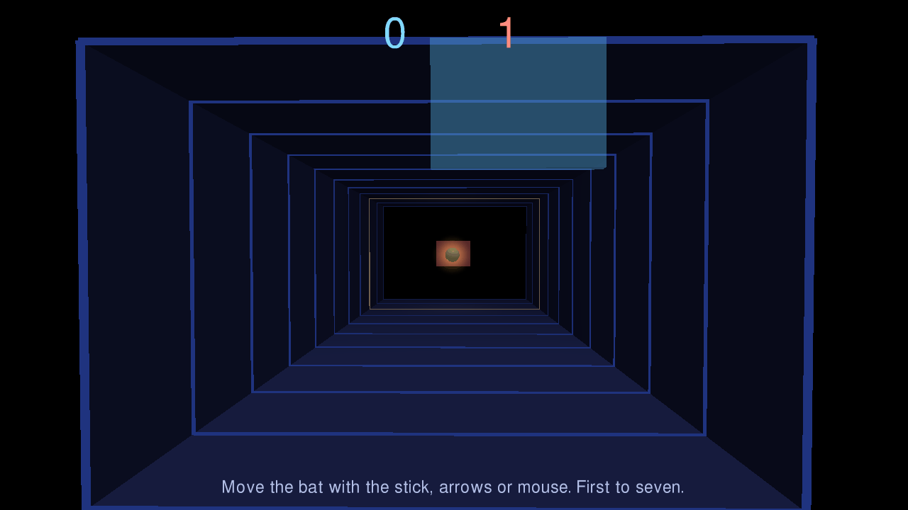
rebound/main.as 183 lines
// A ball goes to and fro along a tunnel. Hit it off centre, or while moving, and it curves.
class ReboundScreen : Screen
{
Font@ font = Assets::font("global:freesans.sfn", 26);
Font@ big = Assets::font("global:freesans.sfn", 64);
Sound@ bat = Assets::sound("global:sound/hit.wav");
Sound@ wall = Assets::sound("global:sound/wall.wav");
Sound@ point = Assets::sound("global:sound/win.wav");
Sound@ miss = Assets::sound("global:sound/lose.wav");
// Half the width, height and length of the tunnel.
Vec3 room(4, 2.6f, 11);
Vec2 half(0.95f, 0.7f);
Entity@ ball;
array<Entity@> bats;
array<Entity@> frames;
Entity@ lamp;
Vec2 mine, theirs, moving, mouseWas;
Vec3 at, going;
Vec2 curve;
array<int> score = { 0, 0 };
float wait = 1;
float flash = 0;
int serve = 1;
bool finished = false;
void onEnter()
{
Space::ambient(Color(0.3f, 0.32f, 0.42f), Color(0.2f, 0.2f, 0.28f));
Space::sun(Vec3(0.2f, 1, 0.5f), Color(0.45f, 0.45f, 0.5f));
Space::fog(Color(0.02f, 0.02f, 0.06f), 14, 40);
Space::shadows(0);
Mesh@ sides = Mesh();
Color dark(0.12f, 0.15f, 0.28f);
Vec3 r = room;
sides.quad(Vec3(-r.x, -r.y, r.z), Vec3(r.x, -r.y, r.z), Vec3(r.x, -r.y, -r.z), Vec3(-r.x, -r.y, -r.z), dark);
sides.quad(Vec3(-r.x, r.y, -r.z), Vec3(r.x, r.y, -r.z), Vec3(r.x, r.y, r.z), Vec3(-r.x, r.y, r.z), dark);
sides.quad(Vec3(-r.x, -r.y, r.z), Vec3(-r.x, -r.y, -r.z), Vec3(-r.x, r.y, -r.z), Vec3(-r.x, r.y, r.z), dark);
sides.quad(Vec3(r.x, -r.y, -r.z), Vec3(r.x, -r.y, r.z), Vec3(r.x, r.y, r.z), Vec3(r.x, r.y, -r.z), dark);
Space::spawn(Vec3(0, 0, 0)).mesh(sides);
// Frames along it; the one the ball is in lights up.
for (int i = 0; i <= 10; i++)
{
Mesh@ frame = Mesh();
float t = 0.06f;
frame.box(Vec3(0, -r.y, 0), Vec3(r.x * 2, t, t));
frame.box(Vec3(0, r.y, 0), Vec3(r.x * 2, t, t));
frame.box(Vec3(-r.x, 0, 0), Vec3(t, r.y * 2, t));
frame.box(Vec3(r.x, 0, 0), Vec3(t, r.y * 2, t));
Entity@ e = Space::spawn(Vec3(0, 0, r.z - float(i) * r.z * 0.2f));
e.mesh(frame, Blue);
e.glowing = 1;
frames.insertLast(e);
}
@ball = Space::spawn(Vec3(0, 0, 0));
ball.shape(SolidSphere, Color(1, 0.9f, 0.5f));
ball.size = Vec3(0.7f, 0.7f, 0.7f);
ball.glowing = 0.4f;
ball.shine = 1;
@lamp = Space::spawn(Vec3(0, 0, 0));
lamp.glow(2.2f, Color(1, 0.7f, 0.3f, 0.5f));
for (int i = 0; i < 2; i++)
{
Entity@ e = Space::spawn(Vec3(0, 0, i == 0 ? r.z : -r.z));
e.shape(SolidBox, i == 0 ? Color(0.4f, 0.8f, 1, 0.45f) : Color(1, 0.45f, 0.4f, 0.8f));
e.size = Vec3(half.x * 2, half.y * 2, 0.15f);
e.blend = BlendAlpha;
e.glowing = 0.6f;
bats.insertLast(e);
}
begin();
}
void begin()
{
at = Vec3(0, 0, 0);
going = Vec3(random(-2, 2), random(-1.5f, 1.5f), float(serve) * 9);
curve = Vec2(0, 0);
wait = 1;
}
void update(float dt)
{
Vec2 before = mine;
mine += Vec2(Input::move.x, -Input::move.y) * 8 * dt;
Vec2 mouse = Input::mouse;
if (Input::hasMouse && mouse != mouseWas)
mine = Vec2((mouse.x - 640) / 100, (360 - mouse.y) / 100);
mouseWas = mouse;
mine = Vec2(clamp(mine.x, -room.x + half.x, room.x - half.x), clamp(mine.y, -room.y + half.y, room.y - half.y));
moving = (mine - before) / dt;
if (finished)
{
if (Input::pressed("accept"))
{
score = { 0, 0 };
finished = false;
begin();
}
return;
}
// The other one follows, not quite fast enough.
Vec2 wanted = going.z < 0 ? Vec2(at.x, at.y) : Vec2(0, 0);
float quick = (3.6f + float(score[0]) * 0.25f) * dt;
theirs += Vec2(clamp(wanted.x - theirs.x, -quick, quick), clamp(wanted.y - theirs.y, -quick, quick));
wait -= dt;
if (wait < 0)
{
going += Vec3(curve.x, curve.y, 0) * dt;
at += going * dt;
float r = 0.35f;
if ((at.x > room.x - r && going.x > 0) || (at.x < -room.x + r && going.x < 0))
{
going.x = -going.x;
curve.x = -curve.x * 0.5f;
wall.play(0.4f, at.x / room.x);
}
if ((at.y > room.y - r && going.y > 0) || (at.y < -room.y + r && going.y < 0))
{
going.y = -going.y;
curve.y = -curve.y * 0.5f;
wall.play(0.4f, at.x / room.x);
}
if (at.z > room.z - 0.4f && going.z > 0)
meet(mine, moving, 0);
else if (at.z < -room.z + 0.4f && going.z < 0)
meet(theirs, Vec2(random(-3, 3), random(-3, 3)), 1);
}
flash = clamp(flash - dt * 2, 0, 1);
ball.place = at;
ball.turn(Vec3(1, 0.4f, 0), going.z * 30 * dt);
lamp.place = at;
lamp.light(Color(1.4f, 1, 0.5f), 5);
bats[0].place = Vec3(mine.x, mine.y, room.z);
bats[1].place = Vec3(theirs.x, theirs.y, -room.z);
for (uint i = 0; i < frames.length(); i++)
{
float near = clamp(1 - abs(frames[i].place.z - at.z) / 1.6f, 0, 1);
frames[i].color = lerp(Color(0.12f, 0.2f, 0.5f), Color(1, 0.8f, 0.4f), near);
}
Space::camera(Vec3(mine.x * 0.18f, mine.y * 0.18f, room.z + 5.4f), Vec3(0, 0, -4), 55);
}
void meet(const Vec2 &in where, const Vec2 &in speed, int side)
{
Vec2 off(at.x - where.x, at.y - where.y);
if (abs(off.x) < half.x + 0.3f && abs(off.y) < half.y + 0.3f)
{
going.z = -going.z * 1.035f;
going.x += off.x * 2.4f;
going.y += off.y * 2.4f;
curve = Vec2(clamp(-speed.x * 0.8f, -7, 7), clamp(-speed.y * 0.8f, -7, 7));
bat.play(0.7f, at.x / room.x);
flash = 1;
return;
}
if (abs(at.z) < room.z + 1)
return;
score[uint(1 - side)]++;
(side == 0 ? miss : point).play(0.7f);
serve = side == 0 ? -1 : 1;
finished = score[uint(1 - side)] >= 7;
begin();
}
void draw(Canvas@ c)
{
c.design(1280, 720);
Space::draw(c);
c.bloom(0.5f, 0.7f);
c.text(big, formatInt(score[0]), 560, 20, Color(0.5f, 0.85f, 1), AlignCenter);
c.text(big, formatInt(score[1]), 720, 20, Color(1, 0.55f, 0.5f), AlignCenter);
if (finished)
{
c.roundRect(390, 290, 500, 130, 24, Color(0, 0, 0, 0.75f));
c.text(big, score[0] > score[1] ? "You win" : "You lose", 640, 296, White, AlignCenter);
c.text(font, "Accept: again", 640, 378, Yellow, AlignCenter);
}
c.text(font, "Move the bat with the stick, arrows or mouse. First to seven.", 640, 676, Color(0.7f, 0.75f, 0.9f), AlignCenter);
}
}
Skimmer
A race through gates over land without end

skim/main.as 412 lines
// A race. The land streams in ahead and goes behind; the way through it is worked out from a number, so it
// is the same for everyone. Three others race, and a second player may, with a gamepad of their own.
const int Gates = 30;
const float Between = 62;
const float Sea = 11.5f; // how high the ponds stand
Sound@ chime = Assets::sound("global:sound/gate.wav");
Sound@ bump = Assets::sound("global:sound/hit.wav");
// Where the way goes: along -z, from side to side.
float wayX(float z) { return sin(z * 0.011f) * 34 + sin(z * 0.0047f + 1.3f) * 46 + sin(z * 0.023f + 0.4f) * 9; }
Vec3 gateAt(int i)
{
float z = -float(i + 1) * Between;
float x = wayX(z);
float y = Space::height(x, z);
return Vec3(x, (y > Sea ? y : Sea) + 4.4f, z);
}
class Racer
{
Entity@ e;
Entity@ jet;
string name;
Color color;
Vec3 at, speed;
float yaw = 0, bank = 0, climb = 0, nose = 0;
float boost = 1;
bool boosting = false;
int gate = 0;
float done = 0; // seconds it took, when it has
bool human = false;
int pad = -1; // whose
float skill = 1;
float stuck = 0;
Voice engine;
Vec3 eye, look; // of their camera
float flash = 0;
Vec2 mark; // where their gate is on the screen
bool marked = false;
// How far along, to see who is ahead.
float along() { return done > 0 ? 100000 - done : float(gate) * Between + (Between - (gateAt(gate) - at).length()); }
}
class SkimScreen : Screen
{
Font@ font = Assets::font("global:freesans.sfn", 24);
Font@ big = Assets::font("global:freesans.sfn", 64);
Model@ skimmer = Assets::model("global:model/skimmer.glb");
Model@ gateModel = Assets::model("global:model/gate.glb");
Model@ pine = Assets::model("global:model/pine.glb");
Model@ oak = Assets::model("global:model/oak.glb");
Model@ rock = Assets::model("global:model/rock.glb");
Sound@ engine = Assets::sound("global:sound/engine.wav");
Sound@ rush = Assets::sound("global:sound/boost.wav");
Sound@ beep = Assets::sound("global:sound/move.wav");
Sound@ splash = Assets::sound("global:sound/splash.wav");
Sound@ music = Assets::sound("global:music/climb.ogg");
array<Racer@> racers;
array<Entity@> gates;
float clock = -3.5f;
int counted = 4;
bool two = false;
bool over = false;
void onEnter()
{
Scene::load("asset:scene.json");
music.playMusic(0.35f, 1);
Space::endlessLand(1234, 2.5f, 26, 0.35f, App::platform == "Original Xbox" ? 2 : 4);
Space::landColors(Color(0.8f, 0.72f, 0.5f), Color(0.36f, 0.52f, 0.26f), Color(0.6f, 0.58f, 0.55f), Color(0.46f, 0.41f, 0.36f), Sea + 0.9f, 20);
Space::water(Sea, Color(0.16f, 0.42f, 0.55f, 0.82f));
Space::sky(Color(0.25f, 0.4f, 0.75f), Color(0.95f, 0.75f, 0.6f));
Space::fog(Color(0.92f, 0.76f, 0.66f), 90, 290);
Space::sun(Vec3(0.5f, 0.45f, -0.6f), Color(1, 0.82f, 0.62f));
Space::ambient(Color(0.42f, 0.44f, 0.55f), Color(0.26f, 0.22f, 0.2f));
Space::farthest(360);
Space::shadows(0.6f, 45);
two = Input::padConnected(1);
array<Color> colors = { Color(1, 0.55f, 0.2f), Color(0.3f, 0.7f, 1), Color(0.55f, 0.95f, 0.4f), Color(0.95f, 0.4f, 0.75f) };
array<string> names = { "You", "Isla", "Bram", "Juno" };
for (int i = 0; i < 4; i++)
{
Racer@ r = Racer();
r.name = i == 1 && two ? "Two" : names[uint(i)];
r.color = colors[uint(i)];
r.human = i == 0 || (i == 1 && two);
r.pad = i;
r.skill = 0.86f + float(i) * 0.03f;
r.at = Vec3(wayX(0) + (float(i) - 1.5f) * 6, 6, 0);
r.at.y = level(r.at) + 1.4f;
@r.e = Space::spawn(r.at);
r.e.model(skimmer);
r.e.color = r.color;
r.e.shine = 0.8f;
r.e.sphere(1.3f, 1);
@r.jet = Space::spawn(Vec3(0, -0.02f, -1.6f));
r.jet.attach(r.e);
r.jet.angles = Vec3(-90, 0, 0);
r.jet.emit("jet", 40);
r.engine = r.e.sound(engine, i == 0 ? 0.35f : 0.5f, 70);
r.eye = r.at + Vec3(0, 4, 10);
r.look = r.at;
racers.insertLast(r);
}
for (int i = 0; i < Gates; i++)
{
Entity@ g = Space::spawn(Vec3(0, -100, 0));
g.model(gateModel);
g.visible = false;
gates.insertLast(g);
}
}
float level(const Vec3 &in p)
{
float y = Space::height(p.x, p.z);
return y > Sea + 0.2f ? y : Sea + 0.2f; // over water too
}
float chance(int x, int z, int n)
{
float v = sin(float(x) * 12.9898f + float(z) * 78.233f + float(n) * 37.719f) * 43758.5453f;
return v - floor(v);
}
void fill(int x, int z)
{
float size = Space::regionSize;
for (int n = 0; n < 11; n++)
{
float px = (float(x) + chance(x, z, n)) * size, pz = (float(z) + chance(x, z, n + 50)) * size;
float y = Space::height(px, pz);
// The way is kept clear.
if (y < Sea + 0.8f || abs(px - wayX(pz)) < 17 || Space::normal(px, pz).y < 0.75f)
continue;
Entity@ e = Space::spawn(Vec3(px, y, pz));
bool stone = n % 4 == 0;
e.model(stone ? rock : y > 11 ? pine : oak);
float big2 = stone ? 1 + chance(x, z, n + 90) * 2 : 1 + chance(x, z, n + 90) * 0.8f;
e.size = Vec3(big2, big2, big2);
e.angles = Vec3(0, chance(x, z, n + 130) * 360, 0);
e.streamed = true;
if (stone)
e.sphere(0.9f, 2);
else
e.capsule(0.45f, 6, 2);
e.colliderAt = Vec3(0, stone ? 0.3f : 2.0f, 0);
}
}
void update(float dt)
{
int x, z;
bool arrived;
while (Space::nextRegion(x, z, arrived))
if (arrived)
fill(x, z);
clock += dt;
int count = int(ceil(-clock));
if (clock < 0 && count < counted)
{
counted = count;
beep.play(0.6f);
}
else if (clock >= 0 && counted > 0)
{
counted = 0;
chime.play(0.8f, 0, 1.4f);
}
for (uint i = 0; i < racers.length(); i++)
race(racers[i], dt);
// Gates light up for whoever is nearest to them.
for (int i = 0; i < Gates; i++)
{
bool near = false;
for (uint n = 0; n < racers.length(); n++)
if (racers[n].human && i >= racers[n].gate && i < racers[n].gate + 5)
near = true;
gates[uint(i)].visible = near;
if (near)
{
Vec3 p = gateAt(i);
gates[uint(i)].place = p;
Vec3 to = gateAt(i + 1 < Gates ? i + 1 : i) - (i > 0 ? gateAt(i - 1) : Vec3(wayX(0), p.y, 0));
gates[uint(i)].face(to);
gates[uint(i)].color = i == racers[0].gate ? Color(1, 0.85f, 0.3f) : Color(0.35f, 0.7f, 1);
}
}
if (racers[0].done > 0 && !over && (!two || racers[1].done > 0))
over = true;
if (over && Input::pressed("accept"))
Screens::replace("skim");
}
void race(Racer@ r, float dt)
{
// What is asked of it.
float turn = 0, thrust = 0;
bool fast = false;
Vec3 target = gateAt(r.gate < Gates ? r.gate : Gates - 1) + (r.gate >= Gates ? Vec3(0, 0, -200) : Vec3());
if (clock > 0)
{
Vec3 to = target - r.at;
// Each rival has a line of its own.
if (!r.human)
to.x += (float(r.pad) - 2) * 2.6f;
float off = atan2(-to.x, -to.z) - r.yaw;
while (off > 3.14159f) off -= 6.28319f;
while (off < -3.14159f) off += 6.28319f;
if (r.human && r.done == 0)
{
Vec2 stick = r.pad == 0 ? Input::move : Vec2(Input::padLeft(1).x, -Input::padLeft(1).y);
// With the stick let go, it keeps to the way by itself.
turn = abs(stick.x) > 0.12f ? -stick.x : clamp(off * 2, -0.7f, 0.7f);
thrust = clamp(0.75f - stick.y * 0.5f, 0, 1);
fast = r.pad == 0 ? Input::held("fire") || Input::held("accept") : Input::padButton(1, 8);
}
else
{
turn = clamp(off * 2.6f, -1, 1);
// Those far behind try harder, and those far ahead take it easier.
float gap = clamp((racers[0].along() - r.along()) * 0.0018f, -0.1f, 0.16f);
thrust = clamp(r.skill + gap - abs(turn) * 0.18f, 0.3f, 1.15f);
fast = abs(off) < 0.15f && r.boost > 0.9f && r.skill > 0.9f;
if (r.boosting)
fast = r.boost > 0.1f;
}
}
if (fast && r.boost > 0.05f)
{
if (!r.boosting)
rush.playAt(r.at, 0.6f, 60);
r.boosting = true;
}
else
r.boosting = false;
r.boost = clamp(r.boost + (r.boosting ? -dt * 0.55f : dt * 0.16f), 0, 1);
r.yaw += turn * 1.35f * dt;
r.bank += (turn - r.bank) * clamp(dt * 6, 0, 1);
Vec3 ahead(-sin(r.yaw), 0, -cos(r.yaw));
float top = (r.boosting ? 62.0f : 43.0f) * thrust;
Vec3 flat(r.speed.x, 0, r.speed.z);
// It slides a little before it goes where it points.
flat = lerp(flat, ahead * top, clamp(dt * (clock > 0 ? 1.9f : 4.0f), 0, 1));
// On a cushion of air.
float under = level(r.at), aheadLevel = level(r.at + flat * 0.22f);
float wantedY = (under > aheadLevel ? under : aheadLevel) + 1.5f + sin(App::time * 2 + float(r.pad)) * 0.12f;
r.climb += ((wantedY - r.at.y) * 26 - r.climb * 7) * dt;
r.speed = Vec3(flat.x, r.climb, flat.z);
r.at += r.speed * dt;
if (r.at.y < under + 0.5f)
{
r.at.y = under + 0.5f;
r.climb = r.climb < 0 ? 0.0f : r.climb;
}
// They keep apart.
for (uint i = 0; i < racers.length(); i++)
{
Vec3 gap = r.at - racers[i].at;
float far = gap.length();
if (racers[i] !is r && far < 5 && far > 0.01f)
r.at += gap * ((5 - far) / far * clamp(dt * 3, 0, 1));
}
// Trees and rocks.
array<Entity@>@ met = Space::within(r.at, 1.2f, 1 << 2);
r.stuck -= dt;
if (met.length() > 0)
{
Vec3 away = r.at - met[0].place;
away.y = 0;
away = away.normalized();
r.speed = away * 16;
r.at += away * 0.6f;
if (r.stuck < 0)
{
bump.playAt(r.at, 0.7f, 50);
Space::burst("spark", r.at, 24);
r.stuck = 0.4f;
}
}
r.nose += (clamp(r.climb * 1.6f, -24, 24) - r.nose) * clamp(dt * 5, 0, 1);
r.e.place = r.at;
r.e.angles = Vec3(-r.nose, r.yaw * 57.2958f + 180, r.bank * -34);
float going = flat.length();
r.jet.emit(r.boosting ? "burn" : "jet", clock > 0 ? 20 + going : 10);
r.engine.pitch = 0.7f + going * 0.018f + (r.boosting ? 0.25f : 0.0f);
if (under <= Sea + 0.25f && going > 8)
Space::burst("spray", Vec3(r.at.x, Sea + 0.1f, r.at.z) - ahead * 1.2f, 2);
else if (going > 20)
Space::burst("dust", Vec3(r.at.x, under + 0.1f, r.at.z) - ahead * 1.6f, 1);
// Through a gate, or past it.
r.flash = clamp(r.flash - dt * 2, 0, 1);
if (r.gate < Gates && r.done == 0)
{
Vec3 to = target - r.at;
bool passed = r.at.z < target.z;
if (passed || to.length() < 4)
{
bool through = Vec3(to.x, to.y * 0.5f, 0).length() < 5.4f;
if (through)
{
r.boost = clamp(r.boost + 0.22f, 0, 1);
r.flash = 1;
if (r.human)
chime.play(0.6f, 0, 1 + float(r.gate % 8) * 0.06f);
Space::burst("spark", target, 30);
}
else if (r.human)
r.speed = r.speed * 0.55f; // missing one costs
r.gate++;
if (r.gate == Gates)
r.done = clock;
}
}
// Their camera, a little behind.
Vec3 wantedEye = r.at - ahead * (9 - going * 0.02f) + Vec3(0, 3.4f, 0);
float least = level(wantedEye) + 1;
wantedEye.y = wantedEye.y < least ? least : wantedEye.y;
r.eye = lerp(r.eye, wantedEye, clamp(dt * 6, 0, 1));
r.look = lerp(r.look, r.at + ahead * 9 + Vec3(0, 0.6f, 0), clamp(dt * 9, 0, 1));
if (r.pad == 0)
Space::camera(r.eye, r.look, 62 + going * 0.22f);
}
int place(Racer@ r)
{
int ahead = 1;
for (uint i = 0; i < racers.length(); i++)
if (racers[i] !is r && racers[i].along() > r.along())
ahead++;
return ahead;
}
void view(Canvas@ c, Racer@ r, float x, float w)
{
Space::camera(r.eye, r.look, 62 + Vec3(r.speed.x, 0, r.speed.z).length() * 0.22f);
Space::draw(c, x, 0, w, 720);
Vec3 g = gateAt(r.gate < Gates ? r.gate : Gates - 1);
r.marked = r.gate < Gates && Space::toScreen(g, r.mark) && (g - r.at).length() > 16;
}
void readings(Canvas@ c, Racer@ r, float x, float w)
{
int at = place(r);
c.text(big, formatInt(at), x + 46, 28, r.color);
c.text(font, at == 1 ? "st" : at == 2 ? "nd" : at == 3 ? "rd" : "th", x + 90, 40, r.color);
c.text(font, "Gate " + formatInt(r.gate) + " of " + formatInt(Gates), x + 46, 104);
c.roundRect(x + 46, 640, 240, 18, 9, Color(0, 0, 0, 0.45f));
c.roundRect(x + 48, 642, 10 + 226 * r.boost, 14, 7, r.boosting ? Color(1, 0.6f, 0.2f) : Color(0.35f, 0.8f, 1));
c.text(font, formatInt(int(Vec3(r.speed.x, 0, r.speed.z).length() * 3.6f)) + " km/h", x + 300, 632);
if (r.marked)
{
c.ring(r.mark.x, r.mark.y, 16, 2, Color(1, 0.85f, 0.3f, 0.8f));
c.text(font, formatInt(int((gateAt(r.gate) - r.at).length())), r.mark.x, r.mark.y + 20, Color(1, 0.85f, 0.3f, 0.9f), AlignCenter);
}
if (r.flash > 0)
c.rect(x, 0, w, 720, Color(1, 0.9f, 0.5f, r.flash * 0.12f));
}
void draw(Canvas@ c)
{
c.designHeight(720);
if (two)
{
view(c, racers[0], 0, c.width * 0.5f - 2);
view(c, racers[1], c.width * 0.5f + 2, c.width * 0.5f - 2);
c.bloom(0.45f, 0.85f);
readings(c, racers[0], 0, c.width * 0.5f - 2);
readings(c, racers[1], c.width * 0.5f + 2, c.width * 0.5f - 2);
c.rect(c.width * 0.5f - 2, 0, 4, 720, Black);
}
else
{
view(c, racers[0], 0, c.width);
c.bloom(0.45f, 0.85f);
readings(c, racers[0], 0, c.width);
}
float t = racers[0].done > 0 ? racers[0].done : clock > 0 ? clock : 0.0f;
int tenths = int(t * 10) % 10;
c.text(font, formatInt(int(t) / 60) + ":" + (int(t) % 60 < 10 ? "0" : "") + formatInt(int(t) % 60) + "." + formatInt(tenths), c.width - 46, 34, White, AlignRight);
for (uint i = 0; i < racers.length(); i++)
{
// How far along everyone is.
float part = clamp(float(racers[i].gate) / float(Gates), 0, 1);
c.circle(c.width - 46 - (1 - part) * 260, 84, racers[i].human ? 9 : 6, racers[i].color);
}
c.rect(c.width - 306, 83, 260, 2, Color(1, 1, 1, 0.3f));
if (clock < 0)
c.text(big, formatInt(int(ceil(-clock)) > 3 ? 3 : int(ceil(-clock))), c.width * 0.5f, 200, White, AlignCenter);
else if (clock < 1)
c.text(big, "Go!", c.width * 0.5f, 200, Color(1, 0.9f, 0.4f, 1 - clock), AlignCenter);
if (over)
{
c.roundRect(c.width * 0.5f - 250, 220, 500, 280, 24, Color(0, 0, 0, 0.72f));
for (uint i = 0; i < racers.length(); i++)
{
int at = place(racers[i]);
c.text(font, formatInt(at) + " " + racers[i].name, c.width * 0.5f - 200, 250 + float(at - 1) * 46, racers[i].color);
c.text(font, racers[i].done > 0 ? formatFloat(racers[i].done, "", 0, 1) : "still going", c.width * 0.5f + 200, 250 + float(at - 1) * 46, White, AlignRight);
}
c.text(font, "Accept: again", c.width * 0.5f, 450, Yellow, AlignCenter);
}
else if (clock < 4)
c.text(font, "Left, right: steer Up, down: faster, slower Fire: boost", c.width * 0.5f, 676, White, AlignCenter);
}
}
Sound
Sounds
Pads, pitch, panning and many voices

sounds/main.as 101 lines
// Sixteen pads. Where a pad is decides its panning, and holding the second button lowers its pitch.
class SoundsScreen : Screen
{
Font@ font = Assets::font("global:freesans.sfn", 22);
Font@ big = Assets::font("global:freesans.sfn", 40);
array<string> names = { "kick", "snare", "hat", "bell", "pluck", "pop", "hit", "wall",
"coin", "boom", "whoosh", "win", "lose", "move", "accept", "back" };
array<Sound@> sounds;
array<Tween> flashes(16);
uint chosen = 0;
bool beat = false;
uint beatStep = 0;
array<float> levels(90);
uint at = 0;
SoundsScreen()
{
for (uint i = 0; i < names.length(); i++)
sounds.insertLast(Assets::sound("global:sound/" + names[i] + ".wav"));
}
void onEnter() { start(Coroutine(this.drums)); }
void hit(uint pad, float volume)
{
float pan = (float(pad % 4) - 1.5f) / 1.5f;
float pitch = Input::held("alternate") ? 0.6f : 1.0f;
sounds[pad].play(volume, pan, pitch);
flashes[pad] = Tween(1, 0, 0.35f, EaseOut);
}
// A drum machine: a coroutine that plays and waits.
void drums()
{
while (true)
{
if (beat)
{
uint s = beatStep % 16;
if (s == 0 || s == 6 || s == 8 || s == 14) hit(0, 0.9f);
if (s == 4 || s == 12) hit(1, 0.7f);
if (s % 2 == 0) hit(2, 0.4f);
if (s == 3 || s == 10) hit(4, 0.5f);
beatStep++;
}
wait(0.125f);
}
}
void update(float dt)
{
uint column = chosen % 4, row = chosen / 4;
if (Input::repeated("left") && column > 0) chosen--;
if (Input::repeated("right") && column < 3) chosen++;
if (Input::repeated("up") && row > 0) chosen -= 4;
if (Input::repeated("down") && row < 3) chosen += 4;
if (Input::pressed("accept")) hit(chosen, 1);
if (Input::pressed("cancel"))
{
beat = !beat;
beatStep = 0;
}
levels[at] = Audio::level;
at = (at + 1) % levels.length();
}
void draw(Canvas@ c)
{
c.design(1280, 720);
c.gradient(0, 0, 1280, 720, Color(0.1f, 0.06f, 0.12f), Color(0.03f, 0.03f, 0.06f));
for (uint i = 0; i < 16; i++)
{
float x = 50 + float(i % 4) * 175, y = 50 + float(i / 4) * 145;
Color color = hsv(float(i) / 16, 0.65f, 0.95f);
float f = flashes[i].value;
if (i == chosen) c.roundRect(x - 5, y - 5, 170, 140, 18, White);
c.roundRect(x, y, 160, 130, 14, Color(0.12f + color.r * f * 0.8f, 0.13f + color.g * f * 0.8f, 0.18f + color.b * f * 0.8f));
c.roundRect(x + 14, y + 14, 40, 8, 4, color);
c.text(font, names[i], x + 80, y + 54, White, AlignCenter);
}
c.roundRect(780, 50, 450, 130, 14, Color(0.09f, 0.09f, 0.15f));
c.text(big, formatInt(Audio::voices) + " of " + formatInt(Audio::voiceLimit), 1005, 66, Green, AlignCenter);
c.text(font, "voices, through " + Audio::output, 1005, 128, Gray, AlignCenter);
c.roundRect(780, 200, 450, 150, 14, Color(0.09f, 0.09f, 0.15f));
for (uint i = 0; i + 1 < levels.length(); i++)
{
float a = levels[(at + i) % levels.length()] * 120;
c.rect(800 + float(i) * 4.6f, 335 - a, 4, a + 1, Orange);
}
c.roundRect(780, 370, 450, 150, 14, Color(0.09f, 0.09f, 0.15f));
for (uint i = 0; i < 100; i++)
c.line(800 + float(i) * 4.1f, 445 + Audio::wave(i * 5) * 70, 804 + float(i) * 4.1f, 445 + Audio::wave(i * 5 + 5) * 70, 2, Blue);
c.text(font, Input::buttons("accept") + " or " + Input::keys("accept") + ": play", 790, 550, Yellow);
c.text(font, "Hold " + Input::buttons("alternate") + " or " + Input::keys("alternate") + ": lower", 790, 584, Yellow);
c.text(font, Input::buttons("cancel") + " or " + Input::keys("cancel") + ": drum machine " + (beat ? "off" : "on"), 790, 618, Yellow);
}
}
Music
A tune, and what it looks like

music/main.as 93 lines
// Music is decoded as it plays. The bars are its spectrum and the circle is its wave.
class MusicScreen : Screen
{
Font@ font = Assets::font("global:freesans.sfn", 24);
Font@ big = Assets::font("global:freesans.sfn", 46);
array<string> titles = { "Night Shift", "Slow Light" };
array<Sound@> tunes = { Assets::sound("asset:tune.ogg"), Assets::sound("asset:ambient.mp3") };
uint playing = 0;
Voice voice;
bool paused = false;
array<float> peaks(32);
float beat = 0;
float turn = 0;
void onEnter() { voice = tunes[0].playMusic(0.9f, 0.5f); }
void update(float dt)
{
if (Input::pressed("left") || Input::pressed("right"))
{
// Crossfade.
voice.stop(1.2f);
playing = 1 - playing;
voice = tunes[playing].playMusic(0.9f, 1.2f);
paused = false;
}
if (Input::pressed("accept"))
{
paused = !paused;
voice.paused = paused;
}
float low = 0;
for (uint i = 0; i < 4; i++) low += Audio::spectrum(i) / 4;
beat = low > beat ? low : beat * 0.92f;
turn += dt * (6 + beat * 40);
for (uint i = 0; i < 32; i++)
{
float now = Audio::spectrum(i);
peaks[i] = now > peaks[i] ? now : peaks[i] - dt * 0.35f;
}
}
void draw(Canvas@ c)
{
c.design(1280, 720);
c.gradient(0, 0, 1280, 720, Color(0.02f, 0.02f, 0.06f), Color(0.1f, 0.03f, 0.16f));
// Rings that swell with the low notes.
c.blend = BlendAdd;
for (int i = 4; i > 0; i--)
c.circle(640, 290, 120 + float(i) * 34 * (0.4f + beat), fade(hsv(0.6f + float(i) * 0.06f, 0.8f, 0.7f), 0.10f + beat * 0.08f));
c.blend = BlendAlpha;
c.push();
c.translate(640, 290);
c.rotate(turn);
float lastX = 0, lastY = 0;
for (uint i = 0; i <= 128; i++)
{
float a = float(i % 128) / 128 * 6.28318f;
// Faded at the ends so the circle joins up.
float ends = sin(float(i % 128) / 128 * 3.14159f);
float r = 150 + Audio::wave((i % 128) * 4) * 110 * ends + beat * 20;
float x = cos(a) * r, y = sin(a) * r;
if (i > 0) c.line(lastX, lastY, x, y, 4, hsv(0.5f + float(i) / 256, 0.6f, 1));
lastX = x;
lastY = y;
}
c.pop();
for (uint i = 0; i < 32; i++)
{
float x = 80 + float(i) * 35;
float h = Audio::spectrum(i) * 190;
Color color = hsv(0.52f + float(i) * 0.012f, 0.75f, 1);
c.gradient(x, 600 - h, 28, h + 2, color, fade(color, 0.35f));
c.rect(x, 600 - peaks[i] * 190 - 6, 28, 4, White);
c.gradient(x, 604, 28, h * 0.25f, fade(color, 0.25f), fade(color, 0));
}
c.text(big, titles[playing], 60, 30);
float length = tunes[playing].seconds;
c.text(font, clock(voice.position) + (length > 0 ? " / " + clock(length) : "") + (paused ? " paused" : ""), 62, 90, Color(0.7f, 0.75f, 0.9f));
c.text(font, Input::usingPad ? "Left and right: change tune A: pause" : "Left and right: change tune Enter: pause", 640, 672, Color(0.7f, 0.75f, 0.9f), AlignCenter);
}
string clock(float t)
{
int s = int(t);
return formatInt(s / 60) + ":" + formatInt(s % 60, "0", 2);
}
}
Scene
Physics
Stacks, chains, a seesaw and a wrecking ball
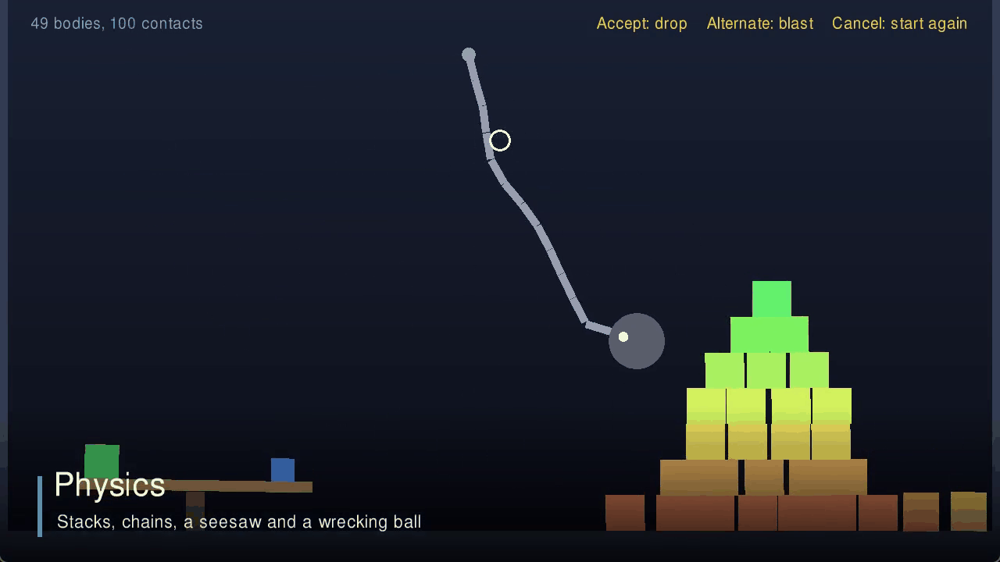
physics/main.as 111 lines
// Rigid bodies: give a collider some mass and the engine does the rest.
class PhysicsScreen : Screen
{
Font@ font = Assets::font("global:freesans.sfn", 22);
Sound@ pop = Assets::sound("global:sound/pop.wav");
Sound@ boom = Assets::sound("global:sound/boom.wav");
Vec2 cursor(640, 180);
Vec2 lastMouse;
Entity@ ball;
void onEnter()
{
Scene::gravity = Vec2(0, 1400);
block(640, 700, 1280, 40, 0, Color(0.2f, 0.24f, 0.32f)).wall = true;
block(-10, 360, 40, 760, 0, Color(0.2f, 0.24f, 0.32f)).wall = true;
block(1290, 360, 40, 760, 0, Color(0.2f, 0.24f, 0.32f)).wall = true;
// A pyramid.
for (int row = 0; row < 7; row++)
for (int i = 0; i < 7 - row; i++)
block(800 + float(i) * 54 + float(row) * 27, 656 - float(row) * 48, 50, 46, 1, hsv(0.05f + float(row) * 0.05f, 0.6f, 0.95f));
// A wrecking ball on a chain.
Entity@ before = null;
for (int i = 0; i < 12; i++)
{
Entity@ link = block(583 - float(i) * 34, 70, 34, 10, 1.5f, Color(0.6f, 0.64f, 0.7f));
Scene::join(link, before, Vec2(600 - float(i) * 34, 70));
@before = link;
}
@ball = round(600 - 12 * 34 - 32, 70, 36, 12, Color(0.35f, 0.37f, 0.42f));
ball.bounce = 0.1f;
Scene::join(ball, before, Vec2(600 - 12 * 34, 70));
// A seesaw with something on each end.
Entity@ post = block(250, 655, 24, 50, 0, Color(0.4f, 0.34f, 0.3f));
post.wall = true;
Entity@ plank = block(250, 622, 300, 14, 2, Color(0.75f, 0.6f, 0.4f));
Scene::join(plank, null, Vec2(250, 622));
block(130, 590, 44, 44, 1, Green);
block(370, 590, 30, 30, 0.6f, Blue);
}
Entity@ block(float x, float y, float w, float h, float mass, const Color &in color)
{
Entity@ e = Scene::spawn(Vec2(x, y));
e.rect(w, h, color);
e.box(w, h);
if (mass > 0)
{
e.gravity = 1;
e.mass = mass;
e.friction = 0.6f;
}
return e;
}
Entity@ round(float x, float y, float r, float mass, const Color &in color)
{
Entity@ e = Scene::spawn(Vec2(x, y));
e.disc(r, color);
e.circle(r);
e.gravity = 1;
e.mass = mass;
e.bounce = 0.4f;
Entity@ spot = Scene::spawn(Vec2(r * 0.5f, 0)); // so that turning shows
spot.disc(r * 0.18f, White);
spot.attach(e);
spot.layer = 1;
return e;
}
void update(float dt)
{
cursor += Input::move * 600 * dt;
Vec2 mouse = Input::mouse;
if (Input::hasMouse && mouse != lastMouse) cursor = mouse;
lastMouse = mouse;
cursor = Vec2(clamp(cursor.x, 40, 1240), clamp(cursor.y, 20, 660));
if (Input::repeated("accept") && Scene::count < 260)
{
pop.play(0.4f, (cursor.x - 640) / 640, random(0.8f, 1.3f));
if (random() < 0.5f) round(cursor.x, cursor.y, random(14, 30), 1, hsv(random(), 0.6f, 1));
else block(cursor.x, cursor.y, random(26, 64), random(26, 64), 1, hsv(random(), 0.5f, 0.95f)).rotation = random(0, 90);
}
if (Input::pressed("alternate"))
{
boom.play(0.8f, (cursor.x - 640) / 640);
array<Entity@>@ near = Scene::within(cursor, 260);
for (uint i = 0; i < near.length(); i++)
{
Vec2 away = near[i].position - cursor;
float far = sqrt(away.x * away.x + away.y * away.y) + 1;
if (near[i].mass > 0) near[i].push(away / far * (1 - far / 400) * 900 * near[i].mass, near[i].position + Vec2(random(-8, 8), random(-8, 8)));
}
}
if (Input::pressed("cancel")) Screens::replace("physics");
}
void draw(Canvas@ c)
{
c.design(1280, 720);
c.gradient(0, 0, 1280, 720, Color(0.1f, 0.13f, 0.2f), Color(0.05f, 0.06f, 0.1f));
c.circle(600, 70, 9, Gray);
Scene::draw(c);
c.ring(cursor.x, cursor.y, 14, 3, White);
c.text(font, formatInt(Scene::count) + " bodies, " + formatInt(Scene::contacts) + " contacts", 40, 20, Gray);
c.text(font, "Accept: drop Alternate: blast Cancel: start again", 1240, 20, Yellow, AlignRight);
}
}
Hierarchy
Things that move with other things
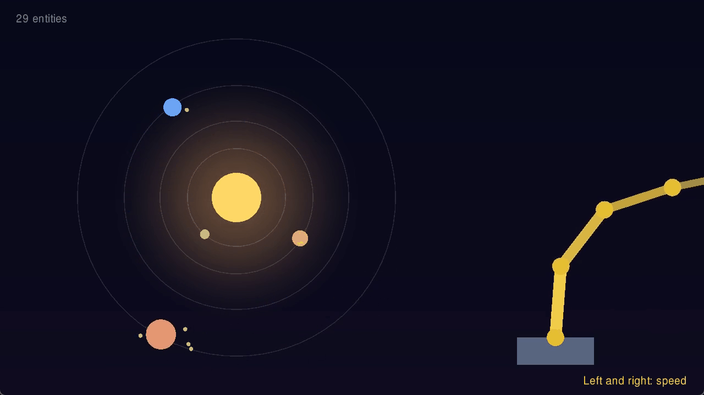
orrery/main.as 84 lines
// Every planet is a child of an arm that turns, and every moon of a planet. Nothing here works out
// where anything is: turning the parent is enough.
class OrreryScreen : Screen
{
Font@ font = Assets::font("global:freesans.sfn", 22);
array<Entity@> arms;
array<float> speeds;
Entity@ sun;
Entity@ crane;
array<Entity@> joints;
float speed = 1;
void onEnter()
{
@sun = Scene::spawn(Vec2(430, 360));
sun.disc(46, Color(1, 0.85f, 0.4f));
sun.layer = 5;
planet(sun, 90, 9, 1.6f, Color(0.8f, 0.7f, 0.6f), 0);
planet(sun, 140, 15, 1.1f, Color(0.95f, 0.7f, 0.4f), 0);
planet(sun, 205, 17, 0.8f, Color(0.4f, 0.65f, 1), 1);
planet(sun, 290, 28, 0.45f, Color(0.9f, 0.6f, 0.45f), 4);
// A crane: each arm is a child of the one before.
Entity@ base = Scene::spawn(Vec2(1010, 640));
base.rect(140, 50, Color(0.35f, 0.4f, 0.5f));
Entity@ from = base;
for (int i = 0; i < 4; i++)
{
Entity@ joint = Scene::spawn(i == 0 ? Vec2(0, -25) : Vec2(0, -130));
joint.disc(16, Color(0.9f, 0.75f, 0.2f));
joint.layer = 3;
joint.attach(from);
Entity@ arm = Scene::spawn(Vec2(0, -65));
arm.rect(22 - float(i) * 3, 120, hsv(0.13f, 0.7f, 0.95f - float(i) * 0.1f));
arm.layer = 2;
arm.attach(joint);
joints.insertLast(joint);
@from = joint;
}
Entity@ hook = Scene::spawn(Vec2(0, -140));
hook.disc(13, Red);
hook.layer = 4;
hook.attach(from);
}
void planet(Entity@ around, float distance, float size, float turn, const Color &in color, int moons)
{
Entity@ arm = Scene::spawn(Vec2());
arm.attach(around);
arm.rotation = random(0, 360);
arms.insertLast(arm);
speeds.insertLast(turn * 60);
Entity@ e = Scene::spawn(Vec2(distance, 0));
e.disc(size, color);
e.layer = 4;
e.attach(arm);
for (int i = 0; i < moons; i++)
planet(e, size + 10 + float(i) * 8, 4, 2.5f - float(i) * 0.4f, Color(0.8f, 0.82f, 0.88f), 0);
}
void update(float dt)
{
speed = clamp(speed + Input::move.x * dt * 2, -3, 4);
for (uint i = 0; i < arms.length(); i++) arms[i].rotation += speeds[i] * speed * dt;
float t = App::time;
for (uint i = 0; i < joints.length(); i++) joints[i].rotation = sin(t * (0.5f + float(i) * 0.3f) + float(i)) * 38;
sun.scale = Vec2(1 + sin(t * 2) * 0.04f, 1 + sin(t * 2) * 0.04f);
}
void draw(Canvas@ c)
{
c.design(1280, 720);
c.gradient(0, 0, 1280, 720, Color(0.03f, 0.04f, 0.1f), Color(0.06f, 0.05f, 0.12f));
c.blend = BlendAdd;
c.glow(430, 360, 240, Color(1, 0.7f, 0.3f, 0.35f));
c.blend = BlendAlpha;
array<float> rings = { 90, 140, 205, 290 };
for (uint i = 0; i < rings.length(); i++) c.ring(430, 360, rings[i], 1.5f, Color(1, 1, 1, 0.12f));
Scene::draw(c);
c.text(font, formatInt(Scene::count) + " entities", 30, 24, Gray);
c.text(font, "Left and right: speed", 1250, 684, Yellow, AlignRight);
}
}
Particles
Fire, rain, fountains and fireworks
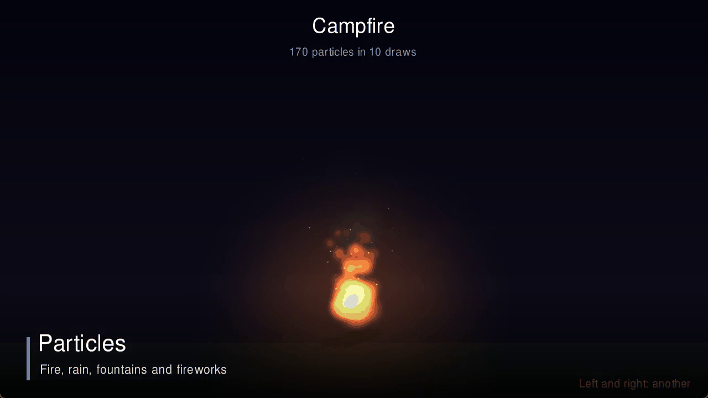
particles/main.as 81 lines
// Kinds of particles are described in scene.json. An emitter makes them steadily; a burst, at once.
class ParticlesScreen : Screen
{
Font@ font = Assets::font("global:freesans.sfn", 22);
Font@ big = Assets::font("global:freesans.sfn", 40);
Sound@ boom = Assets::sound("global:sound/boom.wav");
array<string> names = { "Campfire", "Fountain", "Snow", "Fireworks", "Galaxy" };
uint chosen = 0;
array<Entity@> emitters;
float next = 0, t = 0;
void onEnter()
{
Scene::load("asset:scene.json");
choose(0);
}
void choose(uint which)
{
chosen = which;
for (uint i = 0; i < emitters.length(); i++) emitters[i].destroy();
emitters.resize(0);
Scene::gravity = Vec2(0, 600);
if (which == 0)
{
emitters.insertLast(Scene::spawn("campfire", Vec2(640, 560)));
emitters.insertLast(Scene::spawn("smoke", Vec2(640, 500)));
emitters.insertLast(Scene::spawn("embers", Vec2(640, 560)));
}
else if (which == 1) emitters.insertLast(Scene::spawn("fountain", Vec2(640, 610)));
else if (which == 2)
for (int i = 0; i < 12; i++) emitters.insertLast(Scene::spawn("snow", Vec2(60 + float(i) * 110, -20)));
else if (which == 4)
for (int i = 0; i < 5; i++) emitters.insertLast(Scene::spawn("star", Vec2(640, 360)));
}
void update(float dt)
{
t += dt;
if (Input::pressed("right")) choose((chosen + 1) % names.length());
if (Input::pressed("left")) choose((chosen + names.length() - 1) % names.length());
if (chosen == 1) emitters[0].x = 640 + sin(t) * 200;
if (chosen == 3)
{
next -= dt;
if (next <= 0)
{
next = random(0.3f, 0.9f);
Vec2 at(random(200, 1080), random(120, 400));
array<string> kinds = { "red", "green", "gold" };
Scene::burst(kinds[randomInt(0, 2)], at, 120);
boom.play(0.25f, (at.x - 640) / 640, random(1.2f, 1.8f));
}
}
if (chosen == 4)
for (uint i = 0; i < emitters.length(); i++)
{
float a = t * 1.2f + float(i) * 1.2566f, r = 60 + 130 * (1 + sin(t * 0.5f));
emitters[i].position = Vec2(640 + cos(a) * r * 1.5f, 360 + sin(a) * r);
}
}
void draw(Canvas@ c)
{
c.design(1280, 720);
c.gradient(0, 0, 1280, 720, Color(0.02f, 0.02f, 0.06f), Color(0.06f, 0.05f, 0.1f));
if (chosen < 3) c.rect(0, 620, 1280, 100, chosen == 2 ? Color(0.75f, 0.8f, 0.9f) : Color(0.08f, 0.09f, 0.1f));
if (chosen == 0)
{
c.blend = BlendAdd;
c.glow(640, 560, 320 + sin(t * 12) * 14, Color(1, 0.5f, 0.15f, 0.25f));
c.blend = BlendAlpha;
for (int i = 0; i < 3; i++) c.line(580 + float(i) * 20, 625, 660 + float(i) * 15, 600, 14, Color(0.25f, 0.15f, 0.1f));
}
Scene::draw(c);
c.text(big, names[chosen], 640, 30, White, AlignCenter);
c.text(font, formatInt(Scene::particles) + " particles in " + formatInt(App::draws) + " draws", 640, 84, Gray, AlignCenter);
c.text(font, "Left and right: another", 1250, 684, Yellow, AlignRight);
}
}
Queries
Rays, nearest things and what is touching
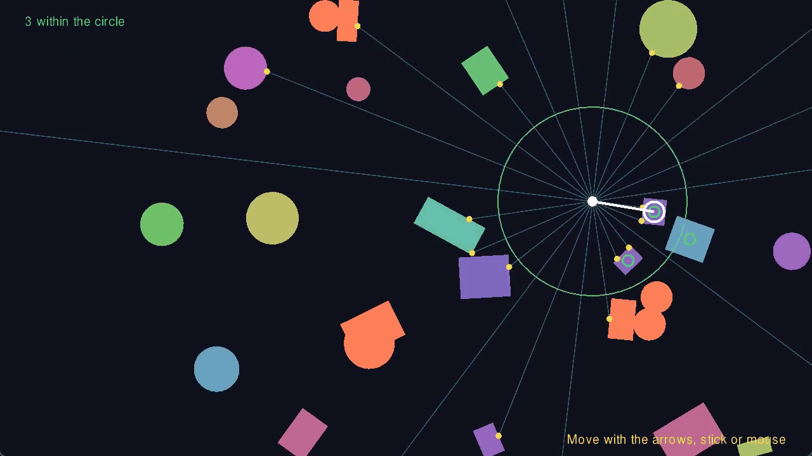
probe/main.as 94 lines
// What a script can ask of the scene. Shapes that touch each other are told so, and change colour.
class Shape : Behaviour
{
int touching = 0;
Color own = hsv(random(), 0.45f, 0.75f);
void start() { entity.color = own; }
void onHit(Entity@ other) { touching++; }
void onLeave(Entity@ other) { touching--; }
void update(float dt) { entity.color = touching > 0 ? Color(1, 0.5f, 0.35f) : own; }
}
class ProbeScreen : Screen
{
Font@ font = Assets::font("global:freesans.sfn", 22);
Vec2 at(640, 360);
Vec2 lastMouse;
float turn = 0;
void onEnter()
{
wall(640, -50, 1480, 100);
wall(640, 770, 1480, 100);
wall(-50, 360, 100, 920);
wall(1330, 360, 100, 920);
for (int i = 0; i < 26; i++)
{
Entity@ e = Scene::spawn(Vec2(random(80, 1200), random(80, 640)));
if (i % 2 == 0)
{
float r = random(16, 46);
e.disc(r, White);
e.circle(r, 1, 1 << 1);
}
else
{
float w = random(30, 110), h = random(24, 70);
e.rect(w, h, White);
e.box(w, h, 1, 1 << 1);
}
e.velocity = Vec2(random(-60, 60), random(-60, 60));
e.spin = random(-40, 40);
e.solid = true;
e.bounce = 1;
e.add(Shape());
}
}
void wall(float x, float y, float w, float h)
{
Entity@ e = Scene::spawn(Vec2(x, y));
e.box(w, h, 2);
e.wall = true;
}
void update(float dt)
{
turn += dt * 0.6f;
at += Input::move * 420 * dt;
Vec2 mouse = Input::mouse;
if (Input::hasMouse && mouse != lastMouse) at = mouse;
lastMouse = mouse;
at = Vec2(clamp(at.x, 20, 1260), clamp(at.y, 20, 700));
}
void draw(Canvas@ c)
{
c.design(1280, 720);
c.rect(0, 0, 1280, 720, Color(0.06f, 0.07f, 0.11f));
Scene::draw(c);
for (int i = 0; i < 24; i++)
{
float a = turn + float(i) * 0.2618f;
Vec2 hit;
Entity@ e = Scene::raycast(at, at + Vec2(cos(a), sin(a)) * 1500, hit, 1 << 1 | 1 << 2);
c.line(at.x, at.y, hit.x, hit.y, 1.5f, Color(0.4f, 0.8f, 1, 0.4f));
if (e !is null && e.group == 1) c.circle(hit.x, hit.y, 5, Yellow);
}
array<Entity@>@ near = Scene::within(at, 150, 1 << 1);
c.ring(at.x, at.y, 150, 2, Color(0.5f, 1, 0.6f, 0.7f));
for (uint i = 0; i < near.length(); i++) c.ring(near[i].x, near[i].y, 10, 3, Green);
Entity@ nearest = Scene::nearest(at, 2000, 1 << 1);
if (nearest !is null)
{
c.line(at.x, at.y, nearest.x, nearest.y, 4, White);
c.ring(nearest.x, nearest.y, 18, 4, White);
}
c.circle(at.x, at.y, 8, White);
c.text(font, formatInt(near.length()) + " within the circle", 40, 24, Green);
c.text(font, "Move with the arrows, stick or mouse", 1240, 684, Yellow, AlignRight);
}
}
Swarm
How many entities, moving and colliding, until it slows down?
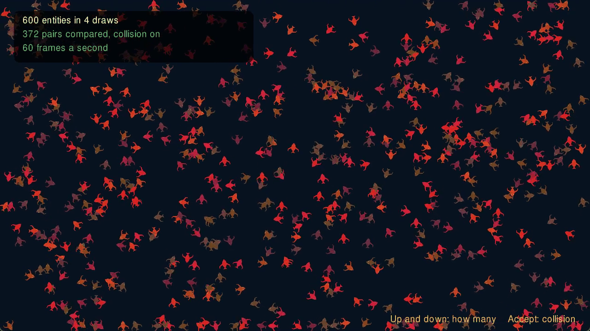
swarm/main.as 70 lines
// Each is an entity with an image, a body and a collider. The engine does all the work in here.
class SwarmScreen : Screen
{
Texture@ fish = Assets::texture("asset:fish.png");
Font@ font = Assets::font("global:freesans.sfn", 22);
array<Entity@> all;
bool collide = true;
uint touched = 0;
void onEnter()
{
wall(640, -50, 1480, 100);
wall(640, 770, 1480, 100);
wall(-50, 360, 100, 920);
wall(1330, 360, 100, 920);
add(300);
}
void wall(float x, float y, float w, float h)
{
Entity@ e = Scene::spawn(Vec2(x, y));
e.box(w, h, 1);
e.wall = true;
}
void add(uint count)
{
for (uint i = 0; i < count && all.length() < 4000; i++)
{
Entity@ e = Scene::spawn(Vec2(random(40, 1240), random(40, 680)));
e.image(fish, 26, 24);
e.color = hsv(random(), 0.5f, 1);
e.velocity = Vec2(random(-150, 150), random(-150, 150));
e.spin = random(-90, 90);
e.circle(11, 0, collide ? 1 : 0);
e.solid = true;
e.bounce = 1;
all.insertLast(e);
}
}
void update(float dt)
{
if (Input::repeated("up")) add(100);
if (Input::repeated("down"))
for (uint i = 0; i < 100 && all.length() > 0; i++)
{
all[all.length() - 1].destroy();
all.removeLast();
}
if (Input::pressed("accept"))
{
collide = !collide;
for (uint i = 0; i < all.length(); i++) all[i].hits = collide ? 1 : 0;
}
}
void draw(Canvas@ c)
{
c.design(1280, 720);
c.rect(0, 0, 1280, 720, Color(0.03f, 0.08f, 0.13f));
Scene::draw(c);
c.roundRect(30, 24, 520, 112, 12, Color(0, 0, 0, 0.7f));
c.text(font, formatInt(all.length()) + " entities in " + formatInt(App::draws) + " draws", 50, 34);
c.text(font, formatInt(Scene::pairs) + " pairs compared, collision " + (collide ? "on" : "off"), 50, 64, collide ? Green : Gray);
c.text(font, formatInt(int(App::fps + 0.5f)) + " frames a second", 50, 94, App::fps > 55 ? Green : Orange);
c.text(font, "Up and down: how many Accept: collision", 1250, 684, Yellow, AlignRight);
}
}
3D
Island
A world to walk about in, from day to night

explore/main.as 422 lines
// A world to walk about in: land, water, trees, houses, a day that passes, and someone to be.
Sound@ chime = Assets::sound("global:sound/coin.wav");
int found = 0;
float darkness = 0;
// Turns, bobs, and is picked up by whoever touches it.
class Crystal : Behaviour
{
Vec3 home;
float at = 0;
void start()
{
home = entity.place;
at = random(0, 6);
}
void update(float dt)
{
at += dt;
entity.place = home + Vec3(0, 0.25f + sin(at * 2) * 0.15f, 0);
entity.turn(Vec3(0, 1, 0), 70 * dt);
}
void onHit(Entity@ other)
{
found++;
chime.play(0.7f);
Space::burst("shard", entity.place + Vec3(0, 0.7f, 0), 40);
entity.destroy();
}
}
// Wanders about in the dark.
class Firefly : Behaviour
{
Vec3 home;
float at = 0;
void start()
{
home = entity.place;
at = random(0, 100);
}
void update(float dt)
{
at += dt;
entity.place = home + Vec3(sin(at * 0.7f) * 2.5f, 1.2f + sin(at * 1.3f) * 0.7f, cos(at * 0.9f) * 2.5f);
entity.visible = darkness > 0.3f && sin(at * 3) > -0.5f;
}
}
class ExploreScreen : Screen
{
Font@ font = Assets::font("global:freesans.sfn", 24);
Font@ big = Assets::font("global:freesans.sfn", 44);
Sound@ jump = Assets::sound("global:sound/whoosh.wav");
Sound@ fire = Assets::sound("global:sound/fire.wav");
Sound@ step = Assets::sound("global:sound/step.wav");
Sound@ splash = Assets::sound("global:sound/splash.wav");
Sound@ waves = Assets::sound("global:sound/waves.wav");
Voice sea;
Model@ campfire = Assets::model("global:model/campfire.glb");
Model@ robot = Assets::model("global:model/robot.glb");
array<Model@> trees = { Assets::model("global:model/pine.glb"), Assets::model("global:model/oak.glb") };
Model@ bush = Assets::model("global:model/bush.glb");
Model@ rock = Assets::model("global:model/rock.glb");
Model@ house = Assets::model("global:model/house.glb");
Model@ lantern = Assets::model("global:model/lantern.glb");
Model@ well = Assets::model("global:model/well.glb");
Model@ crystal = Assets::model("global:model/crystal.glb");
Model@ mushroom = Assets::model("global:model/mushroom.glb");
Entity@ hero;
Entity@ camp;
float strode = 0; // since the last step
bool wet = false;
array<Entity@> lamps;
float yaw = 0.5f; // of the camera, round the robot
float lean = 0.28f;
float away = 7;
Vec3 look;
float hour = 8.5f; // of the day
float waving = 2;
float shown = 0;
bool wasDown = false;
Vec2 mouseWas;
Vec3 safe;
int total = 0;
// Groups: 1 is the robot, 2 what can be walked into, 3 crystals.
void onEnter()
{
found = 0;
Scene::load("asset:scene.json");
sea = waves.play(0, 0, 1, true);
Space::land(21, 192, 1.5f, 34, 0.45f, true);
Space::landColors(Color(0.8f, 0.73f, 0.52f), Color(0.36f, 0.53f, 0.24f), Color(0.55f, 0.53f, 0.48f), Color(0.45f, 0.4f, 0.35f), 0.6f, 17);
Space::water(0, Color(0.16f, 0.42f, 0.55f, 0.78f));
Space::flatten(0, 0, 44, 3);
Space::farthest(320);
Space::shadows(0.65f, 32);
// A village, round a well.
float y = Space::height(0, 0);
place(well, Vec3(0, y, 0), 0, 1);
wall(Vec3(0, y, 0), Vec3(2, 1.6f, 2), 0);
for (int i = 0; i < 5; i++)
{
float a = float(i) * 1.2566f + 0.3f;
Vec3 p(sin(a) * 15, 0, cos(a) * 15);
p.y = Space::height(p.x, p.z);
float turn = a * 57.3f + 180;
Entity@ home = place(house, p, turn, 1);
wall(p, Vec3(6.3f, 8, 5.3f), turn);
// Someone is in, in most of them.
if (i != 3)
Space::spawn(home.toSpace(Vec3(1.8f, 6.1f, -0.9f))).emit("chimney", 5);
}
for (int i = 0; i < 5; i++)
{
float a = float(i) * 1.2566f + 0.93f;
Vec3 p(sin(a) * 8, 0, cos(a) * 8);
p.y = Space::height(p.x, p.z);
Entity@ post = place(lantern, p, 0, 1);
post.capsule(0.2f, 3, 2);
post.colliderAt = Vec3(0, 1.5f, 0);
post.wall = true;
Entity@ lamp = Space::spawn(p + Vec3(0, 2.9f, 0));
lamp.glow(2.2f, Color(1, 0.75f, 0.35f, 0.6f));
lamps.insertLast(lamp);
}
// A fire, that can be heard from some way off.
Vec3 hearth(-4.6f, Space::height(-4.6f, 3.4f), 3.4f);
@camp = place(campfire, hearth, 20, 1);
camp.sphere(0.7f, 2);
camp.wall = true;
Entity@ flame = Space::spawn(hearth + Vec3(0, 0.25f, 0));
flame.emit("flame", 50);
flame.sound(fire, 0.9f, 18);
Space::spawn(hearth + Vec3(0, 0.5f, 0)).emit("spark", 9);
Space::spawn(hearth + Vec3(0, 1.2f, 0)).emit("smoke", 7);
// Crates to push over.
for (int i = 0; i < 10; i++)
{
int row = i < 4 ? 0 : i < 7 ? 1 : i < 9 ? 2 : 3;
int along = i - (row == 0 ? 0 : row == 1 ? 4 : row == 2 ? 7 : 9);
Entity@ crate = Space::spawn(Vec3(5, y + 0.45f + float(row) * 0.91f, -3.4f + float(along) * 0.95f + float(row) * 0.47f));
crate.shape(SolidBox, Color(0.72f, 0.5f, 0.28f));
crate.size = Vec3(0.9f, 0.9f, 0.9f);
crate.cube(Vec3(1, 1, 1), 2);
crate.mass = 6;
crate.gravity = 1;
crate.friction = 0.5f;
}
// What grows. Fewer where there is less memory.
int many = App::platform == "Original Xbox" ? 1 : 3;
for (int i = 0; i < 130 * many; i++)
{
Vec3 p;
if (spot(p, 1.2f, 14, 0.8f, 26))
{
bool high = p.y > 7 + random(-2, 2);
Entity@ tree = place(trees[high ? 0 : 1], p, random(0, 360), random(0.8f, 1.5f));
tree.capsule(0.3f, 4, 2);
tree.colliderAt = Vec3(0, 2, 0);
tree.wall = true;
}
if (i % 2 == 0 && spot(p, 0.8f, 16, 0.75f, 20))
place(bush, p, random(0, 360), random(0.6f, 1.2f));
if (i % 4 == 0 && spot(p, -1, 25, 0.5f, 20))
{
Entity@ stone = place(rock, p, random(0, 360), random(0.4f, 1.6f));
stone.sphere(0.85f, 2);
stone.colliderAt = Vec3(0, 0.2f, 0);
stone.wall = true;
}
if (i % 5 == 0 && spot(p, 1, 12, 0.85f, 18))
place(mushroom, p, random(0, 360), random(0.5f, 1.1f));
if (i % 12 == 0 && spot(p, 1, 12, 0.8f, 10))
{
Entity@ fly = Space::spawn(p);
fly.glow(0.22f, Color(0.8f, 1, 0.4f));
fly.add(Firefly());
}
}
for (int i = 0; i < 16; i++)
{
Vec3 p;
if (!spot(p, 1, 22, 0.7f, 8, i < 5 ? 40 : 110))
continue;
Entity@ e = place(crystal, p, 0, 0.8f);
e.sphere(0.9f, 3, 1 << 1);
e.colliderAt = Vec3(0, 0.6f, 0);
e.add(Crystal());
Entity@ shine = Space::spawn(Vec3(0, 0.6f, 0));
shine.glow(2.4f, Color(0.2f, 0.6f, 0.8f, 0.6f));
shine.attach(e);
total++;
}
@hero = place(robot, Vec3(2.5f, y + 0.1f, 4), 180, 1);
hero.capsule(0.35f, 1.6f, 1);
hero.colliderAt = Vec3(0, 0.8f, 0);
hero.walker = true;
hero.mass = 60;
hero.shine = 0.5f;
safe = hero.place;
look = hero.place + Vec3(0, 1.4f, 0);
}
Entity@ place(Model@ model, const Vec3 &in at, float turn, float size)
{
Entity@ e = Space::spawn(at);
e.model(model);
e.angles = Vec3(0, turn, 0);
e.size = Vec3(size, size, size);
return e;
}
void wall(const Vec3 &in at, const Vec3 &in size, float turn)
{
Entity@ e = Space::spawn(at);
e.angles = Vec3(0, turn, 0);
e.cube(size, 2);
e.wall = true;
}
// Somewhere between two heights, not too steep, away from the village.
bool spot(Vec3 &out p, float low, float high, float flat, float clear, float within = 130)
{
for (int tries = 0; tries < 12; tries++)
{
float x = random(-within, within), z = random(-within, within);
float y = Space::height(x, z);
if (y > low && y < high && x * x + z * z > clear * clear && Space::normal(x, z).y > flat)
{
p = Vec3(x, y, z);
return true;
}
}
return false;
}
void update(float dt)
{
shown += dt;
walk(dt);
follow(dt);
daylight(dt);
}
void walk(float dt)
{
Vec2 stick = Input::move;
Vec3 ahead(-sin(yaw), 0, -cos(yaw));
Vec3 side(cos(yaw), 0, -sin(yaw));
Vec3 way = side * stick.x - ahead * stick.y;
Vec3 wanted = way * (Input::held("alternate") ? 2.4f : 6);
Vec3 motion = hero.motion;
float grip = hero.onGround ? 12 * dt : 3 * dt;
motion.x += (wanted.x - motion.x) * clamp(grip, 0, 1);
motion.z += (wanted.z - motion.z) * clamp(grip, 0, 1);
bool swimming = hero.place.y < -0.75f;
bool paddling = hero.place.y < 0.05f;
if (paddling && !wet && motion.y < -2)
{
splash.playAt(hero.place, 0.8f, 40);
Space::burst("drops", Vec3(hero.place.x, 0.05f, hero.place.z), 50);
}
wet = paddling;
sea.fade(clamp(0.5f - look.y * 0.035f, 0, 0.5f), 0.1f);
if (swimming)
{
motion.y += (clamp((-0.8f - hero.place.y) * 3, -1, 2) - motion.y) * clamp(8 * dt, 0, 1);
motion.x *= 0.95f;
motion.z *= 0.95f;
}
if (Input::pressed("accept") && (hero.onGround || swimming))
{
motion.y = 6.2f;
jump.play(0.4f);
}
hero.motion = motion;
float going = Vec3(motion.x, 0, motion.z).length();
strode += going * dt;
if (strode > (going > 4 ? 1.5f : 0.9f) && (hero.onGround || paddling))
{
strode = 0;
Vec3 foot = hero.place;
foot.y = paddling ? 0.05f : foot.y + 0.1f;
Space::burst(paddling ? "foam" : "dust", foot, going > 4 ? 5 : 2);
(paddling ? splash : step).play(paddling ? 0.12f : 0.3f, 0, random(0.85f, 1.15f));
}
if (way.length() > 0.1f)
{
hero.face(way, clamp(12 * dt, 0, 1));
waving = 0;
}
if (Input::pressed("fire") && !Input::pressed("accept"))
waving = 1.6f;
waving -= dt;
if (!hero.onGround && !swimming && abs(motion.y) > 1.5f)
hero.animate("jump", true, 0.15f);
else if (going > 4)
hero.animate("run");
else if (going > 0.5f || swimming)
hero.animate("walk");
else if (waving > 0)
hero.animate("wave");
else
hero.animate("idle");
hero.animationSpeed = going > 4 ? going / 6 : going > 0.5f ? going / 2.4f : 1;
if (hero.place.y < -15)
hero.place = safe;
}
void follow(float dt)
{
// The right stick, or the mouse while its right button is down.
Vec2 turn = Input::padRight(0);
yaw -= turn.x * 2.4f * dt;
lean = clamp(lean - turn.y * 1.4f * dt, -0.1f, 1.1f);
Vec2 mouse = Input::mouse;
if (Input::mouseDown(1) && wasDown)
{
yaw -= (mouse.x - mouseWas.x) * 0.006f;
lean = clamp(lean + (mouse.y - mouseWas.y) * 0.004f, -0.1f, 1.1f);
}
wasDown = Input::mouseDown(1);
mouseWas = mouse;
// It swings round behind as you walk.
Vec3 side(cos(yaw), 0, -sin(yaw));
yaw -= clamp(hero.motion.dot(side) * 0.1f, -1, 1) * dt * 1.5f;
look = lerp(look, hero.place + Vec3(0, 1.4f, 0), clamp(9 * dt, 0, 1));
Vec3 back(sin(yaw) * cos(lean), sin(lean), cos(yaw) * cos(lean));
Vec3 from = look + back * away;
// Not through a wall or a hill.
Vec3 hit;
Vec3 normal;
if (Space::raycast(look, look + back * (away + 0.4f), hit, normal, (1 << 0) | (1 << 2), hero))
from = look + back * clamp((hit - look).length() - 0.4f, 1, away);
float least = Space::height(from.x, from.z) + 0.5f;
from.y = from.y < least ? least : from.y < 0.4f ? 0.4f : from.y;
Space::camera(from, look + Vec3(0, 0.3f, 0), 62);
}
void daylight(float dt)
{
hour += dt * 0.14f;
if (hour >= 24)
hour -= 24;
float a = (hour - 6) / 12 * 3.14159f; // the sun rises at 6
float high = sin(a);
float day = clamp(high * 2.5f + 0.35f, 0, 1);
float dusk = clamp(1 - abs(high) * 3.2f, 0, 1);
darkness = 1 - day;
Color top = lerp(Color(0.015f, 0.025f, 0.08f), Color(0.2f, 0.45f, 0.85f), day);
Color rim = lerp(Color(0.05f, 0.07f, 0.14f), Color(0.72f, 0.84f, 0.93f), day);
rim = lerp(rim, Color(1, 0.55f, 0.3f), dusk * 0.75f);
top = lerp(top, Color(0.35f, 0.3f, 0.5f), dusk * 0.4f);
Space::sky(top, rim);
Space::fog(rim, 70, 260);
Vec3 up(cos(a) * 0.8f, high > 0.1f ? high : 0.1f, 0.42f);
Color light = lerp(Color(0.16f, 0.2f, 0.34f), Color(0.95f, 0.9f, 0.78f), day);
light = lerp(light, Color(1, 0.6f, 0.35f), dusk * 0.6f);
if (high < -0.05f)
up = Vec3(-cos(a) * 0.6f, 0.8f, 0.3f); // the moon
Space::sun(up, light);
Space::ambient(lerp(Color(0.1f, 0.13f, 0.22f), Color(0.42f, 0.48f, 0.56f), day), lerp(Color(0.05f, 0.05f, 0.08f), Color(0.26f, 0.24f, 0.2f), day));
float t = App::time;
camp.light(Color(1.8f, 0.9f, 0.35f), (4 + darkness * 5) * (1 + sin(t * 11) * 0.05f + sin(t * 17.3f) * 0.04f));
for (uint i = 0; i < lamps.length(); i++)
{
float glow = darkness * (0.93f + sin(App::time * 9 + float(i) * 2) * 0.07f);
lamps[i].color = Color(1, 0.75f, 0.35f, glow * 0.7f);
lamps[i].light(Color(1.5f * glow, 1.0f * glow, 0.5f * glow), 11);
}
}
void draw(Canvas@ c)
{
c.designHeight(720);
Space::draw(c);
c.bloom(0.2f + darkness * 0.5f, 0.85f - darkness * 0.2f);
c.roundRect(24, 22, 236, 62, 16, Color(0, 0, 0, 0.4f));
c.circle(54, 53, 12, Color(0.35f, 0.9f, 1));
c.text(font, formatInt(found) + " of " + formatInt(total) + " crystals", 78, 40);
// A clock: the sun or the moon crossing the sky.
float a = (hour - 6) / 12 * 3.14159f;
c.arc(c.width - 90, 92, 56, 3, 180, 360, Color(1, 1, 1, 0.35f));
bool isDay = hour >= 6 && hour < 18;
float b = isDay ? a : a - 3.14159f;
c.circle(c.width - 90 - cos(b) * 56, 92 - sin(b) * 56, 11, isDay ? Color(1, 0.85f, 0.3f) : Color(0.8f, 0.85f, 1));
int minutes = int(hour * 6) % 6 * 10;
c.text(font, formatInt(int(hour)) + ":" + (minutes < 10 ? "0" : "") + formatInt(minutes), c.width - 90, 64, White, AlignCenter);
if (total > 0 && found == total)
c.text(big, "You found them all!", c.width * 0.5f, 120, Color(1, 0.9f, 0.4f), AlignCenter);
float help = clamp(7 - shown, 0, 1);
if (help > 0)
{
c.alpha = help;
c.roundRect(c.width * 0.5f - 400, 640, 800, 48, 14, Color(0, 0, 0, 0.45f));
c.text(font, Input::usingPad ? "Left stick: walk Right stick: look A: jump X: go slowly" : "Arrows: walk Right button: look Space: jump Shift: go slowly", c.width * 0.5f, 650, White, AlignCenter);
c.alpha = 1;
}
}
}
Solids
Meshes, materials, lights and shadows
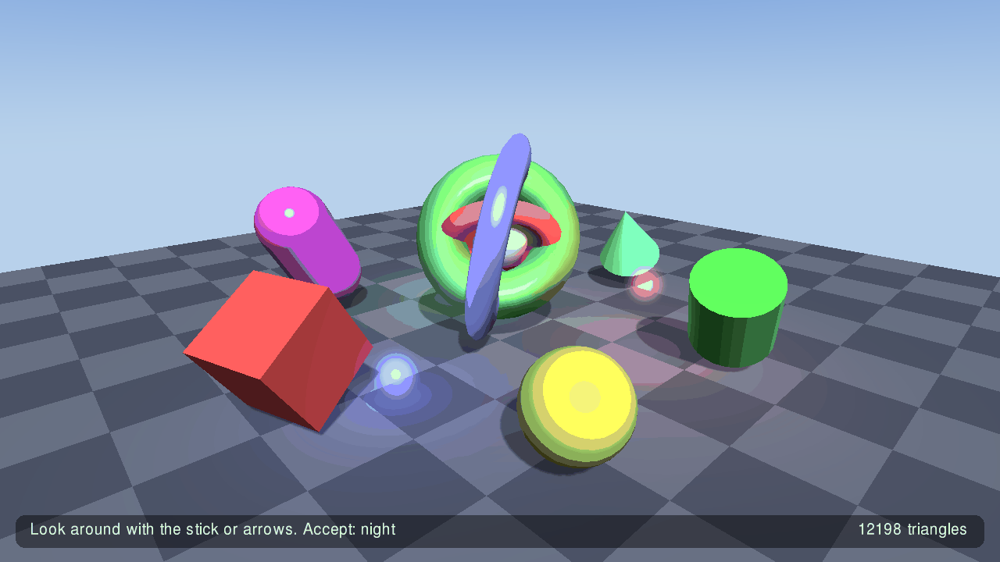
solids/main.as 112 lines
// The shapes that are always there, with different materials, under a sun and three moving lights.
class SolidsScreen : Screen
{
Font@ font = Assets::font("global:freesans.sfn", 22);
array<Entity@> things;
array<Entity@> lamps;
float around = 0.4f;
float lean = 0.35f;
bool night = false;
void onEnter()
{
// Something to stand them on: a mesh made by the script.
Mesh@ floor = Mesh();
for (int z = -8; z < 8; z++)
for (int x = -8; x < 8; x++)
{
float a = float(x) * 1.5f, b = float(z) * 1.5f;
Color tile = (x + z) % 2 == 0 ? Color(0.42f, 0.45f, 0.52f) : Color(0.3f, 0.33f, 0.4f);
floor.quad(Vec3(a, 0, b + 1.5f), Vec3(a + 1.5f, 0, b + 1.5f), Vec3(a + 1.5f, 0, b), Vec3(a, 0, b), tile);
}
Entity@ ground = Space::spawn(Vec3(0, 0, 0));
ground.mesh(floor);
ground.shine = 0.4f;
array<Solid> kinds = { SolidBox, SolidSphere, SolidCylinder, SolidCone, SolidTorus, SolidCapsule };
for (uint i = 0; i < kinds.length(); i++)
{
float a = float(i) / float(kinds.length()) * 6.283f;
Entity@ e = Space::spawn(Vec3(sin(a) * 4, 1.2f, cos(a) * 4));
e.shape(kinds[i], hsv(float(i) / 6.0f, 0.65f, 0.95f));
e.size = Vec3(1.4f, 1.4f, 1.4f);
e.shine = float(i) / 5.0f;
things.insertLast(e);
}
// The middle one is made of several, moving together.
Entity@ middle = Space::spawn(Vec3(0, 2, 0));
middle.shape(SolidSphere, Color(0.95f, 0.95f, 1));
middle.shine = 1;
things.insertLast(middle);
for (int i = 0; i < 3; i++)
{
Entity@ ring = Space::spawn(Vec3(0, 0, 0));
ring.attach(middle);
ring.shape(SolidTorus, hsv(float(i) * 0.33f, 0.5f, 1));
ring.size = Vec3(2.2f, 1, 2.2f) * (1 + float(i) * 0.35f);
ring.shine = 1;
things.insertLast(ring);
}
for (int i = 0; i < 3; i++)
{
Entity@ lamp = Space::spawn(Vec3(0, 2, 0));
lamp.glow(0.9f, hsv(float(i) * 0.33f, 0.6f, 1));
lamp.light(hsv(float(i) * 0.33f, 0.6f, 1.2f), 6);
lamps.insertLast(lamp);
}
Space::shadows(0.7f, 14);
}
void update(float dt)
{
around += (Input::move.x * 1.6f + 0.15f) * dt;
lean = clamp(lean - Input::move.y * dt, 0.1f, 1.2f);
if (Input::pressed("accept"))
night = !night;
float t = App::time;
for (uint i = 0; i < things.length(); i++)
{
if (i <= 6)
things[i].turn(Vec3(0.3f, 1, 0.2f), dt * (i == 6 ? 20 : 40));
if (i < 6)
{
Vec3 p = things[i].place;
p.y = 1.3f + sin(t * 1.3f + float(i)) * 0.3f;
things[i].place = p;
}
else if (i > 6)
things[i].angles = Vec3(t * 40 + float(i) * 60, t * 25, float(i) * 60);
}
for (uint i = 0; i < lamps.length(); i++)
{
float a = t * 0.8f + float(i) * 2.09f;
lamps[i].place = Vec3(sin(a) * 2.6f, 0.9f + sin(t * 1.7f + a) * 0.5f, cos(a) * 2.6f);
}
if (night)
{
Space::sun(Vec3(-0.4f, 0.8f, 0.3f), Color(0.12f, 0.14f, 0.25f));
Space::ambient(Color(0.07f, 0.08f, 0.14f), Color(0.04f, 0.04f, 0.06f));
Space::sky(Color(0.01f, 0.015f, 0.05f), Color(0.06f, 0.07f, 0.14f));
}
else
{
Space::sun(Vec3(sin(t * 0.1f + 0.6f), 0.9f, 0.5f), Color(0.95f, 0.9f, 0.8f));
Space::ambient(Color(0.3f, 0.34f, 0.42f), Color(0.2f, 0.19f, 0.18f));
Space::sky(Color(0.2f, 0.42f, 0.8f), Color(0.72f, 0.82f, 0.92f));
}
Space::camera(Vec3(sin(around) * 10 * cos(lean), 1 + sin(lean) * 10, cos(around) * 10 * cos(lean)), Vec3(0, 1.2f, 0), 55);
}
void draw(Canvas@ c)
{
c.designHeight(720);
Space::draw(c);
if (night)
c.bloom(0.5f, 0.6f);
c.roundRect(20, 660, c.width - 40, 42, 12, Color(0, 0, 0, 0.45f));
c.text(font, "Look around with the stick or arrows. Accept: " + (night ? "day" : "night"), 40, 668);
c.text(font, formatInt(int(Space::triangles)) + " triangles", c.width - 40, 668, White, AlignRight);
}
}
Tumble
Rigid bodies in space: throw balls at things
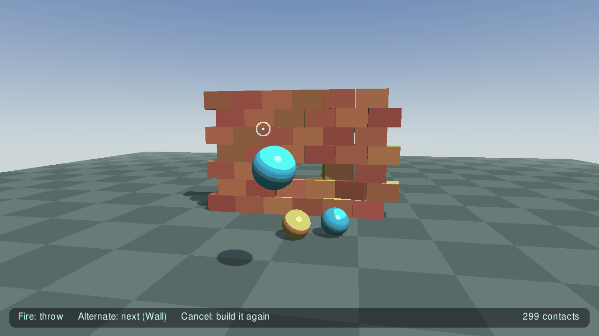
tumble/main.as 175 lines
// Rigid bodies: give a collider some mass, and the engine does the rest.
class TumbleScreen : Screen
{
Font@ font = Assets::font("global:freesans.sfn", 22);
Sound@ throwing = Assets::sound("global:sound/whoosh.wav");
Sound@ hit = Assets::sound("global:sound/wall.wav");
Vec2 aim(0, 0.12f);
float around = 0;
int kind = 0;
array<string> kinds = { "Wall", "Tower", "Dominoes", "Rain" };
array<Entity@> things;
float rain = 0;
uint dropped = 0;
Vec2 mouseWas;
bool mouseDown = false;
void onEnter()
{
Mesh@ floor = Mesh();
for (int z = -10; z < 10; z++)
for (int x = -10; x < 10; x++)
{
float a = float(x) * 2, b = float(z) * 2;
floor.quad(Vec3(a, 0, b + 2), Vec3(a + 2, 0, b + 2), Vec3(a + 2, 0, b), Vec3(a, 0, b), (x + z) % 2 == 0 ? Color(0.36f, 0.42f, 0.4f) : Color(0.3f, 0.36f, 0.34f));
}
Space::spawn(Vec3(0, 0, 0)).mesh(floor);
Space::ground(0);
Space::sky(Color(0.25f, 0.4f, 0.65f), Color(0.8f, 0.84f, 0.85f));
Space::fog(Color(0.8f, 0.84f, 0.85f), 25, 60);
Space::sun(Vec3(0.5f, 0.9f, 0.5f), Color(0.95f, 0.9f, 0.8f));
Space::shadows(0.65f, 18);
build();
}
Entity@ block(const Vec3 &in at, const Vec3 &in size, const Color &in color, float mass = 1)
{
Entity@ e = Space::spawn(at);
e.shape(SolidBox, color);
e.size = size;
e.cube(Vec3(1, 1, 1));
e.mass = mass;
e.gravity = 1;
e.friction = 0.6f;
e.shine = 0.15f;
things.insertLast(e);
return e;
}
void build()
{
for (uint i = 0; i < things.length(); i++)
things[i].destroy();
things.resize(0);
rain = 0;
dropped = 0;
if (kind == 0)
{
for (int y = 0; y < 7; y++)
for (int x = 0; x < 6; x++)
block(Vec3((float(x) - 2.5f + (y % 2 == 0 ? -0.2f : 0.2f)) * 1.02f, 0.3f + float(y) * 0.601f, 0), Vec3(1, 0.6f, 0.6f), hsv(0.02f + float((x * 7 + y * 3) % 5) * 0.012f, 0.55f, 0.75f + float((x + y * 2) % 3) * 0.06f));
}
else if (kind == 1)
{
for (int y = 0; y < 9; y++)
for (int i = 0; i < 3; i++)
{
float off = (float(i) - 1) * 0.7f;
Entity@ e = block(Vec3(y % 2 == 0 ? off : 0.0f, 0.25f + float(y) * 0.501f, y % 2 == 0 ? 0.0f : off), Vec3(2.1f, 0.5f, 0.66f), hsv(0.08f + float(y) * 0.01f, 0.4f, 0.9f));
e.angles = Vec3(0, y % 2 == 0 ? 90 : 0, 0);
}
}
else if (kind == 2)
{
for (int i = 0; i < 26; i++)
{
float a = float(i) * 0.21f;
float r = 1.6f + float(i) * 0.14f;
Entity@ e = block(Vec3(sin(a) * r, 0.7f, cos(a) * r - 1), Vec3(0.75f, 1.4f, 0.18f), hsv(float(i) / 26.0f, 0.6f, 0.95f), 0.6f);
e.angles = Vec3(0, a * 57.3f + 90, 0);
if (i == 25)
e.push(Vec3(-cos(a) * 1.5f, 0, sin(a) * 1.5f), e.place + Vec3(0, 0.6f, 0));
}
}
}
void update(float dt)
{
aim += Vec2(Input::move.x, -Input::move.y) * dt * 0.6f;
Vec2 mouse = Input::mouse;
if (Input::hasMouse && mouse != mouseWas)
aim = Vec2((mouse.x - 640) / 640 * 0.6f, (400 - mouse.y) / 400 * 0.4f);
mouseWas = mouse;
aim = Vec2(clamp(aim.x, -0.6f, 0.6f), clamp(aim.y, -0.1f, 0.5f));
if (Input::pressed("alternate"))
{
kind = (kind + 1) % 4;
build();
}
else if (Input::pressed("cancel"))
build();
bool clicked = Input::pressed("fire") || Input::pressed("accept");
if (clicked)
{
Entity@ ball = Space::spawn(eye() + Vec3(0, -0.4f, -0.8f));
ball.shape(SolidSphere, hsv(random(0, 1), 0.7f, 1));
ball.size = Vec3(0.8f, 0.8f, 0.8f);
ball.sphere(0.5f, 1);
ball.mass = 4;
ball.gravity = 1;
ball.bounce = 0.3f;
ball.shine = 0.9f;
ball.motion = direction() * 20;
ball.lifetime = 12;
throwing.play(0.5f);
}
if (kind == 3)
{
rain -= dt;
if (rain <= 0 && dropped < 90)
{
rain = 0.12f;
dropped++;
int which = randomInt(0, 2);
Vec3 at(random(-1.6f, 1.6f), 9, random(-1.6f, 1.6f));
Color color = hsv(float(dropped) * 0.03f, 0.6f, 0.95f);
if (which == 0)
block(at, Vec3(random(0.5f, 1), random(0.5f, 1), random(0.5f, 1)), color).angles = Vec3(random(0, 360), random(0, 360), 0);
else
{
Entity@ e = Space::spawn(at);
e.shape(which == 1 ? SolidSphere : SolidCapsule, color);
float size = random(0.6f, 0.9f);
e.size = Vec3(size, size * (which == 1 ? 1.0f : 0.8f), size);
if (which == 1)
e.sphere(0.5f);
else
e.capsule(0.5f, 2);
e.mass = 1;
e.gravity = 1;
e.bounce = 0.2f;
e.shine = 0.5f;
e.turning = Vec3(random(-90, 90), 0, random(-90, 90));
things.insertLast(e);
}
}
}
around = sin(App::time * 0.15f) * 0.25f;
Space::camera(eye(), Vec3(0, 1.6f, 0), 55);
}
Vec3 eye() { return Vec3(sin(around) * 11, 3.2f, cos(around) * 11); }
Vec3 direction()
{
Vec3 ahead = (Vec3(0, 1.6f, 0) - eye()).normalized();
Vec3 side(-ahead.z, 0, ahead.x);
return (ahead + side.normalized() * aim.x + Vec3(0, 1, 0) * aim.y).normalized();
}
void draw(Canvas@ c)
{
c.designHeight(720);
Space::draw(c);
Vec2 at;
if (Space::toScreen(eye() + direction() * 10, at))
{
c.ring(at.x, at.y, 16, 3, Color(1, 1, 1, 0.8f));
c.circle(at.x, at.y, 3, White);
}
c.roundRect(20, 660, c.width - 40, 42, 12, Color(0, 0, 0, 0.45f));
c.text(font, "Fire: throw Alternate: next (" + kinds[kind] + ") Cancel: build it again", 40, 668);
c.text(font, formatInt(int(Space::contacts)) + " contacts", c.width - 40, 668, White, AlignRight);
}
}
Models
glTF models, animation and levels of detail
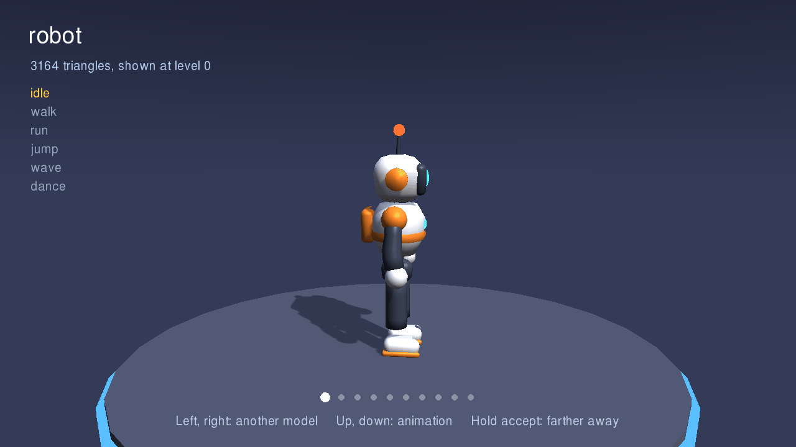
gallery/main.as 96 lines
// Models from glTF files, turning on a stand.
class GalleryScreen : Screen
{
Font@ font = Assets::font("global:freesans.sfn", 22);
Font@ big = Assets::font("global:freesans.sfn", 40);
Sound@ click = Assets::sound("global:sound/move.wav");
array<string> names = { "robot", "house", "well", "lantern", "pine", "oak", "bush", "rock", "crystal", "mushroom" };
array<Model@> models;
uint chosen = 0;
uint animation = 0;
Entity@ shown;
float away = 1;
float arrive = 0;
GalleryScreen()
{
for (uint i = 0; i < names.length(); i++)
models.insertLast(Assets::model("global:model/" + names[i] + ".glb"));
}
void onEnter()
{
Entity@ stand = Space::spawn(Vec3(0, -0.26f, 0));
stand.shape(SolidCylinder, Color(0.32f, 0.34f, 0.42f));
stand.size = Vec3(5, 0.5f, 5);
stand.shine = 0.6f;
stand.shadow = false;
Entity@ rim = Space::spawn(Vec3(0, -0.1f, 0));
rim.shape(SolidCylinder, Color(0.35f, 0.75f, 1));
rim.size = Vec3(5.12f, 0.06f, 5.12f);
rim.glowing = 1;
Space::ground(0);
Space::sky(Color(0.06f, 0.07f, 0.13f), Color(0.2f, 0.23f, 0.34f));
Space::sun(Vec3(0.5f, 0.8f, 0.7f), Color(0.95f, 0.92f, 0.86f));
Space::ambient(Color(0.36f, 0.4f, 0.5f), Color(0.22f, 0.2f, 0.2f));
Space::shadows(0.6f, 8);
show();
}
void show()
{
if (shown !is null)
shown.destroy();
@shown = Space::spawn(Vec3(0, 0, 0));
shown.model(models[chosen]);
shown.shine = 0.3f;
animation = 0;
arrive = 0;
}
void update(float dt)
{
uint before = chosen;
if (Input::repeated("right"))
chosen = (chosen + 1) % names.length();
if (Input::repeated("left"))
chosen = (chosen + names.length() - 1) % names.length();
if (chosen != before)
{
click.play(0.6f);
show();
}
uint count = models[chosen].animations;
if (count > 0)
{
if (Input::repeated("up"))
animation = (animation + 1) % count;
if (Input::repeated("down"))
animation = (animation + count - 1) % count;
shown.animate(models[chosen].animation(animation));
}
// Held, it goes away, and simpler versions are drawn.
float wanted = Input::held("fire") || Input::held("accept") ? 14 : 1;
away += (wanted - away) * clamp(dt * 2, 0, 1);
arrive = clamp(arrive + dt * 2.5f, 0, 1);
float radius = models[chosen].radius;
float size = radius > 0 ? 1.45f / radius * smooth(arrive) : 0.01f;
shown.size = Vec3(size, size, size);
shown.turn(Vec3(0, 1, 0), dt * 30);
Space::camera(Vec3(0, 1.9f, 5) * away, Vec3(0, 1.2f, 0), 45);
}
void draw(Canvas@ c)
{
c.designHeight(720);
Space::draw(c);
c.text(big, names[chosen], 48, 40);
c.text(font, formatInt(int(models[chosen].triangles)) + " triangles, shown at level " + formatInt(int(shown.detail)), 50, 96, Color(0.7f, 0.8f, 0.95f));
for (uint i = 0; i < models[chosen].animations; i++)
c.text(font, models[chosen].animation(i), 50, 140 + float(i) * 30, i == animation ? Yellow : Color(0.6f, 0.65f, 0.75f));
for (uint i = 0; i < names.length(); i++)
c.circle(c.width * 0.5f + (float(i) - float(names.length() - 1) * 0.5f) * 26, 640, i == chosen ? 8 : 5, i == chosen ? White : Color(1, 1, 1, 0.35f));
c.text(font, "Left, right: another model Up, down: animation Hold accept: farther away", c.width * 0.5f, 668, Color(0.75f, 0.8f, 0.9f), AlignCenter);
}
}
Ray marching
Shapes by their distance, melting together
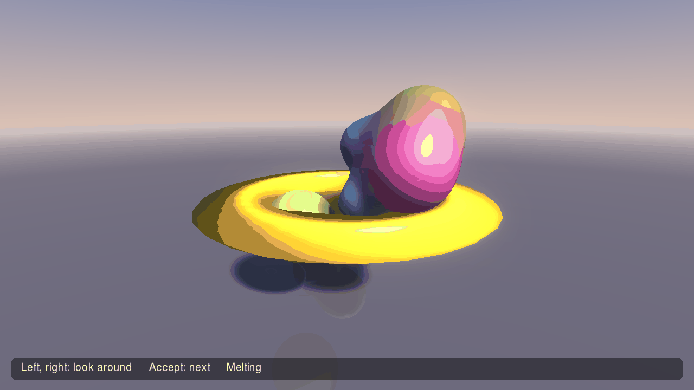
melt/main.as 72 lines
// Shapes described by how far away they are, drawn by marching along rays. Where the GPU can't, the
// engine makes triangles of them instead.
class MeltScreen : Screen
{
Font@ font = Assets::font("global:freesans.sfn", 22);
float around = 0;
int kind = 0;
array<string> kinds = { "Melting", "Cut and kept", "Again and again" };
void onEnter()
{
Space::sky(Color(0.2f, 0.35f, 0.65f), Color(0.85f, 0.75f, 0.7f));
Space::sun(Vec3(0.6f, 0.7f, 0.4f), Color(1, 0.92f, 0.8f));
Space::ambient(Color(0.35f, 0.4f, 0.5f), Color(0.25f, 0.22f, 0.22f));
Space::fog(Color(0.8f, 0.75f, 0.75f), 22, 50);
// A mesh among them, to show that they mix.
Entity@ ball = Space::spawn(Vec3(0, 1, 0));
ball.shape(SolidTorus, Color(1, 0.8f, 0.2f));
ball.shine = 1;
ball.size = Vec3(5.2f, 1.2f, 5.2f);
}
void update(float dt)
{
around += (Input::move.x * 1.5f + 0.12f) * dt;
if (Input::pressed("accept"))
kind = (kind + 1) % 3;
float t = App::time;
Space::clearField();
Space::field(FieldPlane, Vec3(0, -0.6f, 0), Vec3(1, 1, 1), Color(0.42f, 0.4f, 0.45f));
if (kind == 0)
{
for (int i = 0; i < 9; i++)
{
float a = t * (0.4f + float(i) * 0.07f) + float(i) * 2.1f;
Space::field(FieldSphere, Vec3(sin(a) * 1.5f, 1.2f + sin(a * 1.3f + float(i)) * 1.2f, cos(a * 0.9f) * 1.5f), Vec3(0.45f + sin(float(i)) * 0.15f, 0, 0), hsv(float(i) / 9.0f, 0.65f, 0.95f), 0.5f);
}
Space::fieldLook(0.8f, 0.25f);
}
else if (kind == 1)
{
Space::field(FieldBox, Vec3(0, 1.2f, 0), Vec3(1.1f, 1.1f, 1.1f), Color(0.3f, 0.6f, 0.95f), 0, JoinAdd, t * 20);
Space::field(FieldSphere, Vec3(0, 1.2f, 0), Vec3(1.42f, 0, 0), Color(0.95f, 0.95f, 1), 0.05f, JoinCut);
Space::field(FieldSphere, Vec3(0, 1.2f + sin(t) * 0.2f, 0), Vec3(0.75f, 0, 0), Color(1, 0.45f, 0.3f), 0.1f);
for (int i = 0; i < 6; i++)
{
float a = float(i) * 1.047f + t * 0.5f;
Space::field(FieldCylinder, Vec3(sin(a) * 2.7f, 0.5f, cos(a) * 2.7f), Vec3(0.35f, 1, 0), hsv(0.3f + float(i) * 0.05f, 0.5f, 0.9f), 0.3f);
Space::field(FieldSphere, Vec3(sin(a) * 2.7f, 1.6f + sin(t * 2 + float(i)) * 0.2f, cos(a) * 2.7f), Vec3(0.4f, 0, 0), Color(0.98f, 0.95f, 0.9f), 0.35f);
}
Space::fieldLook(0.6f, 0.15f);
}
else
{
Space::field(FieldCylinder, Vec3(0, 0.8f, 0), Vec3(0.5f, 1.6f, 0), Color(0.8f, 0.76f, 0.7f), 0.5f);
Space::field(FieldTorus, Vec3(0, 1.4f + sin(t * 0.8f) * 0.7f, 0), Vec3(0.9f, 0.2f, 0), Color(0.95f, 0.5f, 0.25f), 0.25f);
Space::field(FieldSphere, Vec3(0, 3, 0), Vec3(0.7f, 0, 0), Color(0.5f, 0.8f, 0.95f), 0.4f);
Space::fieldLook(0.5f, 0.2f, 4.5f);
}
Space::camera(Vec3(sin(around) * 6.5f, 2.6f + sin(around * 0.7f) * 0.6f, cos(around) * 6.5f), Vec3(0, 1.1f, 0), 55);
}
void draw(Canvas@ c)
{
c.designHeight(720);
Space::draw(c);
c.bloom(0.3f, 0.8f);
c.roundRect(20, 660, c.width - 40, 42, 12, Color(0, 0, 0, 0.45f));
c.text(font, "Left, right: look around Accept: next " + kinds[kind], 40, 668);
}
}
Night lights
Sixteen lights in the dark
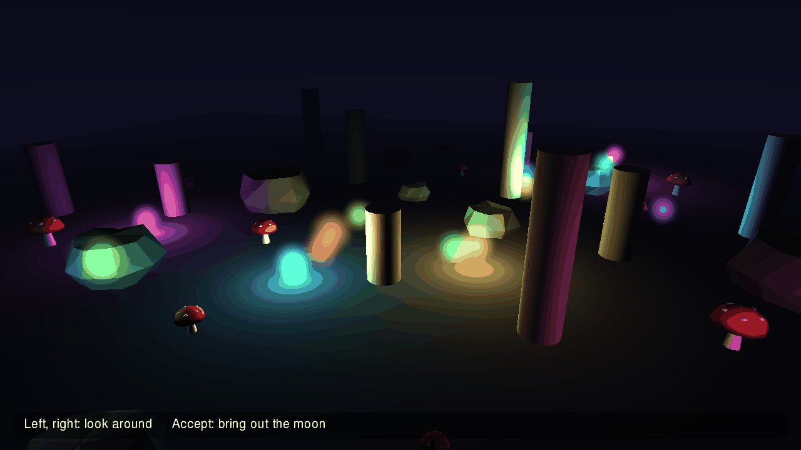
lights/main.as 90 lines
// Lights that move: sixteen at once, the nearest four on each thing.
class Wisp : Behaviour
{
float at = 0;
float reach = 0;
Color color;
Wisp(float at_, float reach_, const Color &in color_)
{
at = at_;
reach = reach_;
color = color_;
}
void update(float dt)
{
at += dt * (0.5f + 2 / reach);
entity.place = Vec3(sin(at) * reach, 0.8f + sin(at * 2.3f) * 0.5f, cos(at * 1.1f) * reach);
float flicker = 2 + sin(at * 11) * 0.2f;
entity.light(Color(color.r * flicker, color.g * flicker, color.b * flicker), 6);
}
}
class LightsScreen : Screen
{
Font@ font = Assets::font("global:freesans.sfn", 22);
Model@ crystal = Assets::model("global:model/crystal.glb");
Model@ rock = Assets::model("global:model/rock.glb");
Model@ mushroom = Assets::model("global:model/mushroom.glb");
float around = 0;
bool moon = false;
void onEnter()
{
Mesh@ floor = Mesh();
floor.plane(44, 44, 40, Color(0.5f, 0.5f, 0.55f));
Space::spawn(Vec3(0, 0, 0)).mesh(floor);
for (int i = 0; i < 40; i++)
{
float a = float(i) * 2.4f, r = 1.2f + sqrt(float(i)) * 1.5f;
Vec3 p(sin(a) * r, 0, cos(a) * r);
Entity@ e = Space::spawn(p);
e.angles = Vec3(0, float(i * 77), 0);
if (i % 3 == 0)
{
e.shape(SolidCylinder, Color(0.75f, 0.73f, 0.7f));
float tall = 1.5f + float(i % 5) * 0.5f;
e.place = p + Vec3(0, tall * 0.5f, 0);
e.size = Vec3(0.7f, tall, 0.7f);
}
else
{
e.model(i % 3 == 1 ? rock : mushroom);
float size = 0.5f + float(i % 4) * 0.2f;
e.size = Vec3(size, size, size);
}
e.shine = 0.4f;
}
for (int i = 0; i < 16; i++)
{
Color color = hsv(float(i) / 16.0f, 0.7f, 1);
Entity@ e = Space::spawn(Vec3(0, 1, 0));
e.glow(1, color);
e.add(Wisp(float(i) * 1.7f, 1.5f + float(i) * 0.5f, color));
}
Space::sky(Color(0.01f, 0.01f, 0.04f), Color(0.05f, 0.05f, 0.12f));
Space::fog(Color(0.04f, 0.04f, 0.1f), 12, 30);
}
void update(float dt)
{
around += (Input::move.x * 1.5f + 0.1f) * dt;
if (Input::pressed("accept"))
moon = !moon;
Space::sun(Vec3(0.5f, 0.7f, -0.5f), moon ? Color(0.25f, 0.28f, 0.4f) : Color(0, 0, 0));
Space::ambient(Color(0.04f, 0.04f, 0.07f), Color(0.02f, 0.02f, 0.03f));
Space::shadows(moon ? 0.7f : 0.0f, 16);
Space::camera(Vec3(sin(around) * 9, 4.2f, cos(around) * 9), Vec3(0, 0.7f, 0), 55);
}
void draw(Canvas@ c)
{
c.designHeight(720);
Space::draw(c);
c.bloom(0.55f, 0.65f);
c.roundRect(20, 660, c.width - 40, 42, 12, Color(0, 0, 0, 0.45f));
c.text(font, "Left, right: look around Accept: " + (moon ? "hide the moon" : "bring out the moon"), 40, 668);
}
}
Forest
Two thousand trees: culling and levels of detail
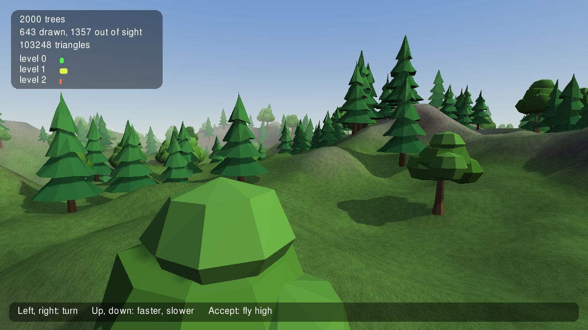
forest/main.as 71 lines
// Two thousand trees. What can't be seen isn't drawn, and what is far away is drawn more simply.
class ForestScreen : Screen
{
Font@ font = Assets::font("global:freesans.sfn", 22);
Model@ pine = Assets::model("global:model/pine.glb");
Model@ oak = Assets::model("global:model/oak.glb");
Vec3 eye(0, 14, 60);
float yaw = 0;
float speed = 12;
bool above = false;
float height = 0;
uint trees = 0;
void onEnter()
{
Space::land(5, 256, 1.6f, 30, 0.4f);
Space::landColors(Color(0.3f, 0.42f, 0.2f), Color(0.3f, 0.45f, 0.2f), Color(0.5f, 0.5f, 0.45f), Color(0.42f, 0.38f, 0.33f), -10, 24);
trees = App::platform == "Original Xbox" ? 500 : 2000;
for (uint i = 0; i < trees; i++)
{
float x = random(-190, 190), z = random(-190, 190);
Entity@ e = Space::spawn(Vec3(x, Space::height(x, z), z));
e.model(random(0, 1) < 0.65f ? pine : oak);
float size = random(0.8f, 1.7f);
e.size = Vec3(size, size * random(0.9f, 1.2f), size);
e.angles = Vec3(0, random(0, 360), 0);
}
Space::sky(Color(0.3f, 0.5f, 0.8f), Color(0.85f, 0.88f, 0.85f));
Space::fog(Color(0.85f, 0.88f, 0.85f), 60, 190);
Space::sun(Vec3(0.6f, 0.6f, 0.4f), Color(1, 0.93f, 0.78f));
Space::farthest(200);
Space::shadows(0.6f, 40);
}
void update(float dt)
{
yaw -= Input::move.x * 1.2f * dt + sin(App::time * 0.2f) * 0.1f * dt;
speed += (12 - Input::move.y * 14 - speed) * clamp(dt * 2, 0, 1);
if (Input::pressed("accept"))
above = !above;
eye += Vec3(-sin(yaw), 0, -cos(yaw)) * speed * dt;
// Round again before the edge.
if (eye.x > 160 || eye.x < -160 || eye.z > 160 || eye.z < -160)
yaw += dt * 1.5f;
eye = Vec3(clamp(eye.x, -185, 185), eye.y, clamp(eye.z, -185, 185));
float wanted = Space::height(eye.x, eye.z) + (above ? 45.0f : 8.0f);
eye.y += (wanted - eye.y) * clamp(dt * 1.5f, 0, 1);
float least = Space::height(eye.x, eye.z) + 2.5f;
eye.y = eye.y < least ? least : eye.y;
Space::camera(eye, eye + Vec3(-sin(yaw), above ? -0.6f : -0.12f, -cos(yaw)), 62);
}
void draw(Canvas@ c)
{
c.designHeight(720);
Space::draw(c);
c.roundRect(24, 22, 330, 172, 16, Color(0, 0, 0, 0.45f));
c.text(font, formatInt(int(trees)) + " trees", 44, 32);
c.text(font, formatInt(int(Space::drawn)) + " drawn, " + formatInt(int(Space::hidden)) + " out of sight", 44, 60);
c.text(font, formatInt(int(Space::triangles)) + " triangles", 44, 88);
for (uint i = 0; i < 3; i++)
{
float part = Space::drawn > 0 ? float(Space::drawnAt(i)) / float(Space::drawn) : 0.0f;
c.text(font, "level " + formatInt(int(i)), 44, 118 + float(i) * 23);
c.roundRect(130, 126 + float(i) * 23, 4 + 200 * part, 12, 4, hsv(0.33f - float(i) * 0.14f, 0.7f, 0.95f));
}
c.roundRect(20, 660, c.width - 40, 42, 12, Color(0, 0, 0, 0.45f));
c.text(font, "Left, right: turn Up, down: faster, slower Accept: " + (above ? "fly low" : "fly high"), 40, 668);
}
}
Split screen
Two robots, two cameras, one world
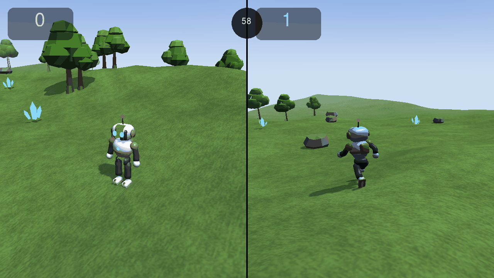
split/main.as 176 lines
// Two of them in the same world, each with a view of its own. The second is played by a second gamepad,
// or plays itself.
Sound@ chime = Assets::sound("global:sound/coin.wav");
array<int> scores = { 0, 0 };
class Gem : Behaviour
{
void update(float dt) { entity.turn(Vec3(0, 1, 0), 90 * dt); }
void onHit(Entity@ other)
{
scores[other.name == "second" ? 1 : 0]++;
chime.play(0.6f, other.name == "second" ? 0.5f : -0.5f);
// Somewhere else.
float x = random(-32, 32), z = random(-32, 32);
entity.place = Vec3(x, Space::height(x, z) + 0.3f, z);
}
}
class SplitScreen : Screen
{
Font@ font = Assets::font("global:freesans.sfn", 24);
Font@ big = Assets::font("global:freesans.sfn", 52);
Model@ robot = Assets::model("global:model/robot.glb");
Model@ crystal = Assets::model("global:model/crystal.glb");
Model@ tree = Assets::model("global:model/oak.glb");
Model@ rock = Assets::model("global:model/rock.glb");
array<Entity@> robots;
array<Entity@> gems;
array<float> yaws = { 0.6f, 3.4f };
array<Vec3> looks(2);
float left = 60;
void onEnter()
{
scores = { 0, 0 };
Space::land(3, 64, 1.5f, 10, 0.3f);
Space::landColors(Color(0.4f, 0.5f, 0.26f), Color(0.36f, 0.5f, 0.24f), Color(0.5f, 0.52f, 0.4f), Color(0.45f, 0.4f, 0.33f), -10, 12);
Space::sky(Color(0.3f, 0.5f, 0.85f), Color(0.8f, 0.87f, 0.95f));
Space::fog(Color(0.8f, 0.87f, 0.95f), 35, 90);
Space::sun(Vec3(0.5f, 0.8f, 0.3f), Color(0.95f, 0.9f, 0.8f));
Space::shadows(0.6f, 18);
for (int i = 0; i < 46; i++)
{
float x = random(-42, 42), z = random(-42, 42);
if (x * x + z * z < 60)
continue;
Entity@ e = Space::spawn(Vec3(x, Space::height(x, z), z));
e.model(i % 3 == 0 ? rock : tree);
float size = random(0.6f, 1.2f);
e.size = Vec3(size, size, size);
e.angles = Vec3(0, random(0, 360), 0);
if (i % 3 == 0)
e.sphere(0.85f, 2);
else
e.capsule(0.3f, 4, 2);
e.colliderAt = Vec3(0, i % 3 == 0 ? 0.2f : 2.0f, 0);
e.wall = true;
}
for (int i = 0; i < 14; i++)
{
float x = random(-30, 30), z = random(-30, 30);
Entity@ e = Space::spawn(Vec3(x, Space::height(x, z) + 0.3f, z));
e.model(crystal);
e.size = Vec3(0.8f, 0.8f, 0.8f);
e.sphere(0.9f, 3, 1 << 1);
e.colliderAt = Vec3(0, 0.6f, 0);
e.add(Gem());
gems.insertLast(e);
}
for (int i = 0; i < 2; i++)
{
float x = i == 0 ? -2 : 2;
Entity@ e = Space::spawn(Vec3(x, Space::height(x, 0), 0));
e.model(robot);
e.name = i == 0 ? "first" : "second";
if (i == 1)
e.color = Color(0.55f, 0.75f, 1);
e.capsule(0.35f, 1.6f, 1);
e.colliderAt = Vec3(0, 0.8f, 0);
e.walker = true;
e.shine = 0.4f;
robots.insertLast(e);
looks[uint(i)] = e.place;
}
}
void update(float dt)
{
left -= dt;
if (left < 0)
{
if (left < -5)
{
left = 60;
scores = { 0, 0 };
}
}
for (uint i = 0; i < 2; i++)
{
Vec2 stick = Input::move;
bool jump = Input::pressed("accept");
Vec3 side(cos(yaws[i]), 0, -sin(yaws[i]));
Vec3 ahead(-sin(yaws[i]), 0, -cos(yaws[i]));
Vec3 way = side * stick.x - ahead * stick.y;
if (i == 1)
{
jump = false;
way = Vec3(0, 0, 0);
if (Input::padConnected(1))
{
Vec2 pad = Input::padLeft(1);
way = side * pad.x + ahead * pad.y;
jump = Input::padButton(1, 8);
}
else
{
// To the nearest, round what is in the way.
float nearest = 1000;
for (uint n = 0; n < gems.length(); n++)
{
Vec3 d = gems[n].place - robots[1].place;
d.y = 0;
if (d.length() < nearest)
{
nearest = d.length();
way = d.normalized();
}
}
Vec3 hit;
Vec3 normal;
Vec3 chest = robots[1].place + Vec3(0, 0.8f, 0);
if (Space::raycast(chest, chest + way * 2.5f, hit, normal, 1 << 2))
way = (way + Vec3(-way.z, 0, way.x) * 1.4f).normalized();
way = way * 0.72f;
}
}
if (left < 0)
way = Vec3(0, 0, 0);
Vec3 motion = robots[i].motion;
motion.x += (way.x * 7 - motion.x) * clamp(10 * dt, 0, 1);
motion.z += (way.z * 7 - motion.z) * clamp(10 * dt, 0, 1);
if (jump && robots[i].onGround)
motion.y = 6;
robots[i].motion = motion;
float going = Vec3(motion.x, 0, motion.z).length();
if (way.length() > 0.1f)
robots[i].face(way, clamp(10 * dt, 0, 1));
bool won = left < 0 && scores[i] >= scores[1 - i];
robots[i].animate(won ? "dance" : !robots[i].onGround && abs(motion.y) > 2 ? "jump" : going > 4 ? "run" : going > 0.5f ? "walk" : "idle");
yaws[i] -= clamp(motion.dot(side) * 0.16f, -1.4f, 1.4f) * dt;
looks[i] = lerp(looks[i], robots[i].place + Vec3(0, 1.4f, 0), clamp(9 * dt, 0, 1));
}
}
void draw(Canvas@ c)
{
c.design(1280, 720);
for (uint i = 0; i < 2; i++)
{
Vec3 from = looks[i] + Vec3(sin(yaws[i]) * 6, 2.2f, cos(yaws[i]) * 6);
float least = Space::height(from.x, from.z) + 0.5f;
from.y = from.y < least ? least : from.y;
Space::camera(from, looks[i], 62);
Space::draw(c, float(i) * 642, 0, 638, 720);
c.roundRect(float(i) * 642 + 20, 20, 170, 84, 16, Color(0, 0, 0, 0.45f));
c.text(big, formatInt(scores[i]), float(i) * 642 + 105, 30, i == 0 ? Color(1, 0.8f, 0.5f) : Color(0.6f, 0.8f, 1), AlignCenter);
}
c.rect(638, 0, 4, 720, Black);
c.circle(640, 60, 40, Color(0, 0, 0, 0.8f));
c.text(font, formatInt(left > 0 ? int(left) + 1 : 0), 640, 44, left < 10 ? Red : White, AlignCenter);
if (left < 0)
c.text(big, scores[0] > scores[1] ? "Orange wins!" : scores[0] < scores[1] ? "Blue wins!" : "A draw!", 640, 300, Yellow, AlignCenter);
}
}
Endless land
Regions of a world that arrive and leave as you fly
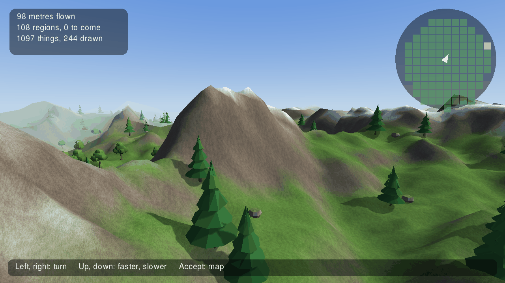
endless/main.as 139 lines
// Land without end. Regions of it are made in the background as the camera comes near, and go when it
// has left; what stands in them comes and goes with them. One place is read from a file.
class EndlessScreen : Screen
{
Font@ font = Assets::font("global:freesans.sfn", 22);
Model@ pine = Assets::model("global:model/pine.glb");
Model@ oak = Assets::model("global:model/oak.glb");
Model@ rock = Assets::model("global:model/rock.glb");
Vec3 eye(0, 20, 40);
float yaw = 0;
float bank = 0;
float speed = 18;
bool map = true;
float flown = 0;
array<int> xs; // of the regions that are here
array<int> zs;
array<float> ages;
uint arrivals = 0, departures = 0;
float most = 0;
void onEnter()
{
Space::endlessLand(77, 2, 40, 0.5f, App::platform == "Original Xbox" ? 3 : 5);
Space::landColors(Color(0.78f, 0.72f, 0.52f), Color(0.35f, 0.5f, 0.23f), Color(0.9f, 0.92f, 0.95f), Color(0.45f, 0.41f, 0.37f), 0.5f, 27);
Space::water(0, Color(0.14f, 0.38f, 0.52f, 0.85f));
Space::flatten(0, -30, 26, 4);
Space::sky(Color(0.25f, 0.48f, 0.85f), Color(0.78f, 0.86f, 0.92f));
Space::fog(Color(0.78f, 0.86f, 0.92f), 120, 320);
Space::farthest(400);
Space::sun(Vec3(0.6f, 0.6f, 0.4f), Color(1, 0.93f, 0.8f));
Space::ambient(Color(0.4f, 0.46f, 0.55f), Color(0.24f, 0.23f, 0.2f));
Space::shadows(0.6f, 50);
}
// The same things every time a region is made, from where it is.
float chance(int x, int z, int n)
{
float v = sin(float(x) * 12.9898f + float(z) * 78.233f + float(n) * 37.719f) * 43758.5453f;
return v - floor(v);
}
void fill(int x, int z)
{
float size = Space::regionSize;
for (int n = 0; n < 16; n++)
{
float px = (float(x) + chance(x, z, n)) * size, pz = (float(z) + chance(x, z, n + 100)) * size;
float y = Space::height(px, pz);
if (y < 1 || y > 26 || Space::normal(px, pz).y < 0.75f || (abs(px) < 22 && abs(pz + 30) < 22))
continue;
Entity@ e = Space::spawn(Vec3(px, y, pz));
e.model(n % 5 == 0 ? rock : y > 13 ? pine : oak);
float big = 0.9f + chance(x, z, n + 200) * 0.9f;
e.size = Vec3(big, big, big);
e.angles = Vec3(0, chance(x, z, n + 300) * 360, 0);
e.streamed = true;
}
// A village, from a file, in its own region.
if (x == 0 && z == -1)
Space::load("asset:village.json", Vec3(0, 0, -30), true);
}
void update(float dt)
{
int x, z;
bool arrived;
while (Space::nextRegion(x, z, arrived))
{
if (arrived)
{
arrivals++;
xs.insertLast(x);
zs.insertLast(z);
ages.insertLast(0);
fill(x, z);
continue;
}
departures++;
for (uint i = 0; i < xs.length(); i++)
if (xs[i] == x && zs[i] == z)
{
xs.removeAt(i);
zs.removeAt(i);
ages.removeAt(i);
break;
}
}
for (uint i = 0; i < ages.length(); i++)
ages[i] += dt;
float stick = Input::move.x + sin(App::time * 0.23f) * 0.2f;
bank += (stick - bank) * clamp(dt * 3, 0, 1);
yaw -= bank * 0.9f * dt;
speed += (18 - Input::move.y * 22 - speed) * clamp(dt * 2, 0, 1);
Vec3 ahead(-sin(yaw), 0, -cos(yaw));
eye += ahead * speed * dt;
flown += abs(speed) * dt;
// Over what is coming, not only what is here.
float highest = 2;
for (int i = 0; i < 5; i++)
{
float h = Space::height(eye.x + ahead.x * float(i) * 7, eye.z + ahead.z * float(i) * 7);
highest = h > highest ? h : highest;
}
eye.y += (highest + 9 - eye.y) * clamp(dt * 1.6f, 0, 1);
float least = Space::height(eye.x, eye.z) + 2;
eye.y = eye.y < least ? least : eye.y;
if (Input::pressed("accept"))
map = !map;
Space::camera(eye, eye + ahead + Vec3(0, -0.16f, 0), 64);
}
void draw(Canvas@ c)
{
c.designHeight(720);
Space::draw(c);
c.roundRect(24, 22, 300, 118, 16, Color(0, 0, 0, 0.45f));
c.text(font, formatInt(int(flown)) + " metres flown", 44, 32);
c.text(font, formatInt(int(Space::regions)) + " regions, " + formatInt(int(Space::regionsWaiting)) + " to come", 44, 60);
c.text(font, formatInt(int(Scene::count)) + " things, " + formatInt(int(Space::drawn)) + " drawn", 44, 88);
if (map)
{
float mx = c.width - 150, my = 150, scale = 20 / Space::regionSize;
c.circle(mx, my, 128, Color(0, 0, 0, 0.45f));
for (uint i = 0; i < xs.length(); i++)
{
float fx = (float(xs[i]) * Space::regionSize - eye.x) * scale, fz = (float(zs[i]) * Space::regionSize - eye.z) * scale;
float fresh = clamp(1 - ages[i], 0, 1);
if (fx * fx + fz * fz < 118 * 118)
c.rect(mx + fx + 1, my + fz + 1, 18, 18, lerp(Color(0.35f, 0.6f, 0.4f, 0.7f), Color(1, 0.9f, 0.4f), fresh));
}
float s = sin(yaw), k = cos(yaw);
c.triangle(Vec2(mx - s * 14, my - k * 14), Vec2(mx - k * 8 + s * 8, my + s * 8 + k * 8), Vec2(mx + k * 8 + s * 8, my - s * 8 + k * 8), White, White, White);
}
c.roundRect(20, 660, c.width - 40, 42, 12, Color(0, 0, 0, 0.45f));
c.text(font, "Left, right: turn Up, down: faster, slower Accept: map", 40, 668);
}
}
Embers
Fire, smoke, snow and sparks in space

embers/main.as 150 lines
// Particles in space. How each kind looks is in scene.json; a burst throws some, and an emitter keeps on.
class EmbersScreen : Screen
{
Font@ font = Assets::font("global:freesans.sfn", 24);
Font@ big = Assets::font("global:freesans.sfn", 40);
Sound@ fire = Assets::sound("global:sound/fire.wav");
Sound@ boom = Assets::sound("global:sound/boom.wav");
Sound@ water = Assets::sound("global:sound/waves.wav");
Model@ campfire = Assets::model("global:model/campfire.glb");
Model@ rock = Assets::model("global:model/rock.glb");
array<string> names = { "Campfire", "Explosions", "Fountain", "Snow", "Fireworks" };
array<Entity@> things;
int kind = 0;
float at = 0, around = 0, next = 0;
void onEnter()
{
Scene::load("asset:scene.json");
Mesh@ floor = Mesh();
floor.plane(60, 60, 40, Color(0.42f, 0.44f, 0.48f));
Space::spawn(Vec3(0, 0, 0)).mesh(floor);
Space::ground(0);
Space::shadows(0.6f, 14);
build();
}
Entity@ add(Entity@ e)
{
things.insertLast(e);
return e;
}
void build()
{
for (uint i = 0; i < things.length(); i++)
things[i].destroy();
things.resize(0);
// Snow falls for a long time, and would leave no room for anything else.
Scene::clearParticles();
next = 0;
bool dark = kind != 3;
Space::sky(dark ? Color(0.02f, 0.025f, 0.06f) : Color(0.3f, 0.36f, 0.46f), dark ? Color(0.07f, 0.07f, 0.13f) : Color(0.5f, 0.56f, 0.64f));
Space::fog(dark ? Color(0.06f, 0.06f, 0.12f) : Color(0.5f, 0.56f, 0.64f), 14, 34);
Space::sun(Vec3(0.4f, 0.8f, 0.5f), dark ? Color(0.3f, 0.34f, 0.5f) : Color(0.6f, 0.62f, 0.68f));
Space::ambient(dark ? Color(0.17f, 0.18f, 0.28f) : Color(0.5f, 0.53f, 0.6f), dark ? Color(0.05f, 0.05f, 0.07f) : Color(0.35f, 0.35f, 0.38f));
if (kind == 0)
{
add(Space::spawn(Vec3(0, 0, 0))).model(campfire);
Entity@ flame = add(Space::spawn(Vec3(0, 0.25f, 0)));
flame.emit("flame", 60);
flame.sound(fire, 0.9f, 16);
add(Space::spawn(Vec3(0, 0.6f, 0))).emit("spark", 14);
add(Space::spawn(Vec3(0, 1.4f, 0))).emit("smoke", 9);
}
else if (kind == 2)
{
Entity@ bowl = add(Space::spawn(Vec3(0, 0.25f, 0)));
bowl.shape(SolidCylinder, Color(0.5f, 0.5f, 0.55f));
bowl.size = Vec3(3, 0.5f, 3);
Entity@ jet = add(Space::spawn(Vec3(0, 0.6f, 0)));
jet.emit("drop", 160);
jet.sound(water, 0.6f, 18);
for (int i = 0; i < 6; i++)
{
Entity@ side = add(Space::spawn(Vec3(sin(float(i) * 1.047f) * 1.2f, 0.5f, cos(float(i) * 1.047f) * 1.2f)));
side.angles = Vec3(cos(float(i) * 1.047f) * -24, 0, sin(float(i) * 1.047f) * 24);
side.emit("jet", 36);
}
Entity@ lamp = add(Space::spawn(Vec3(0, 1.4f, 0)));
lamp.light(Color(0.3f, 0.8f, 1.2f), 9);
}
else if (kind == 3)
{
for (int x = -2; x <= 2; x++)
for (int z = -2; z <= 2; z++)
{
Vec3 p(float(x) * 4, 7, float(z) * 4);
add(Space::spawn(p)).emit("snow", 14);
// It has been falling for some time already.
for (int down = 0; down < 6; down++)
Space::burst("snow", p - Vec3(0, float(down) * 1.2f, 0), 7);
}
for (int i = 0; i < 9; i++)
{
Entity@ e = add(Space::spawn(Vec3(sin(float(i) * 2.4f) * (2 + float(i) * 0.6f), 0, cos(float(i) * 2.4f) * (2 + float(i) * 0.6f))));
e.model(rock);
e.size = Vec3(1, 1, 1) * (0.5f + float(i % 3) * 0.3f);
e.color = Color(0.95f, 1, 1.1f);
}
}
}
void blast()
{
Vec3 p(random(-3, 3), random(0.5f, 2.5f), random(-3, 3));
Space::burst("fireball", p, 34);
Space::burst("ash", p, 16);
Space::burst("shrapnel", p, 40);
boom.playAt(p, 0.7f, 30, random(0.8f, 1.2f));
Entity@ flash = Space::spawn(p);
flash.light(Color(2.5f, 1.4f, 0.5f), 12);
flash.lifetime = 0.12f;
}
void rocket()
{
Vec3 p(random(-4, 4), random(5, 7.5f), random(-4, 4));
string colour = "star" + formatInt(randomInt(1, 4));
Space::burst(colour, p, 130);
boom.playAt(p, 0.35f, 40, random(1.2f, 1.7f));
}
void update(float dt)
{
at += dt;
around += (Input::move.x * 1.4f + 0.12f) * dt;
int way = (Input::pressed("right") ? 1 : 0) - (Input::pressed("left") ? 1 : 0);
if (way != 0)
{
kind = (kind + way + int(names.length())) % int(names.length());
build();
}
next -= dt;
if (kind == 1 && (next < 0 || Input::pressed("accept")))
{
blast();
next = random(0.5f, 1.1f);
}
if (kind == 4 && (next < 0 || Input::pressed("accept")))
{
rocket();
next = random(0.35f, 0.9f);
}
if (kind == 0 && things.length() > 1)
things[1].light(Color(2.4f, 1.2f, 0.45f), 10 + sin(at * 11) * 0.7f + sin(at * 17.3f) * 0.5f);
Space::camera(Vec3(sin(around) * 7, 2.6f + (kind == 4 ? 0.5f : 0.0f), cos(around) * 7), Vec3(0, kind == 4 ? 4.0f : 1.4f, 0), 58);
}
void draw(Canvas@ c)
{
c.designHeight(720);
Space::draw(c);
if (kind != 3)
c.bloom(0.75f, 0.6f);
c.text(big, names[uint(kind)], 44, 36);
c.text(font, formatInt(int(Scene::particles)) + " particles", 46, 90, Color(0.75f, 0.8f, 0.9f));
c.text(font, "Left, right: another" + (kind == 1 || kind == 4 ? " Accept: again" : ""), c.width * 0.5f, 668, Color(0.75f, 0.8f, 0.9f), AlignCenter);
}
}
Scene editor
Build a place, try it and keep it

editor/main.as 1176 lines
// A scene editor, written as any screen is. What it makes is a file that Space::load reads.
class Kind
{
string label, key, name;
Vec3 low, high;
Kind(const string &in l, const string &in k, const string &in n, const Vec3 &in a, const Vec3 &in b)
{
label = l; key = k; name = n; low = a; high = b;
}
}
class Thing
{
Json@ json;
Entity@ entity;
Thing(Json@ j) { @json = j; }
}
class EditorScreen : Screen
{
Font@ font = Assets::font("global:freesans.sfn", 20);
string file = "asset:scene.json";
array<Kind@> kinds = {
Kind("House", "model", "house", Vec3(-3.5f, -0.4f, -3.1f), Vec3(3.5f, 6, 4.2f)),
Kind("Well", "model", "well", Vec3(-1.2f, -0.4f, -1), Vec3(1.2f, 3.2f, 1)),
Kind("Lantern", "model", "lantern", Vec3(-0.3f, -0.2f, -0.3f), Vec3(0.3f, 3.4f, 0.3f)),
Kind("Campfire", "model", "campfire", Vec3(-0.9f, -0.1f, -0.9f), Vec3(0.9f, 0.5f, 0.9f)),
Kind("Gate", "model", "gate", Vec3(-4.9f, -4.9f, -0.4f), Vec3(4.9f, 4.9f, 0.4f)),
Kind("Oak", "model", "oak", Vec3(-1.8f, -0.4f, -1.9f), Vec3(2, 5.1f, 1.9f)),
Kind("Pine", "model", "pine", Vec3(-1.7f, -0.4f, -1.8f), Vec3(1.7f, 6, 1.7f)),
Kind("Bush", "model", "bush", Vec3(-0.9f, -0.2f, -0.9f), Vec3(1, 0.8f, 0.6f)),
Kind("Rock", "model", "rock", Vec3(-1, -0.3f, -1), Vec3(1, 0.9f, 1.1f)),
Kind("Mushroom", "model", "mushroom", Vec3(-0.3f, -0.1f, -0.3f), Vec3(0.3f, 0.6f, 0.3f)),
Kind("Crystal", "model", "crystal", Vec3(-0.6f, -0.1f, -0.6f), Vec3(0.7f, 1.2f, 0.3f)),
Kind("Robot", "model", "robot", Vec3(-0.5f, 0, -0.3f), Vec3(0.5f, 2.1f, 0.3f)),
Kind("Skimmer", "model", "skimmer", Vec3(-1.5f, -0.3f, -1.8f), Vec3(1.5f, 0.9f, 2)),
Kind("Box", "shape", "box", Vec3(-0.5f, -0.5f, -0.5f), Vec3(0.5f, 0.5f, 0.5f)),
Kind("Ball", "shape", "sphere", Vec3(-0.5f, -0.5f, -0.5f), Vec3(0.5f, 0.5f, 0.5f)),
Kind("Cylinder", "shape", "cylinder", Vec3(-0.5f, -0.5f, -0.5f), Vec3(0.5f, 0.5f, 0.5f)),
Kind("Cone", "shape", "cone", Vec3(-0.5f, -0.5f, -0.5f), Vec3(0.5f, 0.5f, 0.5f)),
Kind("Ring", "shape", "torus", Vec3(-0.5f, -0.2f, -0.5f), Vec3(0.5f, 0.2f, 0.5f)),
Kind("Capsule", "shape", "capsule", Vec3(-0.5f, -1, -0.5f), Vec3(0.5f, 1, 0.5f)),
Kind("Light", "glow", "", Vec3(-0.4f, -0.4f, -0.4f), Vec3(0.4f, 0.4f, 0.4f))
};
array<Model@> models;
array<Color> colors = { Color(1, 1, 1), Color(0.35f, 0.37f, 0.42f), Color(0.9f, 0.3f, 0.26f), Color(0.97f, 0.62f, 0.2f), Color(0.98f, 0.86f, 0.35f),
Color(0.38f, 0.75f, 0.36f), Color(0.3f, 0.75f, 0.85f), Color(0.3f, 0.48f, 0.95f), Color(0.66f, 0.4f, 0.9f), Color(0.95f, 0.5f, 0.72f) };
array<string> grounds = { "Flat", "Hills", "Island" };
array<string> hours = { "Day", "Evening", "Night" };
array<string> tools = { "Move", "Turn", "Size" };
array<Thing@> things;
array<Entity@> thrown;
int chosen = -1, under = -1;
int ground = 0, hour = 0, tool = 0;
bool snap = true, playing = false, viewing = false, flying = false, dirty = false;
// What there was, as text.
array<string> before, after;
string now, lastKey;
float lastAt = 0;
uint most = 40;
Vec3 eye(0, 7, 17);
float yaw = 0, pitch = -20;
Vec2 mouse;
bool left = false, carrying = false;
int axis = -1, hover = -1; // 0 to 2; 3 is the middle
bool dragging = false;
Vec3 offset, startPlace, startAngles, startSize;
Vec2 startMouse;
float startAlong = 0;
array<bool> keys = { false, false, false, false, false, false };
array<bool> pads = { false, false, false, false };
Vec2 crossAt;
float shownFor = 0;
Widget@ last;
Widget@ inspector;
Widget@ nothing;
Widget@ title;
array<Widget@> places;
Widget@ turn;
Widget@ size;
Widget@ range;
Widget@ rangeRow;
Widget@ onLand;
Widget@ solid;
Widget@ falls;
Widget@ glows;
Widget@ toolButton;
Widget@ groundChoice;
Widget@ hourChoice;
Widget@ count;
Widget@ undoButton;
Widget@ redoButton;
EditorScreen()
{
for (uint i = 0; i < kinds.length(); i++)
models.insertLast(kinds[i].key == "model" ? Assets::model("global:model/" + kinds[i].name + ".glb") : null);
most = App::freeKilobytes > 0 && App::freeKilobytes < 64000 ? 12 : 40;
}
void onEnter()
{
Ui::theme("asset:theme.json");
build();
Json j;
string error;
if (!j.parse(Assets::read(file), error))
Ui::toast(error);
read(j);
eye.y += Space::height(0, 0);
now = write().write(true);
select(-1);
}
// --- The panels ---
void build()
{
Widget@ page = Ui::root;
page.padding = 14;
page.gap = 10;
Widget@ top = page.row(8);
@toolButton = top.button(tools[0], WidgetEvent(this.onTool));
toolButton.width = 110;
@undoButton = top.button("Undo", WidgetEvent(this.onUndo));
@redoButton = top.button("Redo", WidgetEvent(this.onRedo));
top.space();
@count = top.label("", "plain");
top.button("Play", WidgetEvent(this.onPlay));
top.button("Save", WidgetEvent(this.onSave));
Widget@ sides = page.row(0);
sides.grow = 1;
sides.align = PlaceStretch;
Widget@ first = sides.panel();
first.style = "side";
first.width = 216;
Widget@ tabs = first.tabs();
tabs.grow = 1;
Widget@ add = tabs.tab("Add");
Widget@ list = add.list(kinds.length(), 42, WidgetRow(this.fill));
list.grow = 1;
list.onClick(WidgetEvent(this.onAdd));
Widget@ scene = tabs.tab("Scene");
scene.label("Ground", "small");
@groundChoice = scene.choice(grounds, 0, WidgetEvent(this.onGround));
scene.label("Time", "small");
@hourChoice = scene.choice(hours, 0, WidgetEvent(this.onHour));
scene.toggle("Snap", true, WidgetEvent(this.onSnap));
scene.button("As saved", WidgetEvent(this.onRevert));
scene.button("Clear", WidgetEvent(this.onClear));
if (!App::development)
scene.button("Start again", WidgetEvent(this.onFresh));
sides.space();
Widget@ other = sides.panel();
other.style = "side";
other.width = 286;
@nothing = other.paragraph("Add something, or choose something in the view.", "small");
@inspector = other.scroll(8);
inspector.grow = 1;
@title = inspector.label("", "heading");
Widget@ row = inspector.row(6);
for (uint i = 0; i < 3; i++)
{
Widget@ f = row.field("", "", WidgetEvent(this.onPlace));
f.style = "cell";
f.numeric = true;
f.grow = 1;
f.tag = int(i);
f.onDone(WidgetEvent(this.onPlace));
places.insertLast(f);
}
inspector.label("Turn", "small");
@turn = inspector.slider(0, 0, 345, WidgetEvent(this.onTurn));
turn.step = 15;
inspector.label("Size", "small");
@size = inspector.slider(1, 0.1f, 6, WidgetEvent(this.onSize));
size.step = 0.1f;
@rangeRow = inspector.column(6);
rangeRow.label("Reach of its light", "small");
@range = rangeRow.slider(8, 2, 24, WidgetEvent(this.onRange));
range.step = 1;
Widget@ swatches = inspector.grid(5, 6);
for (uint i = 0; i < colors.length(); i++)
{
Widget@ b = swatches.button("", WidgetEvent(this.onColor));
b.style = "swatch";
b.tag = int(i);
Widget@ c = b.custom(WidgetDraw(this.swatch));
c.height = 22;
c.grow = 1;
}
@onLand = inspector.toggle("On the land", true, WidgetEvent(this.onToggle));
@solid = inspector.toggle("Solid", false, WidgetEvent(this.onToggle));
@falls = inspector.toggle("Falls", false, WidgetEvent(this.onToggle));
@glows = inspector.toggle("Glows", false, WidgetEvent(this.onToggle));
Widget@ two = inspector.row(8);
Widget@ copy = two.button("Copy", WidgetEvent(this.onCopy));
copy.grow = 1;
Widget@ remove = two.button("Delete", WidgetEvent(this.onDelete));
remove.grow = 1;
list.focus();
}
void fill(Widget@ row, int i) { row.label(kinds[uint(i)].label); }
void swatch(Canvas@ c, Widget@ w)
{
Vec2 p = w.place, s = w.size;
c.roundRect(p.x, p.y, s.x, s.y, 5, colors[uint(w.parent.tag)]);
}
// What the panel says, from what is chosen.
void show()
{
count.text = "" + things.length() + " things" + (dirty ? " *" : "") + " " ;
undoButton.enabled = before.length() > 0;
redoButton.enabled = after.length() > 0;
toolButton.text = tools[uint(tool)];
inspector.visible = chosen >= 0;
nothing.visible = chosen < 0;
if (chosen < 0)
return;
Json@ j = things[uint(chosen)].json;
title.text = kindOf(j).label;
Vec3 p = j["place"].vec3();
places[0].text = number(p.x);
places[1].text = number(p.y);
places[2].text = number(p.z);
turn.value = wrapped(angles(j).y);
size.value = sizes(j).x;
rangeRow.visible = j.has("light");
range.value = float(j["range"].number(8));
onLand.checked = j["onLand"].flag();
solid.checked = j["wall"].flag();
falls.checked = j["mass"].number() > 0;
glows.checked = j["glowing"].number() > 0;
bool thing = !j.has("glow");
solid.visible = thing;
falls.visible = thing;
glows.visible = thing;
}
string number(float v) { return formatFloat(floor(v * 100 + 0.5f) / 100, "", 0, 2); }
float wrapped(float a) { a = a % 360; return a < 0 ? a + 360 : a; }
void onTool(Widget@ w) { tool = (tool + 1) % 3; show(); }
void onSnap(Widget@ w) { snap = w.checked; }
void onUndo(Widget@ w) { undo(); }
void onRedo(Widget@ w) { redo(); }
void onPlay(Widget@ w) { play(true); }
void onAdd(Widget@ w) { add(uint(w.chosen)); }
void onGround(Widget@ w) { ground = w.chosen; land(); place(); changed("ground"); }
void onHour(Widget@ w) { hour = w.chosen; light(); changed("hour"); }
void onCopy(Widget@ w) { copy(); }
void onDelete(Widget@ w) { remove(); }
void onSave(Widget@ w)
{
if (!Assets::write(file, write().write()))
{
Ui::toast("It couldn't be saved");
return;
}
dirty = false;
Ui::toast(App::development ? "Saved" : "Saved, on this machine");
show();
}
void onClear(Widget@ w) { Ui::dialog("Clear", "Take everything away? It can be undone.", array<string> = { "Clear", "Keep" }, WidgetAnswer(this.clear)); }
void clear(int answer)
{
if (answer == 0)
{
Json j;
j.set("ground", ground);
j.set("hour", hour);
read(j);
changed("clear");
}
}
void onRevert(Widget@ w)
{
Json j;
string error;
if (j.parse(Assets::read(file), error))
{
read(j);
changed("revert");
dirty = false;
show();
}
}
// Back to what came with it.
void onFresh(Widget@ w) { Ui::dialog("Start again", "Go back to the first scene? What was saved is lost. Undo brings back what is here now.", array<string> = { "Start again", "Keep" }, WidgetAnswer(this.fresh)); }
void fresh(int answer)
{
if (answer == 0)
{
Assets::forget(file);
onRevert(null);
}
}
void onPlace(Widget@ w)
{
if (chosen < 0)
return;
Json@ j = things[uint(chosen)].json;
j.set("place", Vec3(parseFloat(places[0].text), parseFloat(places[1].text), parseFloat(places[2].text)));
put(things[uint(chosen)]);
changed("place", false);
}
void onTurn(Widget@ w)
{
if (chosen < 0)
return;
Json@ j = things[uint(chosen)].json;
Vec3 a = angles(j);
a.y = w.value;
j.set("angles", a);
put(things[uint(chosen)]);
changed("turn", false);
}
void onSize(Widget@ w)
{
if (chosen < 0)
return;
Json@ j = things[uint(chosen)].json;
Vec3 s = sizes(j);
s = s * (w.value / (s.x > 0.01f ? s.x : 1.0f));
resize(j, s);
put(things[uint(chosen)]);
changed("size", false);
}
void onRange(Widget@ w)
{
if (chosen < 0)
return;
things[uint(chosen)].json.set("range", w.value);
make(uint(chosen));
changed("range", false);
}
void onColor(Widget@ w)
{
if (chosen < 0)
return;
Json@ j = things[uint(chosen)].json;
Color c = colors[uint(w.tag)];
if (j.has("light"))
j.set("light", c);
j.set("color", j.has("glow") ? fade(c, 0.6f) : c);
make(uint(chosen));
changed("color");
}
void onToggle(Widget@ w)
{
if (chosen < 0)
return;
Thing@ t = things[uint(chosen)];
Json@ j = t.json;
if (onLand.checked != j["onLand"].flag())
{
// It stays where it is.
Vec3 p = j["place"].vec3();
p.y += (onLand.checked ? -1 : 1) * Space::height(p.x, p.z);
j.set("place", p);
j.set("onLand", onLand.checked);
}
setIf(j, "wall", solid.checked);
setNumberIf(j, "mass", falls.checked, 2);
setNumberIf(j, "glowing", glows.checked, 0.8f);
make(uint(chosen));
changed("toggle");
}
void setIf(Json@ j, const string &in key, bool on)
{
if (on)
j.set(key, true);
else
j.remove(key);
}
void setNumberIf(Json@ j, const string &in key, bool on, float value)
{
if (on != (j[key].number() > 0))
{
j.remove(key);
if (on)
j.set(key, value);
}
}
// --- What there is ---
Kind@ kindOf(Json@ j)
{
string model = j["model"].text(), shape = j["shape"].text();
for (uint i = 0; i < kinds.length(); i++)
{
Kind@ k = kinds[i];
if (k.key == "model" ? model == "global:model/" + k.name + ".glb" : k.key == "shape" && shape == k.name)
return k;
}
return kinds[kinds.length() - 1];
}
Vec3 angles(Json@ j) { return j["angles"].isNumber ? Vec3(0, float(j["angles"].number()), 0) : j["angles"].vec3(); }
Vec3 sizes(Json@ j)
{
if (j.has("glow"))
return Vec3(1, 1, 1) * float(j["glow"].number(1));
return j["size"].isNumber ? Vec3(1, 1, 1) * float(j["size"].number()) : j["size"].vec3(Vec3(1, 1, 1));
}
void resize(Json@ j, Vec3 s)
{
s = Vec3(clamp(s.x, 0.05f, 40), clamp(s.y, 0.05f, 40), clamp(s.z, 0.05f, 40));
if (j.has("glow"))
j.set("glow", s.x);
else
j.set("size", s);
}
Vec3 worldPlace(Json@ j)
{
Vec3 p = j["place"].vec3();
if (j["onLand"].flag())
p.y += Space::height(p.x, p.z);
return p;
}
Json@ write()
{
Json all;
all.set("ground", ground);
all.set("hour", hour);
Json list;
for (uint i = 0; i < things.length(); i++)
list.add(things[i].json);
all.set("entities", list);
return all;
}
void read(Json@ all)
{
for (uint i = 0; i < things.length(); i++)
if (things[i].entity !is null)
things[i].entity.destroy();
things.resize(0);
chosen = -1;
ground = int(clamp(float(all["ground"].number()), 0, 2));
hour = int(clamp(float(all["hour"].number()), 0, 2));
groundChoice.chosen = ground;
hourChoice.chosen = hour;
land();
light();
Json@ list = all["entities"];
for (uint i = 0; i < list.count; i++)
{
things.insertLast(Thing(list[i]));
make(i);
}
show();
}
// Makes its entity again. While editing it only looks like what it is, and has something round it to point at.
void make(uint i)
{
Thing@ t = things[i];
if (t.entity !is null)
t.entity.destroy();
Json j;
j.copy(t.json);
Kind@ k = kindOf(j);
Vec3 s = sizes(j);
Vec3 wide((k.high.x - k.low.x) * s.x, (k.high.y - k.low.y) * s.y, (k.high.z - k.low.z) * s.z);
Vec3 middle((k.high.x + k.low.x) * 0.5f * s.x, (k.high.y + k.low.y) * 0.5f * s.y, (k.high.z + k.low.z) * 0.5f * s.z);
if (!playing)
{
array<string> still = { "mass", "walker", "gravity", "wall", "sphere", "cube", "capsule", "behaviour", "group", "hits", "colliderAt", "friction", "bounce", "drag" };
for (uint n = 0; n < still.length(); n++)
j.remove(still[n]);
@t.entity = Space::make(j);
t.entity.cube(j.has("glow") ? Vec3(1, 1, 1) : wide, 1, 0);
t.entity.colliderAt = j.has("glow") ? Vec3() : middle;
return;
}
@t.entity = Space::make(j);
if (j["wall"].flag() || j["mass"].number() > 0)
{
if (j["shape"].text() == "sphere")
t.entity.sphere(wide.x * 0.5f, 0, 0);
else
t.entity.cube(wide, 0, 0);
t.entity.colliderAt = middle;
t.entity.wall = true;
if (j["mass"].number() > 0)
{
t.entity.wall = false;
t.entity.mass = float(j["mass"].number());
t.entity.gravity = 1;
t.entity.friction = 0.6f;
t.entity.bounce = j["shape"].text() == "sphere" ? 0.5f : 0.1f;
}
}
}
// Puts its entity where it is.
void put(Thing@ t)
{
t.entity.place = worldPlace(t.json);
t.entity.angles = angles(t.json);
t.entity.size = sizes(t.json);
}
void place()
{
for (uint i = 0; i < things.length(); i++)
put(things[i]);
}
void land()
{
if (ground == 0)
{
Space::land(1, 32, 4, 0.001f);
Space::landColors(Color(0.42f, 0.56f, 0.34f), Color(0.42f, 0.56f, 0.34f), Color(0.42f, 0.56f, 0.34f), Color(0.4f, 0.4f, 0.4f), -1, 1);
}
else
{
Space::land(ground == 1 ? 7 : 12, 64, 2, ground == 1 ? 7 : 12, 0.45f, ground == 2);
Space::landColors(Color(0.78f, 0.7f, 0.48f), Color(0.36f, 0.52f, 0.28f), Color(0.5f, 0.56f, 0.36f), Color(0.45f, 0.42f, 0.4f), ground == 2 ? 0.8f : -20, 7);
// Room to build on.
Space::flatten(0, 0, 24, ground == 2 ? 2.5f : Space::height(0, 0));
}
Space::water(ground == 2 ? 0.0f : -60, Color(0.16f, 0.4f, 0.5f, 0.8f));
}
void light()
{
Color top = hour == 0 ? Color(0.25f, 0.5f, 0.85f) : hour == 1 ? Color(0.25f, 0.24f, 0.45f) : Color(0.015f, 0.02f, 0.06f);
Color low = hour == 0 ? Color(0.72f, 0.83f, 0.92f) : hour == 1 ? Color(0.95f, 0.6f, 0.4f) : Color(0.07f, 0.09f, 0.17f);
Space::sky(top, low);
Space::fog(low, 60, 170);
Space::farthest(180);
Space::sun(hour == 1 ? Vec3(0.8f, 0.3f, -0.4f) : Vec3(0.45f, 0.8f, 0.4f), hour == 0 ? Color(0.95f, 0.9f, 0.8f) : hour == 1 ? Color(0.9f, 0.5f, 0.3f) : Color(0.16f, 0.2f, 0.32f));
Space::ambient(hour == 0 ? Color(0.42f, 0.46f, 0.55f) : hour == 1 ? Color(0.34f, 0.3f, 0.4f) : Color(0.12f, 0.14f, 0.24f), hour == 0 ? Color(0.25f, 0.24f, 0.2f) : Color(0.1f, 0.09f, 0.1f));
Space::shadows(hour == 2 ? 0.35f : 0.6f, 34);
}
// --- Undoing ---
// Once for each change. What goes on changing, such as a slider, is one.
void changed(const string &in key, bool apart = true)
{
string text = write().write(true);
if (text == now)
{
show();
return;
}
string named = key + chosen;
if (apart || named != lastKey || App::time - lastAt > 1.5f || before.length() == 0)
{
before.insertLast(now);
if (before.length() > most)
before.removeAt(0);
}
lastKey = apart ? "" : named;
lastAt = App::time;
now = text;
after.resize(0);
dirty = true;
show();
}
void back(const string &in text)
{
int was = chosen;
Json j;
string error;
if (j.parse(text, error))
{
read(j);
now = text;
dirty = true;
lastKey = "";
select(was < int(things.length()) ? was : -1);
}
}
void undo()
{
if (before.length() == 0)
return;
after.insertLast(now);
string text = before[before.length() - 1];
before.removeLast();
back(text);
}
void redo()
{
if (after.length() == 0)
return;
before.insertLast(now);
string text = after[after.length() - 1];
after.removeLast();
back(text);
}
// --- Doing things ---
void select(int i)
{
chosen = i;
show();
}
void add(uint which)
{
if (things.length() >= 150)
{
Ui::toast("That is enough for one scene");
return;
}
Kind@ k = kinds[which];
Vec3 p;
Vec3 ahead = look();
if (!onGround(eye, ahead, p) || (p - eye).length() > 40)
p = eye + Vec3(ahead.x, 0, ahead.z).normalized() * 14;
Json j;
if (k.key == "model")
j.set("model", "global:model/" + k.name + ".glb");
else if (k.key == "shape")
{
j.set("shape", k.name);
j.set("color", Color(0.97f, 0.62f, 0.2f));
}
else
{
j.set("glow", 1.2f);
j.set("color", Color(1, 0.8f, 0.5f, 0.6f));
j.set("light", Color(1, 0.75f, 0.45f));
j.set("range", 9);
}
j.set("place", snapped(Vec3(p.x, k.key == "model" ? 0.0f : k.key == "shape" ? -k.low.y : 1.5f, p.z)));
j.set("onLand", true);
things.insertLast(Thing(j));
make(things.length() - 1);
select(int(things.length()) - 1);
changed("add");
}
void copy()
{
if (chosen < 0 || things.length() >= 150)
return;
Json j;
j.copy(things[uint(chosen)].json);
Kind@ k = kindOf(j);
j.set("place", j["place"].vec3() + Vec3((k.high.x - k.low.x) * sizes(j).x + 0.3f, 0, 0));
things.insertLast(Thing(j));
make(things.length() - 1);
select(int(things.length()) - 1);
changed("copy");
}
void remove()
{
if (chosen < 0)
return;
things[uint(chosen)].entity.destroy();
things.removeAt(uint(chosen));
select(-1);
changed("remove");
}
void play(bool on)
{
playing = on;
for (uint i = 0; i < thrown.length(); i++)
thrown[i].destroy();
thrown.resize(0);
for (uint i = 0; i < things.length(); i++)
make(i);
shownFor = 0;
}
void throwBall()
{
if (thrown.length() >= 12)
{
thrown[0].destroy();
thrown.removeAt(0);
}
Entity@ e = Space::spawn(eye + look() * 1.5f);
e.shape(SolidSphere, colors[2 + thrown.length() % 8]);
e.size = Vec3(0.7f, 0.7f, 0.7f);
e.sphere(0.35f, 0, 0);
e.mass = 3;
e.gravity = 1;
e.bounce = 0.5f;
e.friction = 0.5f;
e.motion = look() * 22;
thrown.insertLast(e);
}
Vec3 look()
{
float y = yaw * 0.0174533f, p = pitch * 0.0174533f;
return Vec3(sin(y) * cos(p), sin(p), -cos(y) * cos(p));
}
bool onGround(const Vec3 &in from, const Vec3 &in along, Vec3 &out hit)
{
Vec3 normal;
return Space::raycast(from, from + along * 220, hit, normal, 1);
}
Vec3 snapped(Vec3 p)
{
if (snap)
{
p.x = floor(p.x * 2 + 0.5f) * 0.5f;
p.z = floor(p.z * 2 + 0.5f) * 0.5f;
}
return p;
}
int at(const Vec3 &in along)
{
Vec3 hit;
Entity@ e = Space::pick(eye, eye + along * 160, hit, 2);
for (uint i = 0; e !is null && i < things.length(); i++)
if (things[i].entity is e)
return int(i);
return -1;
}
// --- Moving about ---
bool tapped(uint which, const string &in name)
{
bool down = Input::key(name), was = keys[which];
keys[which] = down;
return down && !was;
}
bool padTapped(uint which, uint button)
{
bool down = Input::padButton(0, button), was = pads[which];
pads[which] = down;
return down && !was;
}
void fly(const Vec2 &in move, float up, float dt)
{
Vec3 ahead = look();
Vec3 right = ahead.cross(Vec3(0, 1, 0)).normalized();
eye += (right * move.x - ahead * move.y + Vec3(0, up, 0)) * (dt * 12);
eye = Vec3(clamp(eye.x, -110, 110), clamp(eye.y, -2, 60), clamp(eye.z, -110, 110));
float least = Space::height(eye.x, eye.z) + 0.6f;
eye.y = eye.y < least ? least : eye.y;
}
void turnBy(float x, float y)
{
yaw += x;
pitch = clamp(pitch + y, -86, 70);
}
void update(float dt)
{
shownFor += dt;
Vec2 m = Input::mouse;
Vec2 moved = m - mouse;
mouse = m;
bool right = Input::mouseDown(1) && Input::hasMouse, pressed = Input::mouseDown(0) && !left;
left = Input::mouseDown(0);
if (right && !Ui::busy)
turnBy(moved.x * 0.22f, -moved.y * 0.22f);
Vec2 stick = Input::padRight(0);
turnBy(stick.x * dt * 110, stick.y * dt * 80);
Vec2 triggers = Input::padTriggers(0);
// With the right button held, keys move the camera instead.
Vec2 move = Input::move;
bool wasFlying = flying;
flying = right && (wasFlying || move.x != 0 || move.y != 0);
bool free = viewing || playing;
if (free || flying)
fly(move, free ? triggers.y - triggers.x : 0.0f, dt);
if (!Ui::busy && overView(mouse) && Input::wheel != 0)
eye += look() * (Input::wheel * 1.5f);
if (Input::mouseDown(2) && Input::hasMouse && !Ui::busy)
{
Vec3 side = look().cross(Vec3(0, 1, 0)).normalized();
eye += side * (-moved.x * 0.03f) + Vec3(0, moved.y * 0.03f, 0);
}
bool panels = !free && !flying;
if (Ui::root.visible && !panels)
@last = Ui::focused;
if (panels && !Ui::root.visible)
{
Ui::root.visible = true;
if (last !is null)
last.focus();
}
Ui::root.visible = panels;
Space::camera(eye, eye + look(), 60);
if (playing)
{
if (Input::pressed("accept"))
throwBall();
if (Input::pressed("cancel") || Input::pressed("alternate"))
play(false);
return;
}
if (Ui::busy || Ui::typing)
return;
shortcuts();
if (viewing)
{
inView(dt);
return;
}
if (Input::pressed("alternate") && !right && !Input::key("Shift"))
{
enterView(true);
return;
}
if (tapped(5, "Tab"))
{
enterView(true);
return;
}
withMouse(pressed);
}
void enterView(bool on)
{
viewing = on;
carrying = false;
shownFor = 0;
if (!on)
show();
}
void shortcuts()
{
bool control = Input::key("Control");
bool z = tapped(0, "Z"), y = tapped(1, "Y"), d = tapped(2, "C");
if (control && z)
undo();
if (control && y)
redo();
if (control && d)
copy();
if (control && tapped(3, "X"))
remove();
for (uint i = 0; i < 3; i++)
if (Input::key("" + (i + 1)) && tool != int(i))
{
tool = int(i);
toolButton.text = tools[uint(tool)];
}
}
// With a gamepad: what is in the middle of the picture is taken, carried and put down.
void inView(float dt)
{
Vec3 ahead = look();
under = carrying ? chosen : at(ahead);
if (Input::pressed("alternate") || tapped(5, "Tab"))
{
if (carrying)
changed("carry");
enterView(false);
return;
}
if (Input::pressed("accept"))
{
if (carrying)
{
carrying = false;
changed("carry");
}
else
{
select(under);
carrying = under >= 0;
Vec3 p;
if (carrying)
{
Vec3 hit;
startPlace = things[uint(chosen)].json["place"].vec3();
offset = onGround(eye, ahead, hit) && (hit - eye).length() < 60 ? worldPlace(things[uint(chosen)].json) - hit : Vec3();
if (offset.length() > 12)
offset = Vec3();
}
}
}
if (Input::pressed("cancel"))
{
if (carrying)
{
// Back where it was.
carrying = false;
things[uint(chosen)].json.set("place", startPlace);
put(things[uint(chosen)]);
}
else if (chosen >= 0)
select(-1);
}
bool turnLeft = padTapped(0, 12), turnRight = padTapped(1, 13), again = padTapped(2, 11);
if (chosen >= 0 && (turnLeft || turnRight))
{
Json@ j = things[uint(chosen)].json;
Vec3 a = angles(j);
a.y = wrapped(a.y + (turnLeft ? 15 : -15));
j.set("angles", a);
put(things[uint(chosen)]);
if (!carrying)
changed("turn", false);
}
if (again && !carrying)
copy();
if (carrying)
{
Vec3 hit;
if (onGround(eye, ahead, hit) && (hit - eye).length() < 70)
{
Json@ j = things[uint(chosen)].json;
Vec3 p = snapped(hit + offset);
p.y = j["place"].vec3().y;
j.set("place", p);
put(things[uint(chosen)]);
}
}
}
bool overView(const Vec2 &in p) { return p.y > 82 && p.x > 240 && p.x < wide - 308; }
float wide = 1280;
void withMouse(bool pressed)
{
if (!Input::hasMouse)
return;
if (dragging)
{
if (Input::mouseDown(0))
drag();
else
{
dragging = false;
changed("drag");
}
return;
}
hover = chosen >= 0 ? handleAt(mouse) : -1;
if (!overView(mouse) && !(hover >= 0))
return;
if (!pressed || !overView(mouse))
return;
Vec3 along = Space::ray(mouse);
if (hover < 0)
{
select(at(along));
hover = 3;
if (chosen < 0)
return;
}
Json@ j = things[uint(chosen)].json;
axis = hover;
dragging = true;
startMouse = mouse;
startPlace = j["place"].vec3();
startAngles = angles(j);
startSize = sizes(j);
Vec3 hit;
offset = onGround(eye, along, hit) ? worldPlace(j) - hit : Vec3();
startAlong = axis < 3 ? alongAxis(worldPlace(j), unit(axis), along) : 0.0f;
}
Vec3 unit(int i) { return Vec3(i == 0 ? 1 : 0, i == 1 ? 1 : 0, i == 2 ? 1 : 0); }
// How far along an axis a ray comes closest to it.
float alongAxis(const Vec3 &in origin, const Vec3 &in a, const Vec3 &in d)
{
Vec3 w = origin - eye;
float b = a.dot(d), n = 1 - b * b;
return n > 0.001f ? (b * d.dot(w) - a.dot(w)) / n : 0.0f;
}
void drag()
{
Thing@ t = things[uint(chosen)];
Vec3 along = Space::ray(mouse);
Vec2 moved = mouse - startMouse;
if (moved.dot(moved) < 9 && axis == 3)
return;
if (tool == 0)
{
Vec3 p = startPlace;
if (axis == 3)
{
Vec3 hit;
if (!onGround(eye, along, hit) || (hit - eye).length() > 120)
return;
p = snapped(hit + offset);
p.y = startPlace.y;
}
else
{
Vec3 base = worldPlace(t.json);
Vec3 origin = startPlace + (base - t.json["place"].vec3());
float by = alongAxis(origin, unit(axis), along) - startAlong;
by = snap ? floor(by * 4 + 0.5f) * 0.25f : by;
p = startPlace + unit(axis) * clamp(by, -60, 60);
}
t.json.set("place", p);
}
else if (tool == 1)
{
float by = moved.x * 0.6f;
by = snap ? floor(by / 15 + 0.5f) * 15 : by;
t.json.set("angles", startAngles + unit(axis == 3 ? 1 : axis) * by);
}
else
{
float by = clamp(1 + (moved.x - moved.y) * 0.008f, 0.05f, 20);
Vec3 s = startSize;
if (axis == 3 || t.json.has("glow"))
s = s * by;
else
s += unit(axis) * ((axis == 0 ? s.x : axis == 1 ? s.y : s.z) * (by - 1));
resize(t.json, s);
}
put(t);
show();
}
// --- Drawing ---
float reach() { return clamp((worldPlace(things[uint(chosen)].json) - eye).length() * 0.16f, 0.5f, 8); }
int handleAt(const Vec2 &in p)
{
Vec3 o = worldPlace(things[uint(chosen)].json);
Vec2 from;
if (!Space::toScreen(o, from))
return -1;
for (int i = 0; i < 3; i++)
{
Vec2 to;
if (Space::toScreen(o + unit(i) * reach(), to) && near(p, from + (to - from) * 0.25f, to + (to - from) * 0.12f) < 10)
return i;
}
Vec2 d = p - from;
return d.dot(d) < 144 ? 3 : -1;
}
float near(const Vec2 &in p, const Vec2 &in a, const Vec2 &in b)
{
Vec2 ab = b - a, ap = p - a;
float l = ab.dot(ab);
float t = l > 0.01f ? clamp(ap.dot(ab) / l, 0, 1) : 0.0f;
Vec2 d = ap - ab * t;
return sqrt(d.dot(d));
}
void box(Canvas@ c, Thing@ t, const Color &in color)
{
if (t.entity is null || !t.entity.alive)
return;
Kind@ k = kindOf(t.json);
bool glow = t.json.has("glow");
array<Vec2> at(8);
for (uint i = 0; i < 8; i++)
{
Vec3 p((i & 1) != 0 ? k.high.x : k.low.x, (i & 2) != 0 ? k.high.y : k.low.y, (i & 4) != 0 ? k.high.z : k.low.z);
if (glow)
p = p * (1 / (t.entity.size.x > 0.1f ? t.entity.size.x : 0.1f));
if (!Space::toScreen(t.entity.toSpace(p), at[i]))
return;
}
for (uint i = 0; i < 8; i++)
for (uint b = 1; b < 8; b *= 2)
if ((i & b) == 0)
c.line(at[i].x, at[i].y, at[i | b].x, at[i | b].y, 1.5f, color);
}
void handles(Canvas@ c)
{
Vec3 o = worldPlace(things[uint(chosen)].json);
Vec2 from;
if (!Space::toScreen(o, from))
return;
array<Color> own = { Color(0.95f, 0.35f, 0.32f), Color(0.45f, 0.85f, 0.4f), Color(0.4f, 0.6f, 1) };
for (int i = 0; i < 3; i++)
{
Vec2 to;
if (!Space::toScreen(o + unit(i) * reach(), to))
continue;
bool on = dragging ? axis == i : hover == i;
Color color = on ? Color(1, 0.95f, 0.5f) : own[uint(i)];
c.line(from.x, from.y, to.x, to.y, on ? 5 : 3, color);
if (tool == 0)
{
Vec2 d = to - from;
float l = sqrt(d.dot(d));
if (l > 6)
{
d = d / l;
Vec2 side(-d.y, d.x);
c.triangle(to + d * 15, to + side * 7, to - side * 7, color, color, color);
}
}
else if (tool == 1)
c.ring(to.x, to.y, 9, 3, color);
else
c.rect(to.x - 6, to.y - 6, 12, 12, color);
}
bool on = dragging ? axis == 3 : hover == 3;
c.circle(from.x, from.y, 7, on ? Color(1, 0.95f, 0.5f) : White);
}
void draw(Canvas@ c)
{
c.designHeight(720);
wide = c.width;
Space::draw(c);
if (!playing)
{
if (viewing && under >= 0 && under != chosen && under < int(things.length()))
box(c, things[uint(under)], Color(1, 1, 1, 0.5f));
if (chosen >= 0)
{
box(c, things[uint(chosen)], Color(1, 0.75f, 0.25f, 0.9f));
if (!viewing)
handles(c);
}
}
if (viewing || playing)
{
float x = wide * 0.5f;
c.line(x - 11, 360, x - 4, 360, 2, Color(1, 1, 1, 0.8f));
c.line(x + 4, 360, x + 11, 360, 2, Color(1, 1, 1, 0.8f));
c.line(x, 349, x, 356, 2, Color(1, 1, 1, 0.8f));
c.line(x, 364, x, 371, 2, Color(1, 1, 1, 0.8f));
string text = playing ? "Accept throws a ball Cancel goes back to editing"
: carrying ? "Accept puts it down Shoulders turn it Cancel puts it back"
: "Accept takes what is in the middle Alternate brings the panels back";
Vec2 s = font.measure(text);
c.roundRect(x - s.x * 0.5f - 18, 660, s.x + 36, 38, 19, Color(0, 0, 0, 0.5f));
c.text(font, text, x, 667, Color(0.9f, 0.94f, 1), AlignCenter);
}
Ui::draw(c);
}
}
Network
Together
Draw with others on the same network
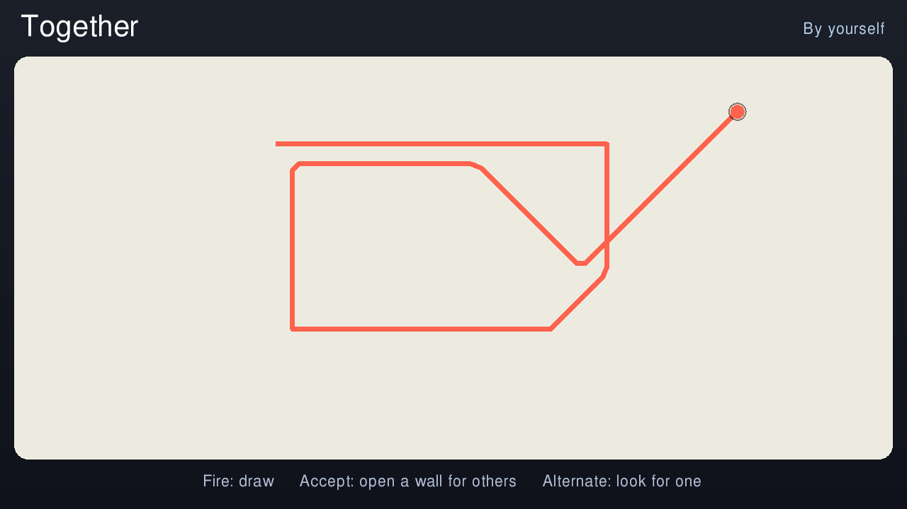
together/main.as 190 lines
// A wall to draw on. One player hosts it, and any on the same network who look for it can join. What is
// drawn is sent for sure; where everyone's pen is, is only sent quickly.
const string Game = "nexgen together";
class Stroke
{
Vec2 from, to;
int who;
}
class TogetherScreen : Screen
{
Font@ font = Assets::font("global:freesans.sfn", 24);
Font@ big = Assets::font("global:freesans.sfn", 44);
Sound@ tick = Assets::sound("global:sound/pop.wav");
Room@ room = Room();
array<Stroke@> strokes;
array<Vec2> pens(8);
array<string> news;
Vec2 pen(640, 360), last, mouseWas;
bool down = false;
float quiet = 0;
uint chosen = 0;
string name = "Player " + formatInt(randomInt(10, 99));
Color colorOf(int who) { return hsv(float(who) * 0.137f + 0.02f, 0.7f, 1); }
void tell(const string &in text)
{
news.insertLast(text);
if (news.length() > 5)
news.removeAt(0);
}
void update(float dt)
{
pen += Input::move * 520 * dt;
Vec2 mouse = Input::mouse;
if (Input::hasMouse && mouse != mouseWas) pen = mouse;
mouseWas = mouse;
pen = Vec2(clamp(pen.x, 30, 1250), clamp(pen.y, 90, 640));
if (room.state == RoomIdle || room.state == RoomLost)
{
if (room.state == RoomLost && Input::pressed("cancel"))
room.leave();
if (Input::pressed("accept"))
tell(room.host(Game, name, 8) ? "Waiting for others" : "There is no network");
else if (Input::pressed("alternate"))
{
chosen = 0;
tell(room.find(Game) ? "Looking for a wall" : "There is no network");
}
draws();
return;
}
if (room.state == RoomFinding)
{
if (Input::repeated("down") && chosen + 1 < room.found) chosen++;
if (Input::repeated("up") && chosen > 0) chosen--;
if (Input::pressed("accept") && room.found > chosen)
room.join(Game, chosen, name);
if (Input::pressed("cancel"))
room.leave();
return;
}
if (Input::pressed("cancel"))
{
room.leave();
return;
}
draws();
for (int who = room.arrived(); who >= 0; who = room.arrived())
{
tell(room.playerName(who) + " is here");
tick.play(0.6f);
// The host shows them what there is already.
if (room.hosting)
for (uint i = 0; i < strokes.length(); i++)
say(strokes[i], who);
}
for (int who = room.departed(); who >= 0; who = room.departed())
tell("Player " + formatInt(who + 1) + " has gone");
for (Message@ m = room.receive(); m !is null; @m = room.receive())
{
int kind = m.readInt();
if (kind == 0)
pens[uint(m.from)] = m.readVec2();
else if (kind == 1)
{
Stroke@ s = Stroke();
s.who = m.readInt();
s.from = m.readVec2();
s.to = m.readVec2();
if (m.whole)
add(s);
}
}
quiet -= dt;
if (quiet < 0)
{
quiet = 0.05f;
Message@ m = Message();
m.writeInt(0);
m.writeVec2(pen);
room.send(m, false);
}
}
void say(Stroke@ s, int to)
{
Message@ m = Message();
m.writeInt(1);
m.writeInt(s.who);
m.writeVec2(s.from);
m.writeVec2(s.to);
room.send(m, true, to);
}
void add(Stroke@ s)
{
strokes.insertLast(s);
if (strokes.length() > 900)
strokes.removeAt(0);
}
void draws()
{
bool on = Input::held("fire") && !Input::held("accept") || Input::mouseDown(0);
if (on && !down)
last = pen;
Vec2 d = pen - last;
if (on && d.dot(d) > 80)
{
Stroke@ s = Stroke();
s.from = last;
s.to = pen;
s.who = room.me < 0 ? 0 : room.me;
add(s);
if (room.state == RoomIn)
say(s, -1);
last = pen;
}
down = on;
}
void draw(Canvas@ c)
{
c.design(1280, 720);
c.gradient(0, 0, 1280, 720, Color(0.1f, 0.12f, 0.16f), Color(0.06f, 0.07f, 0.1f));
c.roundRect(20, 80, 1240, 570, 20, Color(0.93f, 0.92f, 0.88f));
for (uint i = 0; i < strokes.length(); i++)
{
Color ink = colorOf(strokes[i].who);
c.line(strokes[i].from.x, strokes[i].from.y, strokes[i].to.x, strokes[i].to.y, 7, ink);
c.circle(strokes[i].to.x, strokes[i].to.y, 3.5f, ink);
}
for (int i = 0; i < 8; i++)
if (room.present(i) && i != room.me)
{
c.circle(pens[uint(i)].x, pens[uint(i)].y, 9, colorOf(i));
c.text(font, room.playerName(i), pens[uint(i)].x + 14, pens[uint(i)].y - 12, colorOf(i));
}
c.circle(pen.x, pen.y, 10, colorOf(room.me < 0 ? 0 : room.me));
c.ring(pen.x, pen.y, 13, 2, Color(0, 0, 0, 0.5f));
c.text(big, "Together", 30, 18);
string state;
if (room.state == RoomIn)
state = formatInt(int(room.players)) + " here" + (room.hosting ? ", on your wall at " + Net::address : ", " + formatInt(room.ping(0)) + " ms away");
else
state = room.state == RoomFinding ? "Looking" : room.state == RoomJoining ? "Joining" : room.state == RoomLost ? "That didn't work" : "By yourself";
c.text(font, state, 1250, 30, Color(0.7f, 0.8f, 0.9f), AlignRight);
for (uint i = 0; i < news.length(); i++)
c.text(font, news[i], 44, 620 - float(news.length() - i) * 30, Color(0.2f, 0.25f, 0.35f, 0.8f));
if (room.state == RoomFinding)
{
c.roundRect(390, 190, 500, 300, 20, Color(0.1f, 0.12f, 0.18f, 0.94f));
c.text(font, room.found == 0 ? "Nobody yet..." : "Walls to draw on", 640, 206, White, AlignCenter);
for (uint i = 0; i < room.found && i < 6; i++)
{
c.roundRect(410, 250 + float(i) * 38, 460, 34, 8, i == chosen ? Blue : Color(1, 1, 1, 0.08f));
c.text(font, room.foundName(i), 424, 253 + float(i) * 38);
c.text(font, formatInt(int(room.foundPlayers(i))) + " of " + formatInt(int(room.foundMost(i))), 856, 253 + float(i) * 38, Color(0.8f, 0.85f, 0.95f), AlignRight);
}
}
string help = room.state == RoomIn ? "Fire: draw Cancel: leave" : room.state == RoomFinding ? "Up, down: choose Accept: join Cancel: stop" : "Fire: draw Accept: open a wall for others Alternate: look for one";
c.text(font, help, 640, 670, Color(0.7f, 0.75f, 0.85f), AlignCenter);
}
}
Web
Pages and pictures over https
web/main.as 107 lines
// Asking web servers for things, without waiting for them. Nothing is asked until you say so.
class WebScreen : Screen
{
Font@ font = Assets::font("global:freesans.sfn", 22);
Font@ big = Assets::font("global:freesans.sfn", 44);
array<string> titles = { "What is new in Nexgen", "The demos", "A plain page", "Somewhere that isn't safe" };
array<string> urls = { "https://api.github.com/repos/Team-Resurgent/NexgenRedux/commits?per_page=6", "https://raw.githubusercontent.com/Team-Resurgent/NexgenRedux-Media/main/README.md", "http://example.com/", "https://expired.badssl.com/" };
int chosen = 0;
Request@ request;
Texture@ picture;
array<string> lines;
float scroll = 0, took = 0;
void update(float dt)
{
if (Input::repeated("down") && chosen + 1 < int(urls.length())) chosen++;
if (Input::repeated("up") && chosen > 0) chosen--;
if (Input::pressed("accept"))
{
@request = Net::get(urls[uint(chosen)]);
lines.resize(0);
took = scroll = 0;
if (picture is null)
@picture = Assets::texture("https://raw.githubusercontent.com/Team-Resurgent/NexgenRedux/main/docs/screenshots/explore.png");
}
if (request !is null && !request.done)
took += dt;
if (request !is null && request.done && lines.length() == 0)
read();
scroll = clamp(scroll + dt * 14, 0, lines.length() > 15 ? float(lines.length() - 15) * 30 : 0.0f);
}
void read()
{
string text = request.text;
if (chosen == 0)
{
// Only the first line of each message, which is all that is wanted of it.
uint at = 0;
for (int i = 0; i < 6; i++)
{
int found = text.findFirst("\"message\":\"", at);
if (found < 0)
break;
at = uint(found) + 11;
int end = text.findFirst("\"", at);
int line = text.findFirst("\\n", at);
if (line > 0 && line < end)
end = line;
lines.insertLast(text.substr(at, uint(end) - at));
}
}
else
{
array<string>@ all = text.split("\n");
for (uint i = 0; i < all.length() && i < 120; i++)
lines.insertLast(all[i].length() > 86 ? all[i].substr(0, 86) : all[i]);
}
if (lines.length() == 0)
lines.insertLast(request.failed ? "" : "(nothing)");
}
void draw(Canvas@ c)
{
c.design(1280, 720);
c.gradient(0, 0, 1280, 720, Color(0.08f, 0.1f, 0.16f), Color(0.04f, 0.05f, 0.08f));
c.text(big, "Web", 40, 24);
c.text(font, Net::available ? "This machine is at " + (Net::address == "" ? "no address yet" : Net::address) : "There is no network", 1240, 40, Color(0.6f, 0.7f, 0.8f), AlignRight);
for (uint i = 0; i < titles.length(); i++)
{
bool here = int(i) == chosen;
c.roundRect(40, 100 + float(i) * 66, 360, 56, 12, here ? Color(0.2f, 0.4f, 0.75f) : Color(1, 1, 1, 0.07f));
c.text(font, titles[i], 60, 115 + float(i) * 66, here ? White : Color(0.7f, 0.75f, 0.85f));
}
if (picture !is null && picture.ready && !picture.failed)
{
c.image(picture, 40, 400, 360, 203);
c.rectLine(40, 400, 360, 203, 2, Color(1, 1, 1, 0.3f));
}
else if (picture !is null)
c.text(font, "A picture is on its way", 60, 480, Color(0.5f, 0.55f, 0.65f));
c.roundRect(430, 100, 810, 520, 16, Color(0, 0, 0, 0.4f));
if (request is null)
c.text(font, "Accept: ask", 835, 340, Color(0.6f, 0.65f, 0.75f), AlignCenter);
else if (!request.done)
{
c.arc(835, 340, 40, 8, App::time * 260, App::time * 260 + 100, Blue);
c.text(font, formatInt(int(request.received)) + " bytes", 835, 400, Color(0.6f, 0.65f, 0.75f), AlignCenter);
}
else if (request.failed)
{
c.text(font, "It was refused:", 460, 130, Color(1, 0.6f, 0.4f));
c.text(font, request.error, 460, 164);
}
else
{
c.push();
c.clip(440, 110, 790, 500);
for (uint i = 0; i < lines.length(); i++)
c.text(font, lines[i], 455, 124 + float(i) * 30 - scroll, Color(0.82f, 0.88f, 0.95f));
c.pop();
c.text(font, "Status " + formatInt(request.status) + ", " + formatInt(int(request.received)) + " bytes in " + formatFloat(took, "", 0, 2) + " seconds", 1240, 630, Color(0.6f, 0.7f, 0.8f), AlignRight);
}
c.text(font, "Up, down: choose Accept: ask", 640, 676, Color(0.6f, 0.65f, 0.75f), AlignCenter);
}
}
Launcher
Scenes here, and on an original Xbox the titles on its drives
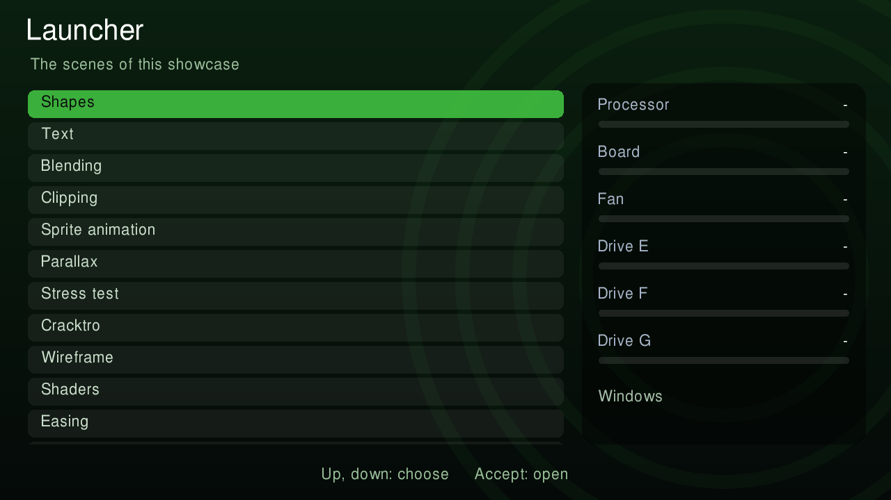
launcher/main.as 166 lines
// Finds what can be run on the hard disk of an original Xbox, shows how the console is, and runs one.
// Everywhere, it opens the scenes of this showcase too.
class Title
{
string name, path;
}
class LauncherScreen : Screen
{
Font@ font = Assets::font("global:freesans.sfn", 24);
Font@ big = Assets::font("global:freesans.sfn", 44);
Sound@ move = Assets::sound("global:sound/move.wav");
Sound@ accept = Assets::sound("global:sound/accept.wav");
array<string> drives = { "Scenes", "E", "F", "G" };
array<Title@> titles;
array<string> waiting; // folders still to look in
int drive = 0, chosen = 0, looked = 0;
float scroll = 0, sure = 0, next = 0;
int cpu = -1, board = -1, fan = -1;
void onEnter() { look(); }
void look()
{
titles.resize(0);
waiting.resize(0);
chosen = looked = 0;
scroll = 0;
if (drive == 0)
{
for (uint i = 0; i < Screens::count; i++)
if (Screens::id(i) != "main" && Screens::id(i) != "launcher")
found(Screens::title(i), "scene:" + Screens::id(i));
return;
}
string root = drives[uint(drive)] + ":\\";
check(root, "");
array<string>@ top = Xbox::folders(root);
for (uint i = 0; i < top.length(); i++)
waiting.insertLast(root + top[i]);
}
void found(const string &in name, const string &in path)
{
Title@ t = Title();
t.name = name;
t.path = path;
titles.insertLast(t);
}
void check(const string &in folder, const string &in name)
{
array<string>@ files = Xbox::files(folder);
for (uint i = 0; i < files.length(); i++)
{
uint n = files[i].length();
if (n > 4 && (files[i].substr(n - 4) == ".xbe" || files[i].substr(n - 4) == ".XBE"))
found(name == "" ? files[i] : name, folder + (name == "" ? "" : "\\") + files[i]);
}
}
void update(float dt)
{
// A folder each frame, so that nothing stops.
if (waiting.length() > 0)
{
string folder = waiting[0];
waiting.removeAt(0);
looked++;
int slash = folder.findLast("\\");
check(folder, folder.substr(uint(slash + 1)));
// One more deep, for those that are sorted.
if (looked < 200 && folder.findLast("\\") < 4)
{
array<string>@ inside = Xbox::folders(folder);
for (uint i = 0; i < inside.length() && i < 60; i++)
waiting.insertLast(folder + "\\" + inside[i]);
}
}
next -= dt;
if (next < 0)
{
next = 1;
cpu = Xbox::cpuTemperature;
board = Xbox::boardTemperature;
fan = Xbox::fan;
}
int before = chosen;
if (Input::repeated("down") && chosen + 1 < int(titles.length())) chosen++;
if (Input::repeated("up") && chosen > 0) chosen--;
if (chosen != before)
{
move.play(0.5f);
sure = 0;
}
int way = (Input::pressed("right") ? 1 : 0) - (Input::pressed("left") ? 1 : 0);
if (way != 0 && Xbox::available)
{
drive = (drive + way + int(drives.length())) % int(drives.length());
look();
}
sure = clamp(sure - dt, 0, 10);
if (Input::pressed("accept") && chosen < int(titles.length()))
{
accept.play(0.6f);
string path = titles[uint(chosen)].path;
if (path.findFirst("scene:") == 0)
Screens::push(path.substr(6));
else if (sure > 0)
Xbox::launch(path);
else
sure = 3;
}
float wanted = clamp(float(chosen) * 46 - 230, 0, 100000);
scroll += (wanted - scroll) * clamp(dt * 10, 0, 1);
}
void meter(Canvas@ c, float y, const string &in name, const string &in value, float part, const Color &in color)
{
c.text(font, name, 860, y, Color(0.65f, 0.7f, 0.8f));
c.text(font, value, 1220, y, White, AlignRight);
c.roundRect(860, y + 34, 360, 10, 5, Color(1, 1, 1, 0.1f));
if (part > 0)
c.roundRect(860, y + 34, 10 + 350 * clamp(part, 0, 1), 10, 5, color);
}
void draw(Canvas@ c)
{
c.design(1280, 720);
c.gradient(0, 0, 1280, 720, Color(0.04f, 0.12f, 0.06f), Color(0.02f, 0.04f, 0.03f));
for (int i = 0; i < 4; i++)
c.ring(1040, 400, 200 + float(i) * 90 + sin(App::time * 0.4f + float(i)) * 14, 20, Color(0.3f, 0.9f, 0.3f, 0.04f));
c.text(big, "Launcher", 40, 24);
c.text(font, drive == 0 ? "The scenes of this showcase" : "Drive " + drives[uint(drive)] + (waiting.length() > 0 ? ", still looking" : ""), 44, 82, Color(0.6f, 0.75f, 0.6f));
c.push();
c.clip(30, 120, 790, 520);
for (uint i = 0; i < titles.length(); i++)
{
float y = 130 + float(i) * 46 - scroll;
bool here = int(i) == chosen;
if (y < 70 || y > 650)
continue;
c.roundRect(40, y, 770, 40, 10, here ? Color(0.25f, 0.75f, 0.25f, 0.9f) : Color(1, 1, 1, 0.06f));
c.text(font, titles[i].name, 60, y + 6, here ? Color(0.02f, 0.08f, 0.02f) : Color(0.8f, 0.88f, 0.8f));
if (here && sure > 0)
c.text(font, "again to run it", 795, y + 6, Color(0.02f, 0.08f, 0.02f), AlignRight);
}
if (titles.length() == 0)
c.text(font, waiting.length() > 0 ? "Looking..." : "Nothing to run here", 420, 340, Color(0.6f, 0.7f, 0.6f), AlignCenter);
c.pop();
c.roundRect(836, 120, 408, 520, 20, Color(0, 0, 0, 0.45f));
string degrees = " C";
meter(c, 140, "Processor", cpu < 0 ? "-" : formatInt(cpu) + degrees, float(cpu) / 80, cpu > 65 ? Red : Green);
meter(c, 208, "Board", board < 0 ? "-" : formatInt(board) + degrees, float(board) / 80, board > 55 ? Red : Green);
meter(c, 276, "Fan", fan < 0 ? "-" : formatInt(fan) + "%", float(fan) / 100, Blue);
for (uint i = 1; i < drives.length(); i++)
{
uint size = Xbox::available ? Xbox::driveSize(drives[i]) : 0, free = Xbox::available ? Xbox::driveFree(drives[i]) : 0;
meter(c, 276 + float(i) * 68, "Drive " + drives[i], size == 0 ? "-" : formatInt(int(free)) + " MB free", size == 0 ? 0.0f : 1 - float(free) / float(size), Yellow);
}
c.text(font, Xbox::available ? "Kernel " + Xbox::text(XboxKernel) : App::platform, 860, 560, Color(0.65f, 0.75f, 0.65f));
c.text(font, Xbox::available ? Xbox::text(XboxHardware) : "", 860, 594, Color(0.65f, 0.75f, 0.65f));
c.text(font, Xbox::available ? "Up, down: choose Left, right: drives Accept: run" : "Up, down: choose Accept: open", 640, 672, Color(0.6f, 0.75f, 0.6f), AlignCenter);
}
}
Transfer
An original Xbox's drives, over FTP
transfer/main.as 72 lines
// Serves the drives of an original Xbox to FTP programs on the same network, for as long as this is open.
class TransferScreen : Screen
{
Widget@ go;
Widget@ write;
Widget@ state;
Widget@ last;
Widget@ much;
string password;
void onEnter()
{
// A new one each time, as FTP sends it for anyone to see.
for (int i = 0; i < 6; i++)
password += formatInt(randomInt(0, 9));
Widget@ page = Ui::root;
page.padding = 44;
page.gap = 16;
page.label("Transfer", "title");
Widget@ panel = page.panel();
panel.grow = 1;
say(panel, "Address").text = Net::address == "" ? "No network" : "ftp://" + Net::address;
say(panel, "User").text = "xbox";
say(panel, "Password").text = password;
@state = say(panel, "State");
@last = say(panel, "Latest");
@much = say(panel, "Moved");
panel.line();
panel.paragraph("Only machines on this network are answered. Anyone on it could read what is sent, so stop it when you are done: it stops by itself when you leave.", "small");
Widget@ row = page.row();
@go = row.button("Start", WidgetEvent(this.onGo));
go.grow = 1;
@write = row.toggle("Let it change files", false);
write.grow = 1;
go.enabled = Xbox::available;
write.enabled = Xbox::available;
}
void onExit() { Xbox::stopFtp(); }
Widget@ say(Widget@ into, const string &in name)
{
Widget@ row = into.row();
row.label(name, "small").width = 160;
return row.label("");
}
void onGo(Widget@ w)
{
if (Xbox::ftpRunning)
Xbox::stopFtp();
else if (!Xbox::startFtp("xbox", password, write.checked))
Ui::toast("It couldn't be started");
go.text = Xbox::ftpRunning ? "Stop" : "Start";
write.enabled = Xbox::available && !Xbox::ftpRunning;
}
void update(float dt)
{
state.text = !Xbox::available ? "There are drives to serve only on an original Xbox" : !Xbox::ftpRunning ? "Stopped" : formatInt(int(Xbox::ftpClients)) + " connected";
last.text = Xbox::ftpLast;
much.text = formatInt(int(Xbox::ftpKilobytes)) + " KB";
}
void draw(Canvas@ c)
{
c.designHeight(720);
c.gradient(0, 0, c.width, 720, Color(0.05f, 0.09f, 0.16f), Color(0.02f, 0.03f, 0.06f));
Ui::draw(c);
}
}
Nothing found.